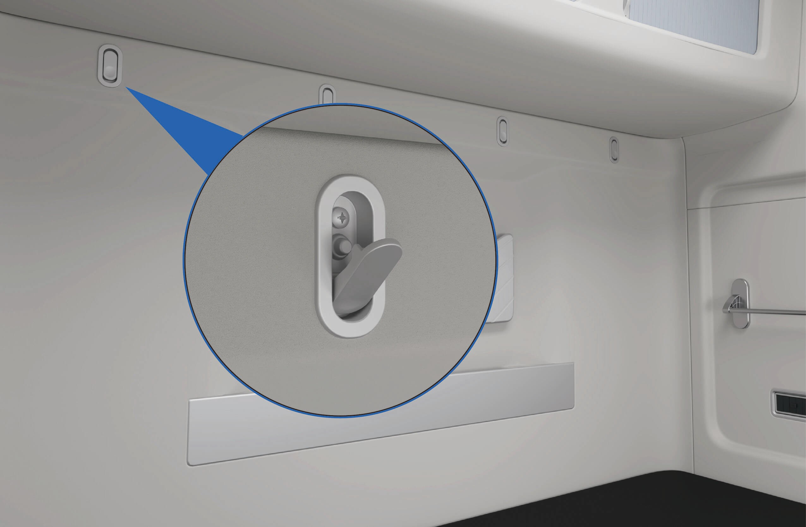
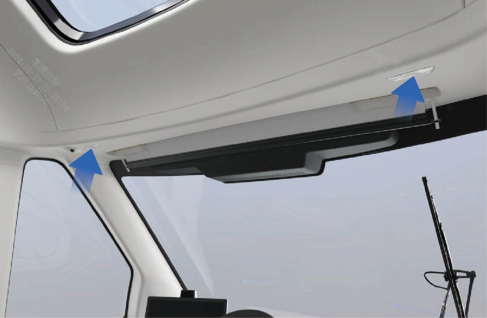
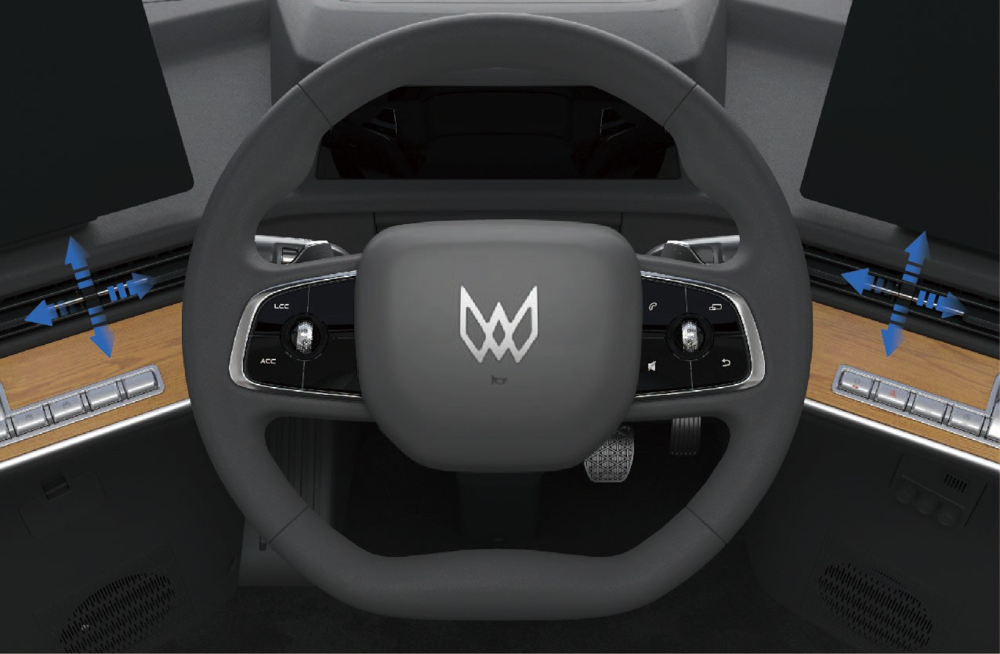
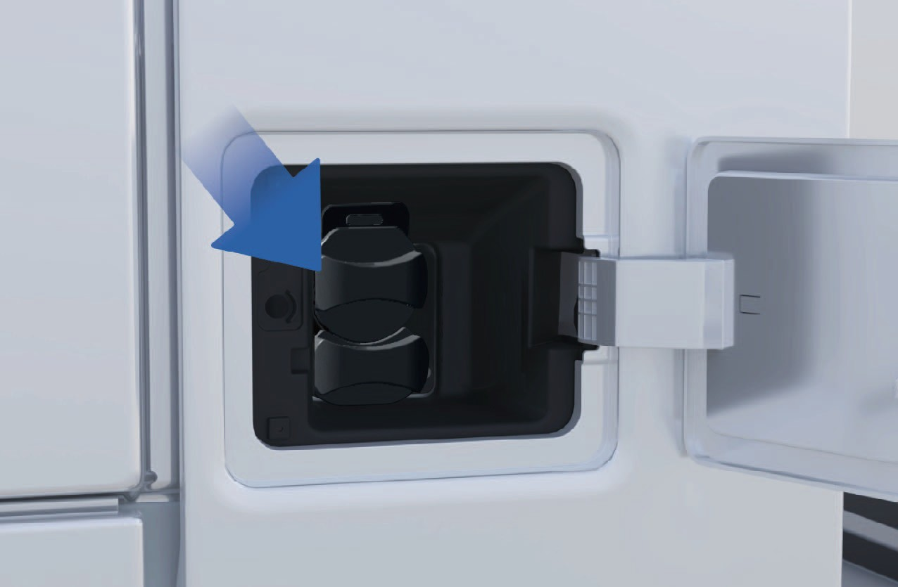
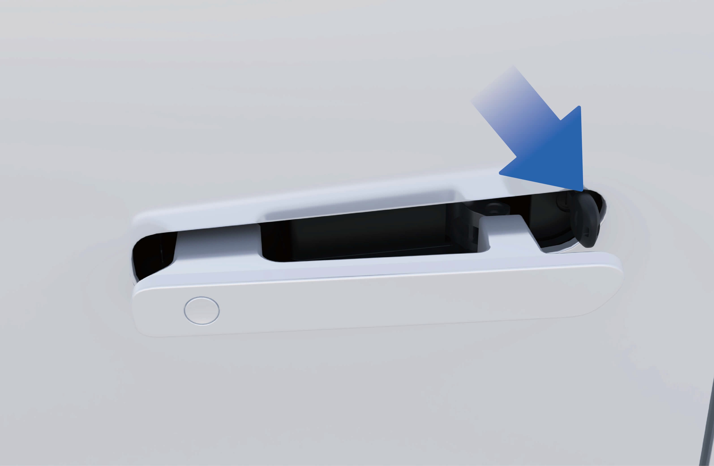
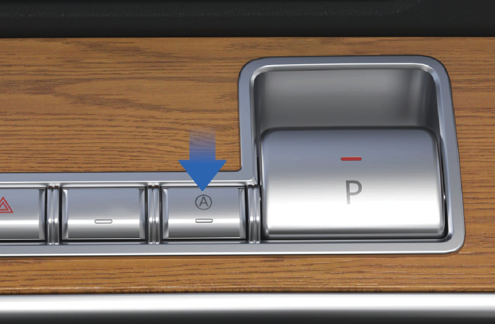
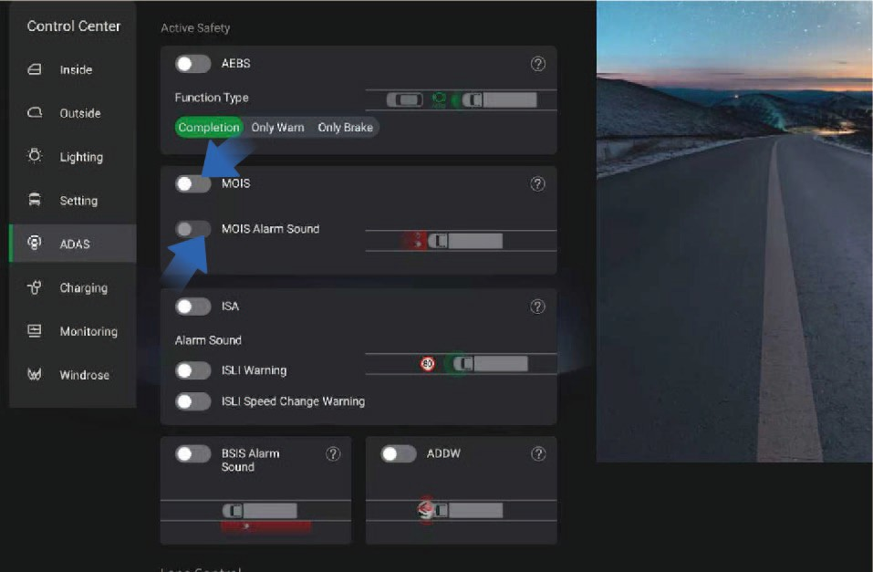
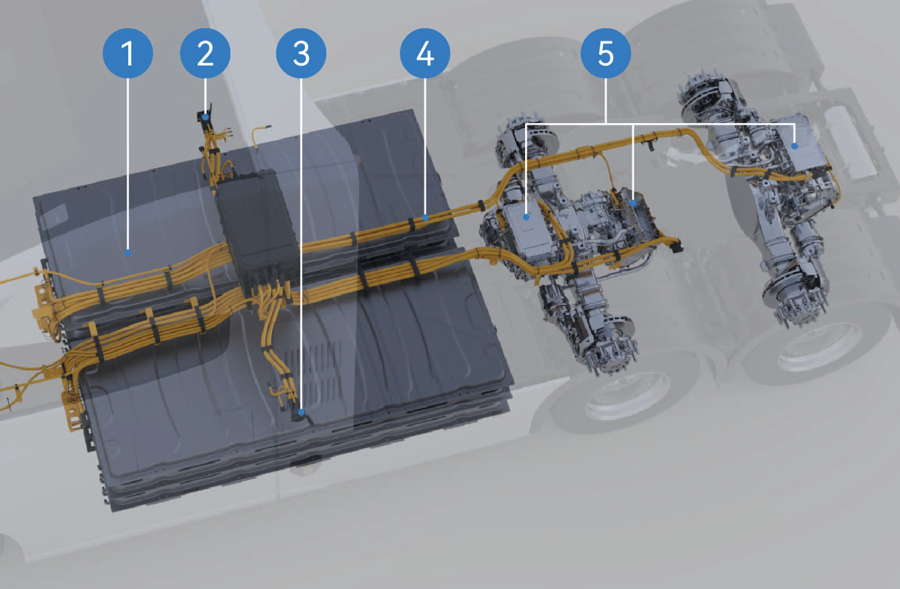
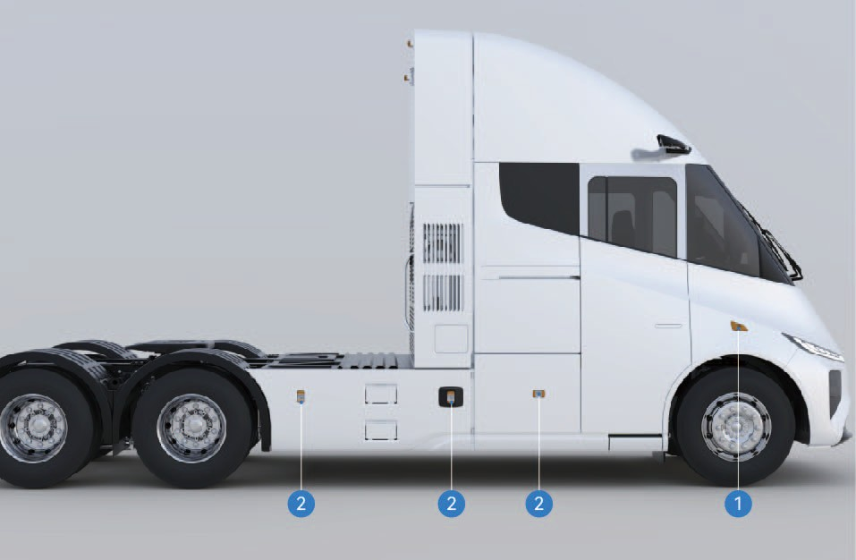

Arvoisa asiakas,
Kiitos, että valitsit Windrose-ajoneuvon.
Lue tämä omistajan käsikirja huolellisesti ennen ajoneuvon ensimmäistä käyttökertaa. Se sisältää tärkeää tietoa ajoneuvon ominaisuuksista, turvallisesta käytöstä, huoltovaatimuksista ja teknisistä tiedoista. Perehtymällä näihin tietoihin varmistat turvallisen ajamisen ja ajoneuvon optimaalisen suorituskyvyn.
Eri ajoneuvokonfiguraatioiden ja lisävarusteiden vuoksi toimitettu ajoneuvo saattaa poiketa hieman tässä käsikirjassa esitetyistä kuvauksista tai kuvituksista. Windrose pidättää oikeuden muuttaa ajoneuvon rakennetta, teknisiä tietoja ja varusteita ilman ennakkoilmoitusta osana jatkuvaa tuotekehitystä.
Tässä käsikirjassa esitetyt tiedot, kuvitukset ja tekniset tiedot olivat julkaisuhetkellä paikkansapitäviä. Ne on annettu ainoastaan viitteeksi eivätkä ne muodosta sopimussitoumusta.
Mitään osaa tästä omistajan käsikirjasta ei saa jäljentää tai välittää missään muodossa ilman Windroselta saatua kirjallista ennakkolupaa.
Huomio: Tämän käsikirjan kansikuvat ja kuvitukset on tarkoitettu ainoastaan viitteeksi. Ajoneuvon todellinen ulkonäkö ja tekniset tiedot voivat vaihdella.
Sisällysluettelo
- Sähköinen liukuovi
- Turvavyö
- Sähköikkuna
- Makuutilan yksityisyysverho*
- Panoraamaluukku
- Tuulilasin sähköinen aurinkosuoja
- Makuutila
- Peili
- Juomankannatin
- Tuhkakuppi
- Sivutyökalulaatikko
- Sisäinen säilytyslaite
- Verkkopussi
- Lehtiteline
- Vaatekoukku
- Ripustuslaite
- USB-lataus
- Puhelimen langaton lataus
- Virtalähde
- Kattolamppu
- Tervetulolamppu
- Lukuvalo
- Tunnelmavalaistu
- Ilmastointijärjestelmä
- Ilmastointiaukon säätö
- Auton tuoksujärjestelmä
- Ympäryskatselujärjestelmä (AVM)
- Lähtemisen informaatiojärjestelmä (MOIS)
- Matalan nopeuden hälytys ja peruuttaminen
- Elektroninen jarrujärjestelmä (EBS)
- Elektroninen jarruvoiman jako (EBD)
- Ajoluiston esto (ASR)
- Elektroninen ajonvakautusjärjestelmä (ESC)
- Mäkilähdön avustin (HSA)
- Rengashätäturvalaite (TESD)
- Sähköhydraulinen ohjaustehostin (EHPS)
- Elektronisesti ohjattu ilmajousitus (ECAS)
- Rengaspaineen valvontajärjestelmä (TPMS)
- Multimedian yleiskatsaus
- Kuljettajan työkalut
- Turvavasara
- Sammutin
- Perävaunun vetäminen
- Jarrujen pettäminen
- Ohjauksen hallitsemattomuus tai vika
- Rengasrikko
- Ajoneuvon sivuluisto
- Korkean jännitteen tahaton katkaisu
- Hätäevakuointi
- Hätäpelastushenkilöstön suojavarusteet
- Korkean jännitteen järjestelmätiedot
- Korkean jännitteen järjestelmän kytkeminen pois
- Palavan ajoneuvon pelastaminen
- Vedessä olevan ajoneuvon pelastaminen
- Huollon tarve
Käyttäjälle
↑ YlösEnnen ajamista
Tämä ajoneuvo on akkusähköinen vetoauto.
Noudata päivittäisen käytön ja huollon aikana kaikkia tässä omistajan käsikirjassa (jäljempänä "tämä käsikirja") annettuja varoituksia ja ohjeita ajoneuvovaurioiden tai henkilövahinkojen välttämiseksi.
Ennen ajoneuvon ensimmäistä käyttökertaa lue tämä käsikirja huolellisesti tutustuaksesi ajoneuvon ominaisuuksiin ja käyttövaatimuksiin. Jos käytön aikana ilmenee ongelmia, ota yhteyttä Windrose-palveluneuvontaan.
Tämän käsikirjan tekijänoikeudet ovat Windrosella. Mitään osaa tästä käsikirjasta ei saa jäljentää, välittää tai jakaa ilman Windroselta saatua kirjallista ennakkolupaa.
Windrose pidättää oikeuden päivittää tämän käsikirjan sisältöä ilman ennakkoilmoitusta osana jatkuvaa tuotekehitystä. Viimeisimmät ajoneuvotiedot löytyvät sähköisestä omistajan käsikirjasta, joka on saatavilla keskusnäytöltä tai Windrose-mobiilisovelluksesta.
Windrose-verkkosivusto:
Windrose-palveluneuvonta:Voit hakea "Windrose" virallisesta mobiilisovelluskaupastaladataksesi sovelluksen.
HuomioLyhenteet esitellään muodossa "koko nimi (lyhenne)" ensimmäisen maininnan yhteydessä. Tämän jälkeen käytetään lyhennettä.
Varoitusmerkinnät
↑ YlösEnnen ajamista
Tässä käsikirjassa käytetään seuraavia varoitussanoja ja -symboleja:
VaroitusOsoittaa vaarallisen tilanteen, joka toteutuessaan voi aiheuttaa vakavan loukkaantumisen tai kuoleman.
Huomautus
↑ YlösHuomautusOsoittaa tilanteen, joka voi aiheuttaa vahinkoa ajoneuvolle tai sen osille.
Huomio
↑ YlösHuomioTarjoaa lisätietoa tai käyttöohjeita.
Ympäristönsuojelu
↑ YlösYmpäristönsuojeluOsoittaa ympäristönsuojeluun tai energiatehokkuuteen liittyvää tietoa.
Tähti
↑ YlösOminaisuuden nimen jälkeinen tähti (*) osoittaa, että toiminto koskee vain tiettyjä ajoneuvomalleja tai valinnaisia konfiguraatioita.
Kuvatiedot
↑ Ylös
Tämä nuoli osoittaa kohteen tarkan sijainnin kuvassa.
Tämä nuoli osoittaa kohteen liikesuunnan kuvassa.
Tämä nuoli osoittaa kohteen pyörimissuunnan kuvassa.
Tämä nuoli osoittaa kohteen kääntymissuunnan kuvassa.
Ympäristönsuojelu
↑ YlösEnnen ajamista
Windrose on sitoutunut kestävään kehitykseen ja ympäristönsuojeluun. Tämä ajoneuvo on suunniteltu parantamaan energiatehokkuutta ja vähentämään päästöjä. Voit edistää ympäristönsuojelua ajamalla vastuullisesti ja käyttämällä ajoneuvoa energiatehokkaasti.
Käyttöturvallisuus
Ennen ajamista
Noudata aina suurinta sallittua kokonaismassaa ja akselikuormaa. Älä ylikuormita ajoneuvoa, sillä ylikuormitus voi aiheuttaa ajoneuvovaurioita, hallinnan menettämisen tai henkilövahinkoja.
Vaihda törmäyksessä iskuvoimille altistunut turvavyö, vaikka näkyviä vaurioita ei olisi
Varoitushavaittavissa.
Varoitus
Älä koskaan rullaa alamäkeä vapaalla vaihteella. Tämä poistaa vetomoottorin jarrutusvaikutuksen ja voi johtaa ajoneuvon hallinnan menettämiseen.
Säädä istuin oikeaan asentoon ennen ajamista. Väärä istuma-asento voi aiheuttaa väsymystä, odottamattoman istuimen liikkeen tai ajoneuvon hallinnan menettämisen. Varmista, että istuimen asento mahdollistaa turvavyön asianmukaisen käytön.
Turvavyöt ovat välttämättömiä turvallisuuslaitteita. Kaikkien matkustajien on käytettävä turvavyötä oikein aina ajoneuvon liikkuessa.
Älä kallista istuimen selkänojaa liiaksi taaksepäin ajon aikana. Hätäjarrutustilanteessa väärä istuma-asento voi
heikentää turvavyön tehoa.
Älä ylitä 30 km/h nopeutta missään seuraavista tilanteista:
Ajettaessa ei-moottoroiduille ajoneuvoille tarkoitetuille kaistoille tai niiltä pois, rautateiden tasoristeyksiin, jyrkkiin mutkiin, kapeille teille tai silloille.
Kääntyessä U-käännöksellä, kääntymisessä tai laskeutuessa jyrkässä rinteessä.
Näkyvyys on alle 50 m sumun, sateen, lumen, pölyn tai rakeiden vuoksi.
Ajettaessa jäisillä, lumisilla tai mutaisilla teillä.
Hinattaessa viallista ajoneuvoa.
↑ Ylös
HuomautusKun ajat radioastronomisen observatorion lähellä, pidä turvallinen etäisyys. Tutkavarusteiset ajoneuvot voivat aiheuttaa sähkömagneettisia häiriöitä observatorion laitteille.
Alkuperäiset osat
Ennen ajamista
Windrose ei myönnä takuuta osille seuraavissa tilanteissa:
Luvaton ajoneuvon muuntaminen, erityisesti ajoturvallisuuteen liittyviin järjestelmiin (esim. korkeajännite-, sähkö-, jarru-, ohjaus- tai TBOX-järjestelmät).
Ajoneuvon OBD-järjestelmän peukalointi.
Hyväksymättömien osien tai nesteiden käyttö, joka aiheuttaa turvallisuusriskejä tai ajoneuvovaurioita.
Asiakirjojen toimittamatta jättäminen, jotka vahvistavat hyväksyttyjen nesteiden käytön takuuaikana.
Laiminlyönti huoltaa ajoneuvoa Windrose-valtuutetussa huoltoliikkeessä huoltovaatimusten mukaisesti.
Tietoturva
↑ YlösEnnen ajamista
Sovellettavien lakien ja säädösten mukaisesti Windrose kerää ja käsittelee ajoneuvotietoja, mukaan lukien sijaintitiedot, ajokäyttäytymistiedot, ääni- ja videotallenteet sekä henkilötiedot.
Windrose toteuttaa asianmukaiset tekniset ja organisatoriset toimenpiteet tällaisten tietojen suojaamiseksi sovellettavien tietosuojasäädösten ja alan standardien mukaisesti.
Ajoneuvon muuntaminen
Ennen ajamista
↑ YlösMuutostöissä tarvittavat asiakirjat
Kaikkien ajoneuvon muutosten on täytettävä sovellettavat tekniset ja sääntelyvaatimukset. Ennen muutostöitä asiaankuuluvat tekniset asiakirjat on toimitettava Windroselle.
Asiakirjoihin on sisällyttävä vähintään:
Muunnetun ajoneuvon käyttötarkoitus ja käyttöolosuhteet.
Kokonaismassa ja akselikuormat muutoksen jälkeen.
Muunnetun ajoneuvon kokonaismitat (mukaan lukien työkonfiguraatio).
Korin lattiakorkeus maanpinnasta.
Korin kiinnitystapa.
Alikehyksen kaavakuva.
Ajoneuvon romuttaminen
Ennen ajamista
↑ YlösAjoneuvot, jotka eivät enää täytä liikenneturvallisuusvaatimuksia, on hävitettävä sovellettavien ympäristösäädösten mukaisesti.
Ajoneuvon romuttamisen ja korkean jännitteen akun kierrätyksen on suoritettava Windrose tai valtuutettu kierrätysorganisaatio.
VaroitusKorkean jännitteen akkujen epäasianmukainen hävittäminen voi aiheuttaa tulipalon tai ympäristövahinkoja. Älä pura tai hävitä korkean jännitteen akkuja ilman lupaa.
Korkean jännitteen akun kierrätys
Windrose testaa korkean jännitteen akun kapasiteetin ja kunnon, ja kierrättää korkean jännitteen akun sovellettavien lakien, säädösten ja kulloinkin vallitsevien markkinaolosuhteiden mukaisesti.
Korkean jännitteen akun kierrätys: Kierrätyksen ja jatkokäsittelyn suorittaa Windrose tai Windroseen nimeämä kolmannen osapuolen kierrätysorganisaatio.
Korkean jännitteen akun kuljetus: Korkean jännitteen akut kuljettaa ammattimainen kuljetusliike. Ota yhteyttä Windrose-valtuutettuun huoltoliikkeeseen ammattitaitoisen kierrätysorganisaation nimeämiseksi käsittelyä varten.
Varoitus
Älä hävitä tai heitä pois käytettyjä korkean jännitteen akkuja tahattoman tulipalon tai vakavan ympäristön saastumisen välttämiseksi.
Älä luovuta käytettyjä korkean jännitteen akkuja muille yksiköille tai yksityishenkilöille. Olet vastuussa kaikesta ympäristön saastumisesta tai turvallisuusonnettomuuksista, jotka aiheutuvat korkean jännitteen akkujen luvattomasta purkamisesta.
Taloudellinen ajaminen
Ennen ajamista
Seuraavat käytännöt auttavat maksimoimaan ajomatkan ja energiatehokkuuden:
Ylläpidä tasaista nopeutta ja vältä äkillistä kiihdyttämistä tai jarrutusta.
Pidä ajoneuvo hyvässä toimintakunnossa säännöllisen huollon avulla.
Älä koskaan rullaa vapaalla vaihteella, sillä tämä aiheuttaa sähköakselin riittämättömän voitelun ja johtaa komponenttivaurioihin.
Talviajo
↑ YlösEnnen ajamista
Talviajoon valmistautuminen
Käytä laadukasta jäähdytysnestettä alhaisimman lämpötilan perusteella, ja jäähdytinnesteen jäätymispisteen tulee olla paikallista minimilämpötilaa alempi.
Varmista, että akku on aina täynnä, jotta akku ei jäädy alhaisissa lämpötiloissa.
Jäähdytinnesteen käyttö talvella
↑ YlösKylmällä kaudella tai kun ajoneuvo on pysäköitynä kylmään paikkaan, on varmistettava jäähdytinnesteen pakkasnestominaisuudet. Käytä Windroseen suosittelemaa jäähdytinnestettä.
Talviajoa koskevat varotoimenpiteet
Suositellaan lumikettinkien tai talvirenkaiden käyttöä.
Vältä äkillistä kiihdyttämistä, äkillistä jarrutusta ja teräviä käännöksiä suurilla nopeuksilla.
Aja lumi- ja jääpeitteisillä teillä alhaisella nopeudella paremman käyttöjarrutuksen varmistamiseksi.
Pidä kohtuullinen etäisyys ajoneuvojen välillä (lisää ajoneuvojen välistä etäisyyttä ajettaessa sateisella ja lumisella
Lumikettinkien asennuksen jälkeen käynnistä ajoneuvo ja tarkista, ovatko ketjut löysällä tai ovatko renkaat asennettu oikein.
↑ YlösVaroitusLumikettinkejä käytettäessä on kiellettyä ylittää suurin sallittu ajonopeus onnettomuuksien välttämiseksi.
kelillä tai jäisillä teillä, mikä voi pidentää käyttöjarrutusmatkaa).
Lumikettingien käyttö
Ennen ajamista
Lumikettinkejä käytettäessä huomioi seuraavat seikat:
Lumikettinkien käyttöä suositellaan ajettaessa teillä, jotka ovat paksujen lumi- tai jääkerrosten peitossa.
Lumikettinkien on oltava yhteensopivat ajoneuvossa olevien renkaiden koon ja tyypin kanssa.
Asenna lumikettingit vetopyörästön ulkorenkaisiin (molemmille puolille).
Varo vahingoittamasta renkaita lumikettinkejä asennettaessa tai poistettaessa.
Huomautus
 Poista lumikettingit ajettaessa pitkiä matkoja lumettomilla ja jäättömillä teillä.
Poista lumikettingit ajettaessa pitkiä matkoja lumettomilla ja jäättömillä teillä.Varmista, etteivät lumikettingit kosketa tai häiritse ajoneuvon komponentteja ajon aikana.
Asenna ja poista lumikettingit vain ajoneuvon ollessa pysäköitynä tasaiselle alustalle.
Ajaminen trooppisissa ja kuumissa olosuhteissa
Ennen ajamista
Tarkista ajoneuvon kunto ennen ajamista:
Tarkista, että jäähdytinnesteen taso on normaalialueella, ja tarkasta vuodot.
Älä jätä syttyviä esineitä (esim. sytyttimiä, aerosolituotteita, hajuvesiä) kojelaudalle tai suoraan auringonpaisteeseen pitkiksi ajoiksi. Korkeat lämpötilat voivat aiheuttaa painesäiliöiden halkeamisen ja palovaaran.
Ajon aikana kiinnitä huomiota seuraaviin seikkoihin:
varoitusvalot syttyvät, lopeta ajaminen välittömästi ja
ota yhteyttä Windrose-valtuutettuun huoltoliikkeeseen.
Tarkkaile rengaspainetta ja renkaan lämpötilaa. Jos rengaspaine tai renkaan lämpötila on epänormaali, lopeta ajaminen välittömästi ja anna renkaiden jäähtyä luonnollisesti. Älä laske paineita tai jäähdytä renkaita vesisumutuksella tai ilman laskemisella, sillä tämä kiihdyttää helposti renkaiden vanhenemista ja kulumista, ja voi vakavissa tapauksissa aiheuttaa rengasrikon.
Jos rengasrikko tapahtuu ajon aikana, paina välittömästi varoitusvilkkukytkintä, pidä ohjauspyörästä kiinni molemmilla käsillä kello 9 ja 3 asennossa kääntämättä, ja paina jarrupoljinta vuorotellen hidastaaksesi ajoneuvoa vähitellen ja varoittaaksesi muita tienkäyttäjiä.
Tarkkaile rengaspainetta ja renkaan lämpötilaa.
Jos jompikumpi on epänormaali, pysäytä ajoneuvo niin pian kuin se on turvallista ja anna renkaiden jäähtyä luonnollisesti. Älä jäähdytä renkaita vedellä tai laskemalla niistä ilmaa, sillä tämä voi nopeuttaa renkaiden vanhenemista ja lisätä räjähdysriskiä.
Tarkkaile mittariston merkkivaloja ja varoitusvaloja, ja jos ajoneuvoon liittyvät MIL- tai varoitus-
Ajaminen epätasaisilla ja liukkailla teillä
Ennen ajamista
Kiinnitä huomiota seuraaviin seikkoihin ajettaessa epätasaisilla ja liukkailla teillä:
Epätasaisilla teillä hidasta nopeutta ajokomfortin parantamiseksi ja jousituksen sekä iskunvaimentimien kulumisen minimoimiseksi.
Liukkailla teillä hidasta nopeutta ja jarrutusta varovaisesti vetopitävyyden menetyksen ja ajoneuvon sivuluiston estämiseksi.
Jos ajoneuvo alkaa luistaa sivusuunnassa märällä tai liukkaalla pinnalla, hidasta nopeutta tasaisesti käyttöjarrulla ja vältä äkillisiä ohjausliikkeitä.
Ramppien ajaminen
↑ YlösEnnen ajamista
Ylämäkiajoa koskevat varotoimenpiteet
Jos ajoneuvo peruuttaa ylämäkeen lähdettäessä, paina jarrupoljinta välittömästi, kytke elektroninen seisontajarru ja käynnistä ajomenettely uudelleen.
Nousussa ylläpidä alhaista ja tasaista nopeutta. Paina kaasupoljinta asteittain ja vältä äkillistä kiihdyttämistä tai jarrutusta.
Alamäkiajoa koskevat varotoimenpiteet
Hidasta ennen laskua, jotta ajoneuvo siirtyy alamäkeen hallitussa nopeudessa.
Älä koskaan rullaa alamäkeä vapaalla vaihteella. Tämä poistaa vetomoottorin jarrutusvaikutuksen ja voi johtaa ajoneuvon hallinnan menettämiseen.
Ennen laskua varmista, että jarrujärjestelmä toimii oikein. Jos vikaa epäillään, korjaa ongelma ennen jatkamista.
Vältä teräviä ohjausliikkeitä alamäkiteillä kaatumisriskin vähentämiseksi.
Pitkillä laskuilla vältä jatkuvaa jarrutusta. Käytä asianmukaisia nopeudenhallinta- ja jarrutustekniikoita jarrujen ylikuumenemisen ja mahdollisen jarrujen haipumisen estämiseksi.
Turvallisuuspuutteiden ilmoittaminen
↑ YlösEnnen ajamista
Jos epäilet ajoneuvossa olevan turvallisuuteen liittyvän vian, pysäytä ajoneuvo turvalliseen paikkaan niin pian kuin mahdollista ja ota välittömästi yhteyttä Windrose-asiakaspalveluun tai Windrose-valtuutettuun huoltoasemaan.
Windrose voi antaa turvallisuustiedotteita, huoltokampanjoita tai takaisinkutsuja sovellettavien lakien ja säädösten edellyttäessä. Euroopan unionissa ajoneuvon turvallisuustakaisinkutsut käsitellään EU:n markkinavalvonta- ja tyyppihyväksyntäkehyksen mukaisesti, ja ne koordinoidaan asiaankuuluvien kansallisten tyyppihyväksyntä- ja markkinavalvontaviranomaisten kanssa. Noudata kaikkia Windroseen antamia turvallisuusohjeita ja huoltokampanjavaatimuksia.
Windrose-palveluneuvonta: [EU-YHTEYSTIEDOT VAHVISTETTAVA]
Windrose-palveluverkkosivusto: [EU-PALVELUVERKKOSIVUSTO VAHVISTETTAVA]
Valtuutettu huoltoverkko: [EU-HUOLTOVERKKO VAHVISTETTAVA]
Ajoneuvon ulkopuoli
Ajoneuvon tunnistaminen

Etusuuntavalo / päiväajovalo
Parkkivalo 3. Panoraamaluukku
4. Sivutyökalulaatikko 5. Latausliitäntä

|
|
|
|
|
|
|---|---|---|---|---|---|
|
|
|
|
|
|
|
|
|
|
|
|
4.
Ohjauspyörä
Ajoneuvon viihdenäyttö
Kineettisen regeneratiivisen jarrutuksen polkusin (vasen)
7.
Mittaristo
Kojelauta-säilytyslaatikko/AR-HUD*
Kineettisen regeneratiivisen jarrutuksen polkusin (oikea)
|
|
11. |
|
12. |
|
|---|---|---|---|---|---|
|
|
14. |
|
15. |
|
Ajoneuvon arvokilpi ja VIN-tunnus
Ajoneuvon tunnistaminen
Ajoneuvon arvokilpi

Ajoneuvon arvokilpi sijaitsee ajoneuvon oikean liukuoven karmissa (C-pilari).
Arvokilpi näyttää seuraavat tiedot:
Valmistajan nimi
Koko ajoneuvon tyyppihyväksyntänumero (WVTA)
Ajoneuvon tunnistenumero (VIN)
Rekisteröinnin enimmäissallittu massa
Teknisesti sallittu enimmäiskuormitettu massa
Muut sovellettavien määräysten edellyttämät sääntelytiedot
Ajoneuvon tunnistenumero

Ajoneuvon tunnistenumero (VIN) on leimattu oikeanpuoleiseen runkopalkkiin, lähelle etuakselin keskilinjaa.
Moottorin arvokilven ja koodin sijainti
Ajoneuvon tunnistaminen

Moottorin arvokilven sijainti
Moottorin sarjanumeron sijainti
Huomautus
Moottorin sarjanumeron hierros (jäljenne) toimitetaan moottorin asiakirjojen mukana, kun ajoneuvo lähtee tehtaalta. Säilytä tämä asiakirja myöhempää käyttöä varten.
Koska eri valmistajien toimittamat vetomoottorit voivat vaihdella, moottorin arvokilpeen ja siihen liittyviin asiakirjoihin merkityt tiedot saattavat poiketa toisistaan. Katso tarkemmat tiedot varsinaisesta tuotteesta.
Tuulilasin mikroaalto-/RF-läpäisevyys Ajoneuvon tunnistaminen
Tämän ajoneuvon tuulilasissa ei ole metallipinnoitteita, jotka häiritsisivät radiotaajuus- (RF) signaalin lähetystä.
Sähköisiä tietullinkeräyslaitteita (ETC), tietullitunnisteita, telematiikkalaitteita tai muita RF-pohjaisia laitteita voidaan siten asentaa tuulilasiin laitteen valmistajan toimittamien asennusohjeiden mukaisesti.
Sähköinen liukuovi
↑ YlösAjoneuvoon pääsy
Ajoneuvon oikealle puolelle on asennettu sähköinen liukuovi. Ovi voidaan avata tai sulkea useilla eri käyttötavoilla.
Käyttöohjeet
Ulkokäyttö

↑ YlösSähköinen: Kun ajoneuvo on lukitsemattomana, paina upotettua ovenkahdankytkin. Sähköinen liukuovi avautuu tai sulkeutuu automaattisesti.
Manuaalinen: Kun ajoneuvo on lukitsemattomana:
1. Paina upotetun ovenkahvan etuosaa vapauttaaksesi sen.
2. Vedä kahvaa ulospäin lukituksen avaamiseksi.
3. Liu'uta ovi auki manuaalisesti.

Ajoneuvoon nousu

Kun sähköinen liukuovi on avattu, nousse ohjaamoon seuraavien vaiheiden mukaisesti:
Käänny ovea kohti ja tartu vasempaan ja oikeaan kahvaan molemmilla käsillä.
Aseta toinen jalka alemmalle askelmalle ja vedä itseäsi ylöspäin.
Aseta toinen jalkasi ylemmälle askelmalle.
Siirrä alempi kätesi ylemmäksi kahvalla.
Astu ajoneuvon ohjaamoon.
Liukastuminen tai kaatuminen ajoneuvoon noustessa tai siitä poistuessa voi aiheuttaa henkilövahingon.
Märkä tai likainen jalkineet lisäävät merkittävästi liukastumisriskiä. Ole erityisen varovainen noustessasi ohjaamoon tai poistuessasi sieltä.
Pidä aina kolmen pisteen kosketus ajoneuvoon noustessa tai siitä poistuessa (kaksi kättä ja yksi jalka tai kaksi jalkaa ja yksi käsi).
Älä koskaan hyppää ajoneuvosta.
Sisäkäyttö
Kun ajoneuvo on lukitsemattomana:

Valitse ajoneuvon tietonäytöltä "Ohjauskeskus".
Vaihda "Sisä"-käyttöliittymään.
Paina "Liukuovi"-ohjauspainiketta avataksesi tai sulkeaksesi sähköisen liukuoven.
Sähköinen: Kun ajoneuvo on lukitsemattomana, paina liukuoven edessä olevan B-pilarin verhoilupaneelin kytkintä avataksesi tai sulkeaksesi oven.
Manuaalinen: Jos liukuovi on kiinni, vedä sisäkahvaa taaksepäin oven lukituksen avaamiseksi ja liu'uta ovi auki manuaalisesti.
Jos liukuovi on auki, pidä kiinni sisäkahvasta ja liu'uta ovi eteenpäin sulkeaksesi sen.
Hätätilanteet ajoneuvossa


Jos sähköinen kytkin tai sisäkahva ei toimi:
Poista liukuoven suojapaneelin alempi suojalevy.
Vedä hätävapaustuskaapelia liukuoven manuaaliseksi lukituksen avaamiseksi.
Keskuslukituskytkin

Kun liukuovi on suljettu:
Paina kojelaudan oikealla puolella olevassa painikeryhmässä sijaitsevaa keskuslukituskytkintä lukitaksesi liukuoven.
Tilavilkku syttyy, kun ovi on lukittu.
Paina kytkintä uudelleen avataksesi oven lukituksen.
Liukuoven manuaalitila

Manuaalitila voidaan ottaa käyttöön tai poistaa käytöstä ajoneuvon tietonäytön kautta:
Valitse "Ohjauskeskus".
Vaihda "Valvonta"-käyttöliittymään.
Valitse "Liukuoven manuaalitila".
↑ YlösKun manuaalitila on käytössä, liukuovea voidaan käyttää vain manuaalisesti.
Liukuoven puristuksenestotoiminto
Automaattisen sulkemisen aikana, jos liukuovi havaitsee esteen, ovi pysähtyy sulkeutumasta ja palautuu automaattisesti avoimeen asentoon.
Varotoimenpiteet
↑ YlösVaroitusPuristuksenestotoiminto on aktiivinen vain sähköisen sulkemistoiminnon aikana. Se ei ole aktiivinen, kun ovea käytetään manuaalisesti.
Turvavyö
↑ YlösAjoneuvoon pääsy
Kuljettajan ja etumatkustajan istuimet on varustettu turvavöillä. Turvavyöt auttavat estämään tai vähentämään matkustajien loukkaantumisia hätäjarrutuksen tai törmäyksen aikana.
Käyttöohjeet
↑ YlösKuljettajan turvavyö sijaitsee kuljettajan istuimen vasemmalla puolella ja se voidaan vetää suoraan ulos kiinnittämistä varten.
Etumatkustajan turvavyö sijaitsee etumatkustajan istuimen oikealla puolella. Kun etumatkustajan istuin on käytössä, muistuta matkustajaa kiinnittämään turvavyö oikein ennen ajoneuvon liikkeelle lähtöä.
Turvavyön oikea käyttö
Noudata seuraavia ohjeita turvavyötä käytettäessä:
• Vyön lantiohihna on asetettava matalalle lantion yli (lonkat), ei vatsan yli.
• Vyön on istuttava tiukasti kehoa vasten ilman kiertymisiä.
• Olkahihnan on kuljettava hartian keskiosan yli.
• Älä koskaan aseta vyötä kaulan yli tai kainalon alle.
• Turvavyön kiinnittämisen jälkeen vedä olkahihnaa ylöspäin varmistaaksesi, että lantiohihna istuu tukevasti lonkkien yli.
• Varmista aina ennen ajamista, että turvavyö on kunnolla lukittunut.
Turvavyömuistutus
Jos kuljettajan turvavyötä ei ole kiinnitetty, kojelaudassa oleva turvavyön varoitusvalo syttyy.
Kun kuljettaja kiinnittää turvavyön, varoitusvalo sammuu.
Turvavöiden puhdistus
Jos turvavyö likaantuu, puhdista se miedolla saippualla ja vedellä.
1. Vedä turvavyö kokonaan ulos ja kiinnitä se paikalleen.
2. Levitä mietoa saippualiuosta likaiselle alueelle.
3. Puhdista vyö varovasti pehmeällä harjalla tai liinalla.
4. Huuhtele puhtaalla vedellä tarvittaessa.
5. Anna turvavyön kuivua kokonaan ennen sen kelaamista takaisin.
Älä kelaa märkää turvavyötä takaisin kelausmekanismiin.

Varotoimenpiteet
VaroitusKaikkien matkustajien on käytettävä turvavyötä oikein ajoneuvon liikkuessa. Turvavöiden oikea käyttö vähentää merkittävästi loukkaantumisriskiä hätäjarrutuksen tai törmäyksen aikana.
Turvavyön käyttämättä jättäminen tai sen väärinkäyttö voi johtaa vakavaan loukkaantumiseen tai kuolemaan.
Älä istu alueilla, joissa ei ole istuinta ja turvavyötä.
Älä käytä vaurioitunutta tai viallista turvavyötä.
Jokainen turvavyö on suunniteltu yhdelle matkustajalle. Älä koskaan jaa turvavyötä toisen henkilön kanssa.
Älä koskaan aseta olkahihnaa kaulan ympärille tai kainalon alle.
Älä poista, muuta tai peukaloi turvavyöjärjestelmää.
Älä käytä valkaisuainetta, värejä tai kemiallisia liuottimia turvavöiden puhdistamiseen, sillä ne voivat heikentää vyömateriaalin lujuutta.
Sähköikkuna
↑ YlösAjoneuvoon pääsy
Sivuikkunoita voidaan käyttää kojelaudan vasemmalla puolella tai lepoalueen ohjauspaneelissa sijaitsevilla ikkunansäätökytkimillä.
Ajoneuvo on varustettu automaattisella ikkunoiden sulkemistoiminnolla. Kun ajoneuvo sammutetaan ja lukitaan, ikkunat sulkeutuvat automaattisesti, jos ne eivät ole jo kokonaan kiinni.
Käyttöohjeet
Ikkunan säätö yhdistelmäpainikkeen kautta

Vasemman ikkunan ohjainkytkIn: Paina ja pidä ylös- ja alas-kytkentäpainikkeita pohjaan säätääksesi vasemman ikkunan aukiostoa; Paina ja vapauta vasemman ikkunan ohjainkytkimen painike ylös- tai alas-asentoon nostaaksesi tai laskeasksesi vasemman ikkunan yhdellä napsautuksella.
Oikean ikkunan ohjainkytkIn: Paina ja pidä ylös- ja alas-kytkentäpainikkeita pohjaan säätääksesi oikean ikkunan aukiostoa; Paina ja vapauta oikean ikkunan ohjainkytkimen painike ylös-
tai alas-asentoon nostaaksesi tai laskeasksesi oikean ikkunan yhdellä napsautuksella.
Ikkunan säätö lepoalueen kytkimen kautta

Vasemman ikkunan ohjainkytkIn: Paina ja pidä ylös- ja alas-
↑ Ylössulkea tai avata ikkuna kokonaan automaattisesti (yhden painikkeen nosto).
Varotoimenpiteet
Varoitus
Ennen ikkunoiden sulkemista on tärkeää varmistaa, että kaikki matkustajat eivät pidä mitään kehon osaa ulkona, muuten voi aiheutua vakava loukkaantuminen.
Älä käytä ikkunoita suurilla nopeuksilla.
HuomioPoista lumi ja jää ikkunan pinnalta ajoissa, jotta liike ei pysähtyisi tai ikkuna ei jäisi auki tai kiinni normaalikäytössä.
kytkentäpainikkeita pohjaan säätääksesi vasemman ikkunan aukiostoa;
Paina ja vapauta molemmat painikkeet nopeasti erikseen sulkeaksesi tai avataksesi ikkunan kokonaan automaattisesti (yhden painikkeen nosto).
Oikean ikkunan ohjainkytkIn: Paina ja pidä ylös- ja alas-kytkentäpainikkeita pohjaan säätääksesi oikean ikkunan aukiostoa; Paina ja vapauta molemmat painikkeet nopeasti erikseen
Lepoalueen yksityisyysverho*
↑ YlösAjoneuvoon pääsy
Lepoalue on varustettu yksityisyysverhojen kiskoilla, joihin voidaan asentaa yksityisyysverhot. Verhot auttavat suojaamaan yksityisyyttä ja vähentämään auringonvaloa lepoalueella.
* Tämä ominaisuus on käytettävissä vain tietyissä ajoneuvomallissa.
Käyttöohjeet
Lepoalueen yksityisyysverhojen kisko
Verhokiskot on asennettu lepoalueen yläpuolella olevaan kattoon. Yksityisyysverkot voidaan kiinnittää kiskoihin tarpeen mukaan.
Lepoalueen yksityisyysverho*

↑ YlösAsennettuna yksityisyysverkot voidaan vetää lepoalueen yli yksityisyyden suojaamiseksi ja auringonvalon estämiseksi levätessä.
Varotoimenpiteet
↑ YlösHuomautusÄlä vedä yksityisyysverhoa voimakkaasti, jotta se ei putoaisi.
Panoraamakattoikkuna

↑ YlösAjoneuvoon pääsy
Ajoneuvo on varustettu panoraamakatolla ja sähköisellä aurinkosuojalla. Panoraamakatto on kiinteä eikä sitä voi avata. Se päästää luonnonvaloa ohjaamoon ja tarjoaa näkymän ulkopuolelle. Aurinkosuojaa voidaan avata tai sulkea auringonvalon estämiseksi tarvittaessa.
Käyttöohjeet

Panoraamakaton aurinkosuojaa voidaan käyttää ajoneuvon tietonäytön kautta.
Valitse ajoneuvon tietonäytön "Sisä"-käyttöliittymässä "Kattoaurinkosuoja".
Paina ja pidä ON/OFF-painiketta pohjaan avataksesi tai sulkeaksesi aurinkosuojan. Vapauta painike liikkeen pysäyttämiseksi.
Paina ja vapauta lyhyesti ON/OFF-painike aktivoidaksesi automaattisen toiminnon, joka siirtää aurinkosuojan kokonaan auki tai kiinni.
Varotoimenpiteet
Huomautus
Älä vedä kattoikkunan aurinkosuojaa manuaalisesti vaurioiden välttämiseksi.
Älä naarmuta kattoikkunan lasia, kattoikkunan aurinkosuojaa tai lasin ympärillä olevia liimanauhoja terävillä esineillä.
Tuulilasin sähköinen aurinkosuoja
↑ YlösAjoneuvoon pääsy

Ajettaessa voimakasta auringonvaloa kohti tuulilasin sähköistä aurinkosuojaa voidaan käyttää häikäisyn vähentämiseksi ja ajoergonomian parantamiseksi.
Käyttöohjeet
Tuulilasin sähköistä aurinkosuojaa voidaan käyttää kojelaudan vasemmalla puolella sijaitsevilla ohjauskytkimillä.

Laske aurinkosuoja -kytkin
Paina ja pidä tätä kytkintä pohjaan laskeasksesi tuulilasin aurinkosuojaa. Vapauta kytkin liikkeen pysäyttämiseksi.
Nosta aurinkosuoja -kytkin
Paina ja pidä tätä kytkintä pohjaan nostaaksesi tuulilasin aurinkosuojaa. Vapauta kytkin liikkeen pysäyttämiseksi.
Varotoimenpiteet
↑ YlösHuomautusÄlä vedä tuulilasin sähköistä aurinkosuojaa manuaalisesti vaurioiden välttämiseksi.
HuomioAurinkosuojaa käytettäessä varmista, ettei se häiritse tehokasta näkyvyyttä.
Sisäinen lepoalue
↑ YlösAjoneuvoon pääsy
Ajoneuvossa on lepoalueet kuljettajalle ja matkustajille lepäämistä varten.
Käyttöohjeet
Lepoalueen oikea ylätyynyosa voidaan kääntää ja taittaa manuaalisesti vasemmalle tilaa tehdäkseen etumatkustajan istuimelle. Jos ajoneuvon oikealle puolelle on asennettu korkeudensäädettävä lepoalue, oikean lepoalueen ylätyynyosa voidaan nostaa manuaalisesti ja kiinnittää niin, että sitä voidaan käyttää lepoalueen pääntukena useissa eri asennoissa. Lepoalueen laskemiseksi voit nostaa oikean lepoalueen ylätyynyosan korkeimpaan asentoon ja vapauttaa sen sitten.
Lepoalueen suojaverkko


Ajoneuvossa on lepoalueen suojaverkko. Ennen lepoalueen käyttöä avaa lepoalueen suojaverkko kuvan osoittamalla tavalla ja työnnä sitten lepoalueen vasemmassa, oikeassa ja takaseinässä olevat 8 kieltä suojaverkon vasemmassa, oikeassa ja takapäässä oleviin 8 soljeen lukitaksesi suojaverkon paikoilleen.
Huomautus
Kun taitat etumatkustajan istuimen tai nostat lepoalueen ylätyynyosaa, varo puristamasta sormiasi.
Asenna suojaverkko kunnolla ennen lepoalueen käyttöä; Jos suojaverkkoa ei käytetä, matkustajat saattavat pudota lepoalueelta, mikä lisää loukkaantumisten ja kuolemantapauksien todennäköisyyttä onnettomuuksissa.
Taustapeili
↑ YlösAjoneuvoon pääsy
Ajoneuvoon on kiinnitetty fyysiset taustavisupeilit, jotka tarjoavat kuljettajalle tehokkaan ajonäkymän.
Voit säätää fyysisiä taustavisupeilejä valitsemalla "Ohjauskeskus" ja vaihtamalla "Ulko"-käyttöliittymään kojelaudan ajoneuvon tietonäytöllä.

Vasen/oikea säätö
Napsauta valitaksesi ja säädetäksesi vasen/oikea fyysinen taustavispeili erikseen.
Taustapeilin lämmitys
Napsauta valitaksesi tämän vaihtoehdon, ja fyysiset taustavisupeilit lämpiävät jäätymisen ja huurtumisen estämiseksi. Napsauta uudelleen sammuttaaksesi, tai se
sammuu automaattisesti virran katkaisun jälkeen.
Varoitus
Muista säätää taustavisupeilit oikein ennen ajamista, sillä tämä toiminto on tiukasti kielletty ajon aikana. Tämän vaatimuksen noudattamatta jättäminen aiheuttaa henkilövahingon tai kuoleman sekä omaisuusvahingon.
Älä peitä anturia. Lika, jää ja lumi, jos ne tarttuvat kameraan, voivat heikentää sen toimintaa ja suorituskykyä. Kiinnitä aina huomiota kameran ja sen ympäristön puhtauteen liikenneturvallisuuden vaarantamisen välttämiseksi.
Juomateline
↑ YlösAjoneuvoon pääsy
Juomatelineet sijaitsevat kojelaudan vasemmalla ja oikealla puolella erikseen sekä etumatkustajan istuimen käsinojassa, jotta voit asettaa vesikupin tai juomapullon vastaavaan juomatelineeseen.

Juomatelineet (vasen)


Juomatelineet (oikea) • Juomateline etumatkustajan istuimen oikealla puolella
Varotoimenpiteet
VaroitusÄlä aseta juomatelineeseen kuumia juomia, joiden korkit eivät ole tiiviisti kiinni. Muuten ne saattavat kaatua ajoneuvon tärähdysten yhteydessä aiheuttaen henkilövahingon tai vaurioita ajoneuvon osiin.
Huomio
Juomatelineeseen voidaan asettaa vain sinetöityjä ja sopivan kokoisia juomapulloja läikkymisen estämiseksi.
Älä pakota sopimattomia astioita juomatelineeseen väkisin, muuten astia tai ajoneuvo voi vaurioitua.
Tuhkakuppi
↑ YlösAjoneuvoon pääsy
Ajoneuvossa on tuhkakuppi savukentumppien ja tuhkan säilyttämistä varten.
Käyttöohjeet

↑ YlösTuhkakuppi on kiinnitetty kojelaudan oikealla puolella olevaan juomatelineeseen. Voit sijoittaa tuhkakupin muihin paikkoihin yksilöllisten tarpeidesi mukaan.
Varotoimenpiteet
Varoitus
Älä tupakoi ajon aikana onnettomuuksien tai sovellettavien määräysten rikkomisen välttämiseksi.
Ennen savukkeen tumpun heittämistä tuhkakuppiin varmista, että tumpit ovat sammuneita, jotta tulipaloilta vältyttäisiin.
Kun asennat tuhkakupin, varmista, että se on tukevasti asennettu ja kiinnitetty, jotta tuhkakuppi ei heilu ajoneuvossa tai irtoa kiinnityslaitteesta.
↑ YlösHuomioKun tuhkakuppi on käytetty, muista peittää se savukkeen tumpujen tai tuhkan läikkymisen välttämiseksi.
Sivutyökalulaatikko
↑ YlösAjoneuvoon pääsy

Kuljettajan työkalut on sijoitettu ajoneuvon vasemmalla puolella olevaan työkalulaatikkoon käytettäväksi hätätapauksissa.
Käyttöohjeet

↑ YlösVoit avata työkalulaatikon lukituksen valitsemalla "Ohjauskeskus", vaihtamalla "Ulko"-käyttöliittymään ja napsauttamalla "Työkalulaatikon avaus" -painiketta kojelaudan ajoneuvon tietonäytöllä. Työkalulaatikko suljetaan manuaalisesti ajoneuvon ulkopuolelta.
Työkalulaatikossa on lamppu, joka syttyy automaattisesti, kun työkalulaatikko avataan, ja sammuu automaattisesti, kun työkalulaatikko suljetaan.
Varotoimenpiteet
↑ YlösVaroitusPidä työkalulaatikko suljettuna ajon aikana onnettomuuksien välttämiseksi.
Sisäinen säilytyslaite
↑ YlösAjoneuvoon pääsy
Ajoneuvossa on useita säilytyslaitteita erikokoisten tavaroiden säilyttämistä varten.
Käyttöohjeet

Kojelaudan oikeassa alakulmassa on säilytyslaatikko, johon voit säilyttää tavaroita.

Säilytyslaatikko etumatkustajan istuimen oikealla puolella
Säilytyslaatikko etumatkustajan istuimen alla
Säilytyslaatikko lepoalueen alla
↑ YlösSäilytyslaatikko löytyy lepoalueen ja etumatkustajan istuimen alta. Voit vetää sen ulos käyttääksesi sitä. Etumatkustajan istuimen oikealla puolella on säilytyslaatikko, johon voit säilyttää pienempiä tavaroita.

Lepoalueen yläpuolella on säilytyslaatikko. Säilytyslaatikon lamppu syttyy automaattisesti, kun säilytyslaatikko avataan, ja sammuu automaattisesti, kun säilytyslaatikko suljetaan. Lepoalueen yläpuolella olevan suuren säilytyslaatikon enimmäiskantavuus on 25 kg ja pienen säilytyslaatikon 15 kg.
Ajoneuvoisissa, joissa ei ole AR-HUD:ia, AR-HUD:in paikalle on sijoitettu säilytyslaatikko, johon voit asettaa pienempiä tavaroita. Aseta laatikkoon pieniä ja kevyitä esineitä teräville esineille sen sijaan, jotta säilytyslaatikon sisänahkoja ei vaurioitettaisi.

Varotoimenpiteet
↑ YlösHuomioVarmista, että säilytyslaatikot ovat suljettuina ennen ajamista, jotta tavaroita ei vaurioituisi tai henkilövahingoilta vältyttäisiin, kun esineitä putoaa korkeudelta ajon aikana.
Verkkopussi
↑ YlösAjoneuvoon pääsy
Ajoneuvon vasemmassa alakulmassa on verkkopussi pienten tavaroiden säilyttämistä varten.
Käyttöohjeet

Verkkopussi
Varotoimenpiteet
HuomioÄlä aseta teräviä esineitä verkkopussiin, jotta verkkopussi ei vaurioituisi tai kuljettaja ei loukkaantuisi.
Sanoma- ja aikakauslehtiteline
↑ YlösAjoneuvoon pääsy
Kuljettajan istuimen selkänojassa on sanoma- ja aikakauslehtipussi, jota voidaan käyttää pienten tavaroiden, kuten sanomalehtien ja karttojen, säilyttämiseen.
Lepoalueen vieressä on sanoma- ja aikakauslehtiteline, johon voit säilyttää sanomalehtiä, aikakauslehtiä ja muita tavaroita.


Sanoma- ja aikakauslehtipussi lepoalueen yläpuolella • Sanoma- ja aikakauslehtipussi lepoalueen oikealla puolella
lepoalue
Varotoimenpiteet
↑ YlösHuomioLepoalueeseen kiinnitetty sanoma- ja aikakauslehtiteline sopii vain sanomalehtien ja aikakauslehtien kaltaisille tavaroille. Pieniä esineitä, jos ne asetetaan pussiin, ei voi ottaa pois pussista.
Vaatekoukku
↑ YlösAjoneuvoon pääsy
Lepoalueen yläpuolella on vaatekoukku vaatteiden ripustamista varten.
Käyttöohjeet

Vaatekoukku
Varotoimenpiteet
HuomioVaatekoukku sopii vain kevyille vaatteille tai hatuille jne. Älä ripusta raskaita esineitä.
Ripustuslaite
↑ YlösAjoneuvoon pääsy
Lepoalueen sivulla on ripustuslaite, jota voidaan käyttää pyyhkeiden tai pienten vaatteiden ripustamiseen.
Käyttöohjeet

Ripustuslaite
Varotoimenpiteet
HuomioRipustuslaitetta voidaan käyttää vain kuivien pyyhkeiden tai pienten vaatteiden ripustamiseen. Älä ripusta raskaita esineitä, jotta ripustuslaite ei vaurioituisi ja onnettomuuksilta vältyttäisiin.
USB-lataus
↑ YlösAjoneuvoon pääsy
Ajoneuvossa on USB-portit, jotka sijaitsevat vasemmassa kojelaudassa ja etumatkustajan istuimen käsinojassa. USB-portteja voidaan käyttää matkapuhelimen lataamiseen 15 W:n latausvirralla. Sekä C-tyyppi että A-tyyppi -portit ovat tuettuja.
Käyttöohjeet

Kojelaudan vasen USB-portti

USB-portti etumatkustajan istuimen käsinojassa
Varotoimenpiteet
↑ YlösVaroitusÄlä koskaan läikytä nestettä porttiin.
HuomautusLiitetyt laitteet saattavat kuumentua latauksen aikana. Varmista, että kuumat laitteet eivät vaaranna henkilöturvallisuutta tai aiheuta omaisuusvahinkoja.
Puhelimen langaton lataus
↑ YlösOikea kojelauta on varustettu langattomalla lataslaitteella, jota voidaan käyttää matkapuhelinten lataamiseen langattomasti 15 W:n latausvirralla.
Varotoimenpiteet
↑ YlösVaroitusÄlä aseta metallikomponentteja sisältäviä esineitä langattoman latauksen induktiokentälle matkapuhelimen kanssa, muuten metalliosia sisältävät esineet saattavat kuumentua tai vaurioitua aiheuttaen turvallisuusonnettomuuden.
Latauksen aikana aseta matkapuhelin näyttö ylöspäin
langattoman latauksen induktiokentälle.
Käyttöohjeet

Puhelimen langattoman latauksen alue
Huomautus
- Ennen puhelimen langattoman latauksen aktivointia varmista, että korttialaiset, luottokortit tai muut magneettiset esineet pidetään poissa latausvaueelta.
Älä jätä valvomatonta matkapuhelinta ajoneuvoon lataamaan, jotta turvallisuusriskiä ei aiheutuisi.
Älä läikytä nesteitä langattoman latauksen alueelle elektronisten komponenttien vaurioitumisen välttämiseksi.
Älä aseta raskaita esineitä latausalueelle, jotta matkapuhelimen langatonta latausmoduulia ei vaurioituisi.
Huomio
On normaalia, että matkapuhelimen lämpötila nousee latauksen aikana.
Kun matkapuhelin on kuuma, ajoneuvo saattaa lopettaa lataamisen matkapuhelimen akun suojelemiseksi, eikä latausta jatketa ennen kuin matkapuhelin on jäähtynyt.
Langaton lataus tukee vain matkapuhelimia, kuulokkeita, stereolaitteita ja muita langattoman latauksen protokollaa tukevia laitteita.
Langattoman latauksen toimintoa käytettäessä aseta laite latausvalueen keskelle, jotta laite ei jäisi lataamatta tai lataisi tehottomasti.
Kerrallaan voidaan ladata vain 1 matkapuhelin.
Jos puhelimen suojus on valmistettu erikoismateriaalista (esim. metallijalustalla/metallimagneetilla varustettu puhelinkotelo) tai on liian paksu, se saattaa aiheuttaa latausepäonnistumisen.
Kun ajoneuvo ajaa epätasaisella tiellä, matkapuhelimen langaton lataus saattaa keskeytyä ajoittain.
Jos matkapuhelinta ei voi ladata oikein, varmista aina, että matkapuhelin on asetettu langattoman latauksen alueelle ilman vieraita esineitä, tai odota, kunnes langaton lataus
↑ Ylösinduktiokenttä jäähtyy ennen uutta yritystä. Jos lataaminen on
silti mahdotonta, ota yhteyttä Windrosen valtuutettuun huoltopalveluun ajoissa.
Virtapistoke
↑ YlösAjoneuvoon pääsy
Lepoalueen vasemmassa alakulmassa on 2 DC-virtalähdettä, jotka on konfiguroitu seuraavasti:
Nimellisjännite: 24V
Enimmäisvirta: 15A Nimellisjännite: 12V
Enimmäisvirta: 10A
Lepoalueen vasemmassa alakulmassa on yksi 230V:n invertteri ja pistorasia, jotka on konfiguroitu seuraavasti:
Nimellisteho: 1000W
Nimellisjännite: AC230V
Lähtötaajuus: 50Hz ± 0,5Hz
Käyttöohjeet

DC-virtalähde
AC-virtalähde

24V:n perävaunun virtapistoke: Enimmäiskäyttöteho: 2 kW
Varotoimenpiteet
↑ YlösHuomautus230V:n invertteriä voidaan käyttää vain, kun ajoneuvo on kytketty korkeajännitteeseen. Jos ajoneuvo on sammutettu, käytettävissä on vain 12V:n tai 24V:n virtalähde.
Kattovalaisin

Sisävalaistus
Kattovalaisimen voi kytkeä päälle ja pois kahdella tavalla.
Kattovalaisimen päällekytkin
 Kattovalaisimen/sisävalaisimen poiskytkin
Kattovalaisimen/sisävalaisimen poiskytkin
Paina ylempää kattovalaisimen päällekytkintä kattovalaisimen kytkemiseksi päälle; Paina ja vapauta alempi kattovalaisin/sisävalaisin-poiskytkin kattovalaisimen sammuttamiseksi, ja pidä ylempi kattovalaisin/sisävalaisin-poiskytkin painettuna kattovalaisimen sammuttamiseksi.
Lisäksi voit kytkeä kattovalaisimen päälle/pois valitsemalla "Ohjauskeskus", vaihtamalla "Valaistus"-käyttöliittymään ja napsauttamalla "Ylävalaisin"-painiketta kojelaudan ajoneuvon tietonäytöllä.
ON/OFF oven avaamisen/sulkemisen mukaan


Voit aktivoida/deaktivoida ON/OFF ovien avaamisen/sulkemisen toiminnon valitsemalla "Ohjauskeskus", vaihtamalla "Valaistus"-liittymään ja napsauttamalla "Ohjattu ovella" -painiketta ajoneuvon tietojärjestelmän instrumenttipaneelissa. Kun tämä toiminto on aktivoitu, kattovalaisin syttyy tai sammuu oven avautuessa tai sulkeutuessa.
Varotoimenpiteet
↑ YlösVaroitusYöllä ajettaessa älä käytä etuosan sisävaloja. Ajoneuvon sisätilojen kirkas valo heikentää näkyvyyttä yöllä ajettaessa ja voi aiheuttaa törmäyksen.
Käyttöohjeet
Tervetulovalo
↑ YlösAjoneuvossa on tervetulovalo-toiminto.
Sisävalaistus
Voit aktivoida/deaktivoida lähivalon tervetulovalo-toiminnon valitsemalla "Ohjauskeskus", vaihtamalla "Valaistus"-liittymään ja napsauttamalla "Lähivalo tervetuloa" -painiketta ajoneuvon tietojärjestelmän instrumenttipaneelissa.
Kotiin saattava valo
Lukulamppu
↑ Ylös
Sisävalaistus
Ohjaamo ja makuutila on varustettu lukulampuilla, jotka voidaan sytyttää lukuvalaistuksen tarpeen mukaan.
Käyttöohjeet
↑ YlösOhjaamon lukulamppu

Voit aktivoida/deaktivoida kotiin saattavan valon toiminnon valitsemalla "Ohjauskeskus" ja vaihtamalla "Valaistus"-liittymään ajoneuvon tietojärjestelmän instrumenttipaneelissa.
Varotoimenpiteet
HuomioVoit asettaa kotiin saattavan valon keston tarpeen mukaan.
Ohjaamon lukulamppu
Voit aktivoida/deaktivoida lukulampun valitsemalla "Ohjauskeskus", vaihtamalla "Valaistus"-liittymään ja napsauttamalla "Lukulamppu"-painiketta ajoneuvon tietojärjestelmässä.
Makuutilan lukulamppu


↑ YlösMakuutilan yläpuolella on lukulamppu, joka voidaan vetää ulos painamalla etuosaa kytkimen kääntämiseksi päälle. Lamppu syttyy automaattisesti, kun se vedetään ulos, ja lampun kulmaa voidaan säätää tarpeen mukaan. Palauta lukulamppu paikalleen, ja se sammuu automaattisesti.
Varotoimenpiteet
↑ YlösHuomioKun ympäristön valo on heikko, älä sytytä lukulamppuja
Tunnelmavalo
↑ Ylös
Sisävalaistus
ajon aikana. Muuten tuulilasiin voi syntyä heijastuksia,
jotka heikentävät näkyvyyttä tielle ja voivat aiheuttaa liikennevaaratilanteen.
Ajoneuvossa on tunnelmavalaistus, joka voi vaihtaa useita värejä ja reagoida musiikin rytmiin.
Käyttöohjeet

↑ YlösVoit säätää tunnelmavalaistusta valitsemalla "Ohjauskeskus", vaihtamalla "Valaistus"-liittymään ja valitsemalla "Tunnelmavalo"-painikkeen ajoneuvon tietojärjestelmän instrumenttipaneelissa.
Voit säätää tunnelmavalaistusta oman tarpeesi ja mieltymystesi mukaan.

Varotoimenpiteet
↑ YlösHuomioTunnelmavalaistusta käytettäessä varmista, että valon väri ei häiritse kuljettajan näkyvyyttä ja turvallista ajamista.
Ilmastointijärjestelmä
↑ YlösAjoneuvon ilmastointi
Voit asettaa ja ohjata ilmastointia ajoneuvon tietojärjestelmän ilmastointi-liittymän kautta tai ajoneuvon makuutilan oikeassa yläosassa olevan ilmastointiohjauspaneelin kautta.
Etuosan ilmastointijärjestelmän liittymä
Ajoneuvon tietojärjestelmän ilmastointi-liittymässä voit asettaa etu- ja takaosan ilmastoinnin ilmamäärän, lämpötilan tai ilmansuunnan vaihtamalla etu- ja takaosan ilmastointirajapinnan välillä.

Siirry ilmastointi-liittymään 6. Ajoneuvon ilmastoinnin lämpötilan synkronointikytkin
11. Jalkatila- ja huurteenpoistotila
Tuulilasin huurteenpoisto/sumunpoistokytkin
Etuosan ilmastoinnin lämpötila 7. Kasvot ja jalkatila -tila 12. Jalkatila-tila 17. Tuoksuliittymä*
Etuosan ilmastoinnin sammutuskytkin 8. Kasvoihin puhallustila 13. Etuosan ilmastoinnin ilmamäärä
Kompressorin kytkin 9. Etuosan ilmastoinnin liittymä 14. ECO-tilan kytkin
Automaattitilan kytkin 10. Takaosan ilmastoinnin liittymä 15. Sisä-/ulkokierron
kytkin
Takaosan ilmastointijärjestelmän liittymä
|
|
|
|
|---|---|---|---|
|
|
|
|

Käyttöohjeet
|
|
|
|---|---|---|
|
|
|
|
|
|
|
|
|
|
|
|
|
|
|
|
|


|
|
|
|---|---|---|
|
|
|
|
|
|
|
|
|
|
|
|
|
|


|
|
|
|---|---|---|
|
|
|
|
|


Ilmastointiohjauspaneeli
Ilmastointiohjauspaneeli ohjaa vain takaosan ilmastoinnin vastaavia toimintoja.

Takaosan kompressorin kytkenpainike
Takaosan ilmastoinnin kytkin
Takaosan ilmastoinnin lämpötilan nosto
Takaosan ilmastoinnin ilmamäärä+
Takaosan ilmastoinnin ilmamäärä−
Takaosan ilmastoinnin lämpötilan lasku
Varotoimenpiteet
Varoitus
Ennen ajoa varmista, että kaikki ikkunat ovat vapaita jäästä, lumesta ja sumuista, muuten näkyvyytesi estyy ja voi johtaa liikenneonnettomuuteen.
Älä pidä sisäkiertotoimintoa päällä pitkiä aikoja, koska se voi aiheuttaa ajoneuvon sisäilman virkistymisen heikkenemistä ja ikkunoiden sumuuntumista.
Huomio
Kompressorin kytkimen sammuttaminen ei sammuta ilmastointijärjestelmää, ja lämmitysjärjestelmä voi edelleen toimia.
Kun käynnistät ilmastointijärjestelmän ensimmäistä kertaa hyvin kosteassa ympäristössä, on normaalia, että tuulilasi hieman sumuuntuu.
Jos ilmastointijärjestelmä toimii äänekäästi, voit manuaalisesti pienentää ilmastoinnin ilmamäärää.
Kun ilmastointijärjestelmä toimii tai sammutetaan, voidaan kuulla heikko veden virtauksen tai suhinan ääni. Tämä
ääni johtuu kylmäaineesta ilmastointijärjestelmän normaalin toiminnan aikana, ja se on normaalia.
Kun ajoneuvon sisäilma tuntuu tunkkaiselta ja raskaalta, voit kytkeä ulkokiertotoiminnon päälle tuodaksesi ulkoilmaa ajoneuvoon pitääksesi sisäilman raikkaana.
Ilmastoinnin ilmaventtiilien säätö
↑ YlösAjoneuvon ilmastointi
Etuosan ilmastoinnin ilmaventtiilit sijaitsevat tuulilasissa, kojetaulussa ja kojetaulun alla olevassa jalkatilassa. Takaosan ilmastoinnin ilmaventtiilit sijaitsevat ajoneuvon makuutilan vasemmalla puolella.
Käyttöohjeet
Etuosan ilmastoinnin ilmaventtiilien säätö

↑ YlösVoit säätää etuventtiilin siipiä manuaalisesti ohjataksesi etuosan ilmaventtiilien ylös-alas- tai vasemmalle-oikealle-puhalluskulmaa.
Takaosan ilmastoinnin ilmaventtiilien säätö
Voit säätää takaventtiilin siipiä manuaalisesti. Voit kääntää siipeä ylös tai alas säätääksesi takaosan ilmaventtiilien ylös-alas-puhalluskulmaa, tai kääntää siipeä vasemmalle tai oikealle säätääksesi takaosan ilmastoinnin vasemmalle-oikealle-puhalluskulmaa tai sulkeaksesi venttiilin. Pidä vähintään yksi venttiili auki, kun säädät takaosan ilmastoinnin venttiileitä.

Varotoimenpiteet
↑ YlösHuomautusIlmaventtiilien siipiä säädettäessä älä käytä liiallista voimaa, jotta siivet eivät vahingoitu.
Ajoneuvon tuoksujärjestelmä
↑ YlösAjoneuvon ilmastointi
Ajoneuvossa on tuoksujärjestelmä, joka voidaan asentaa kuljettajan istuimen oikealla puolella sijaitsevan alalevetteen tuoksulaatikkoon omien mieltymystesi mukaan.
Käyttöohjeet
Avaa tuoksupullon korkki, aseta tuoksupullon ohut pää istuimen oikean alalevetteen yläpuolella olevan tuoksumekanismin reiässä olevaan reikään ja paina varovasti alas asentaaksesi tuoksupullo paikalleen.
Kun tuoksupullo on asetettu reikään, se kiinnittyy paikalleen tuoksumekanismin magneetin avulla.
mekanismi.


Kun tuoksupullo on asennettu paikalleen, ajoneuvon tietojärjestelmässä näkyy tieto nykyiseen reikään asetetusta tuoksusta.
Kun vaihdat tuoksupullon, purista tuoksupullon pohja sormien väliin ja poista tuoksupullo hitaasti tuoksumekanismista.
Kun tuoksu on asennettu onnistuneesti, voit siirtyä ajoneuvon tietojärjestelmän ilmastointiasetusliittymään ja napsauttaa "Tuoksu" kytkeäksesi tuoksujärjestelmän päälle/pois, säätääksesi vastaavan tuoksun pitoisuutta ja valitaksesi erilaisia tuoksuja tässä liittymässä.
Varotoimenpiteet
Varoitus
Pidä tuoksupullo lasten ulottumattomissa, jotta vältetään pullo vahingossa nielemisestä aiheutuva myrkytys.
Älä aseta sormiasi tuoksumekanismin onteloon henkilövahinkojen välttämiseksi.
Älä asenna tai vaihda tuoksupulloa ajon aikana onnettomuuksien välttämiseksi.
Jos tuoksun käyttö aiheuttaa epämukavuutta, lopeta
tuoksujärjestelmän käyttö välittömästi.
Jos ajoneuvossa matkustaa allergia- tai hengityselinsairauksista kärsiviä henkilöitä, käytä tuoksujärjestelmää varoen.
Huomautus
Kiinnitä huomiota tuoksupullon viimeiseen käyttöpäivään ennen asennusta. Avaamaton tuoksu kestää 1 vuoden, avattu 3 kuukautta. Käytä tuoksu viimeiseen käyttöpäivään mennessä ja vaihda tuoksu viimeisen käyttöpäivän saavuttaessa.
Tuoksupulloa vaihtaessasi pidä kädet puhtaina ja varmista, että tuoksujärjestelmä toimii asianmukaisesti.
Tuoksumekanismin alla on magneetti. Älä aseta matkapuhelimia, tabletteja tai muita elektronisia laitteita lähelle ohjauskeskuksen avonaisen säilytystilan yläpuolella olevaa tuoksureikää, jotta elektroniset laitteet ja tuoksumoduulit eivät vaurioidu.
Koska tuoksut voivat reagoida kemiallisesti orgaanisten aineiden kanssa, pullon keraaminen tuoksurunko ei saa joutua suoraan kosketukseen muoviosien kanssa.
Huomio
 Tuoksukokemus vaihtelee sisälämpötilan, ilmastoinnin ilmamäärän ja fysiologisen tilasi mukaan.
Tuoksukokemus vaihtelee sisälämpötilan, ilmastoinnin ilmamäärän ja fysiologisen tilasi mukaan.Tuoksupullon keraaminen tuoksurunko tulee hankkia virallisten kanavien kautta, jotta vältytään tuoksupullon vahingoittumiselta ja varmistetaan tuoksun laatu.
Tuoksupullon asennuksen jälkeen, jos tuoksujärjestelmää ei tunnisteta onnistuneesti, asenna tuoksupullo uudelleen.
Latausportti

Ajoneuvon lataus
 Latausportti
Latausportti
Ajoneuvossa on latausportit molemmilla puolilla.
Käyttöohjeet
↑ YlösSisäinen toiminta
Voit avata latausportin kannen lukon valitsemalla "Ohjauskeskus", vaihtamalla "Ulkopuoli"-liittymään ja napsauttamalla "Latausportin lukituksen avaus" -painiketta ajoneuvon tietojärjestelmän instrumenttipaneelissa, ja latausportin kansi voidaan aktivoida painamalla tässä vaiheessa.
Varotoimenpiteet
Huomio
Latausportin kannen lukko voidaan ainoastaan avata, ei sulkea ajoneuvon sisällä olevan ajoneuvon tietojärjestelmän kautta. Latausportin kannen sulkemiseksi on edelleen toimittava ajoneuvon ulkopuolelta.
Latausvalmistelut
↑ YlösAjoneuvon lataus
Tätä ajoneuvoa ladattaessa käytä lataislaitetta, jonka jännite on ≥ 1 000 V. Tätä standardia pienemmät latauslaitteet eivät pysty lataamaan ajoneuvoa.
Käyttöohjeet
Valmistelu
Tarkista latauspylvään kaapeli ja ajoneuvon latauspistorasiassa mahdolliset vauriot, kastuminen, palaminen ja muut ilmeiset poikkeavuudet, ja varmista, ettei latauspylväässä ja sen ympäristössä ole ilmeisiä turvallisuusriskejä ennen lataamista.
Pysäköi ajoneuvo lataislaitteen lähelle ja varmista, ettei ajoneuvossa ole poikkeamia, kuten eristysvirhettä. Ajoneuvoa voidaan ladata sekä korkeajännitteisessä että ei-korkeajännitteisessä tilassa.
Latausvalmistelu

Aseta latauspistokkeen liitin latausporttiin. Kun se on asetettu paikalleen, kuuluu "naksahdus", joka tarkoittaa, että yhteys on onnistunut. Tämän jälkeen latausportin elektroninen lukko aktivoituu, ja mittaristoklusterin näyttöön ilmestyy latausyhteyden ilmoituskuvake.
Noudata latauspylvään näytön ohjeita ja aloita lataus pyyhkäisemällä kortilla tai skannaamalla koodi.
Valitse latauspylvään näytöltä vastaava
latausmoodi ja latausparametrit, vahvista, että tiedot ovat oikein, ja napsauta "Aloita lataus" -painiketta aloittaaksesi ajoneuvon latauksen lataislaitteella. Latauspylvään näytöllä näkyy reaaliajassa latauksen edistyminen, latausaika, latausteho ja muut tiedot.
Latauksen aikana voit napsauttaa aktiivisesti "Lopeta lataus" -painiketta keskeyttääksesi latauksen. Kun lataus on valmis, laitteen näytöllä näkyy, että lataus on valmis. Sinun tulee napsauttaa "Lopeta lataus" -painiketta keskeyttääksesi laitteen latauksen ja avataksesi latausportin elektronisen lukon. Irrota latauspistorasiasta pistoke ja aseta se takaisin lataislaitteen pistotulpan alustalle.
Latausilmaisin
Tuulilasin yläosassa oleva ilmaisin muuttuu latausilmaisimeksi ajoneuvon latauksen aikana. Kun korkeajännitteisen akun SOC on alle 30 %, vasen latausilmaisin vilkkuu; kun korkeajännitteisen akun SOC on 30–90 %, vasen latausilmaisin palaa jatkuvasti; kun korkeajännitteisen akun
SOC on yli 90 %, vasen ja keskimmäinen latausilmaisin palaa jatkuvasti ja oikea latausilmaisin vilkkuu; kun korkeajännitteisen akun SOC saavuttaa 100 %, vasen, keskimmäinen
ja oikea latausilmaisin palaa jatkuvasti.
Hätälukon avaus


↑ Ylös
Jos latauspistoliitintä ei voida irrottaa latauksen jälkeen, latauspistorasian vieressä olevaa hätälukon avaamismekanismia voidaan käyttää lukituksen avaamiseen. Käytä työkalua työntääksesi avaamismekanismia ajoneuvon sisälle päin vaihtaen sen asento ajoneuvon etenemissuuntaan nähden rinnakkaisesta kohtisuoraan. Latauspistorasian hätälukon avaamismekanismin sijainti.

Varotoimenpiteet
Varoitus
Ennen lataamista on tärkeää varmistaa, että lataustulostusjännitealusta ja matalajännitteinen apuvirranlähde vastaavat ajoneuvoa, ja että latausliitin täyttää säädösten vaatimukset.
On kiellettyä kasata syttyvää ja räjähtävää materiaalia latauspylvään ympärille, ja on tärkeää pitää lataislaitteen ympäristö hyvin tuuletettuna.
Latauksen aikana on kiellettyä koskea latauspistoliitintä ja ajoneuvon latausporttia sähköiskun välttämiseksi.
Jos laitteessa havaitaan poikkeavuuksia, esimerkiksi savua, hajuja tai epätavallisia ääniä, lopeta lataus välittömästi ja ota yhteyttä ammattilaiseen huoltoa varten.
Avaa ajoneuvon lukitus ennen latauspistokkeen asettamista/irrottamista
ilman kallistamista, tärinää tai aggressiivisia toimia.
Latausportin elektroninen lukko aktivoituu ja kiinnittyy latauksen alkaessa, joten latauspistokkeen väkivaltainen irrottaminen on kielletty; kun lataus päättyy, avaa ajoneuvon lukitus ja lopeta lataus ajoneuvon tietojärjestelmässä vapauttaaksesi latausportin elektronisen lukon.
Älä käytä elektronisen lukon avauspulttia normaalin latauksen aikana.
HuomautusKorkeajännitteisen akun liiallista purkamista tulee välttää mahdollisimman paljon korkeajännitteisen akun turvallisen käyttöiän varmistamiseksi. Kun korkeajännitteisen akun SOC on alle 20 %, mittaristoklusteri näyttää hälytyskehotteen siitä, että korkeajännitteisen akun SOC on liian alhainen; kun korkeajännitteisen akun SOC on alle 5 %, ajoneuvo siirtyy tehonrajoitustilaan, ja ajoneuvon nopeus pienenee korkeajännitteisen akun purkautumissyvyyden (DoD) kasvaessa. Tässä tapauksessa etsi läheltä lataislaite ja lataa ajoneuvo mahdollisimman pian.
Korkeajännitteistä akkua tulee käyttää lämpötilassa 10 °C–30 °C. Liian korkea tai matala ympäristön lämpötila lyhentää korkeajännitteisen akun käyttöikää.
Jos ajoneuvoa ei käytetä pitkään aikaan, päävirtalähde tulee kytkeä pois päältä, ja korkeajännitteinen akku tulee ladata kerran puolen kuukauden välein.
Kun ajoneuvo on alijännitteen suojaustilassa, se tulee ladata ennen käyttöä. Muuten korkeajännitteinen akku voi ylisurkautua, mikä vaikuttaa korkeajännitteisen akun suorituskykyyn ja käyttöikään.
Huomio
Ajoneuvoa ei voida ladata, jos latausportin elektroninen lukko ei ole aktivoitunut, minkä voi tarkistaa kääntämällä latauspistoliitintä hieman.
Ajon valmistelu
Ajon valmistelu
Ennen ajoneuvon käyttöä tarkasta se turvallisuuden varmistamiseksi:
Tarkista kunkin osan liitännät ja kiinnitykset.
Tarkista, tekevätkö moottori ja sähköakseli epätavallisia ääniä toimiessaan.
Tarkista lisävarusteiden asennus.
Tarkista öljytaso sähköakselissa ja ohjausnestesäiliössä.
Tarkista tuulilasinpesunestesäiliön ja jäähdytysnesteen nestemäärä.
Tarkista öljyn kunto jokaisessa voitelupisteessä.
Tarkista, toimivatko jarru- ja ohjausjärjestelmät asianmukaisesti.
Tarkista, ovatko sähkölaitteet ja putket kunnolla kytketty.
Tarkista rengaspaine.
Tarkista, että kuljettajan työkalut ja ajoneuvon tekniset asiakirjat ovat täydelliset.
Kuljettajan istuin
↑ YlösAjon valmistelu
Voit säätää kuljettajan istuimen toimintoja henkilökohtaisten tarpeidesi ja mieltymystesi mukaan miellyttävämmän ajokokemuksen saavuttamiseksi.
Käyttöohjeet

Kuljettajan istuimen eteen-taakse-säätövipu
Nosta ja pidä vipua, liu'uta istuinta eteenpäin tai taaksepäin, ja vapauta lukitusvipu sopivan asennon löydettyä lukitaksesi istuimen.
Kuljettajan istuimen käsinojannuppi
Kierrä käsinojannuppia säätääksesi käsinojaa. Kun käsinojannuppia kierretään vasemmalle, käsinoja laskee; kun käsinojannuppia kierretään oikealle, käsinoja nousee.
Kuljettajan turvavyö
Voit vetää turvavyön suoraan ulos käyttääksesi sitä.
Kuljettajan istuimen selkänojan kulmasäätökahva
Nosta selkänojan kulmasäätökahvaa lukituksen avaamiseksi; nojaa varovasti taaksepäin selkänojaan tai liiku hitaasti poispäin siitä säätääksesi selkänojan haluamaasi kulmaan. Vapauta kahva, ja selkänoja lukittuu automaattisesti.

Kuljettajan istuimen pyöräytyssäätökahva
Käytä kuljettajan istuimen pyöräytyskahvaa, ja istuin voi kiertää 90° auton oven suuntaan.
Kuljettajan istuimen eteen-taakse-säätökytkin
Vaihda kytkintä eteen- tai taaksepäin säätääksesi istuimen eteen-taakse-asentoa.

Kuljettajan istuimen pikalaskupainike Paina pikalaskupainikkeen alaosaa, niin istuin laskee nopeasti; paina yläosaa ja istuin täyttyy nopeasti ja nousee normaaliin käyttöasentoon.
Kuljettajan istuimen kallistuksen säätökahva
Vaihda kallistuskahvaa ylös tai alas muuttaaksesi istuintyynyn pystykallistuskulmaa, ja vapauta kahva lukitaksesi tyynyn löydettyä mukavan asennon.
Kuljettajan istuimen vaimennuksen säätökahva
Vaihda vaimennuskahvaa ylös tai alas säätääksesi istuimen jäykkyyttä.
Kuljettajan istuimen korkeuden säätökahva
Vaihda istuimen korkeuden säätökahvaa ylös nostaaksesi istuinta; vaihda alas laskemiseksi.
Kuljettajan istuimen lämmitysnuppi
Kierrä istuimen lämmitysnuppia kytkeäksesi lämmitystoiminnon päälle tai pois; nuppi on säädettävissä kolmelle lämmitystasolle: Korkea, Keski ja Matala.
Kuljettajan istuimen hierontanuppi
Kierrä istuimen hierontanuppia kytkeäksesi hierontatoiminnon päälle tai pois; nuppi on säädettävissä kolmelle hierontamoodille: Taso 1: Alhaalta ylöspäin alueellinen hieronta
Taso 2: Alaosan alueellinen hieronta Taso 3: Yläosan alueellinen hieronta
Kuljettajan istuimen lannerankituen säätöpainikkeet
Paina painikkeen yläosaa nostaaksesi lannerankitukea; paina alaosaa laskemiseksi.
Kuljettajan istuimen tuuletusnuppi
↑ YlösKierrä istuimen tuuletusnuppia kytkeäksesi tuuletustoiminnon päälle tai pois; nuppi on säädettävissä kolmelle ilmamäärälle: Korkea, Keski ja Matala.
Varotoimenpiteet
Varoitus
Älä säädä istuinta ajoneuvon ollessa liikkeessä, muuten se voi aiheuttaa ajoneuvon hallinnan menetyksen ja onnettomuuksia.
Älä kallista istuimen selkänojaa liiaksi, muuten turvavyö ei tarjoa riittävää suojaa. Esimerkiksi onnettomuuden tai äkillisen jarrutuksen yhteydessä liiaksi kallistetun istuimen turvavyötä käyttävä henkilö voi liukua turvavyön alle ja loukkaantua.
Istuin on säädettävä oikein jarrupedaalin asianmukaisen painamisen varmistamiseksi.
Ennen ajoa ravistele kuljettajan istuinta edestakaisin varmistaaksesi, että se on lukittu paikalleen, muuten onnettomuuden tai äkillisen jarrutuksen yhteydessä voi syntyä vammoja.
Ennen istuimen siirtämistä varmista, että istuimen liiketila on esteetön, jotta esineet eivät vahingoitu ja matkustajien sormet eivät jää puristuksiin.
Huomautus
Tarkista, että ohjaamon istuimeen ei ole juuttunut muita esineitä. Muuten istuin voi vaurioitua.
Etumatkustajan istuin
↑ YlösAjon valmistelu
Etumatkustajan istuin sijaitsee ajoneuvon makuutilan oikealla puolella. Voit paljastaa makuutilan niska-apodin ja säätää etumatkustajan istuimen selkänojan pystyasentoon istuaksesi etumatkustajan paikalle.
Käyttöohjeet

↑ YlösEtumatkustajan istuimen niska-apodia käyttääksesi nosta niska-apodi ylöspäin korkeimpaan asentoon; kun etumatkustajan istuimen niska-apodia ei tarvita, paina niska-apodia alaspäin. Niska-apodi on käytettävissä vain korkeimmassa asennossa.
Taittaaksesi etumatkustajan istuimen, vedä istuimen selkänojan takana olevaa vapautusvöitä selkänojan lukituksen avaamiseksi ja taita selkänoja.
Varotoimenpiteet
Huomautus
Kun säädät etumatkustajan istuimen niska-apodia ylöspäin, lopeta niska-apodin nosto voimakkaasti, jos tunnet, ettei niska-apodi enää liiku, jotta niska-apodin mekanismi ei vahingoitu.
Kun taitat etumatkustajan istuimen selkänojan, varmista, ettei istuimella ole esineitä, jotta etumatkustajan istuimen mekanismi ei vahingoitu selkänojaa taitettaessa.
↑ YlösHuomio
NFC-kortti
↑ YlösAjon valmistelu
Ajoneuvo on suunniteltu NFC-kortilla, jonka avulla voit avata lukon, lukita, käynnistää ja sammuttaa ajoneuvon.
Käyttöohjeet

↑ YlösPyyhkäise NFC-kortilla tasaisen ovenkahvan pinnan keskikohtaan, jolloin ovenkahvan valo syttyy ja ajoneuvon merkkivalot välähtävät kerran samanaikaisesti osoittaen onnistuneen lukituksen avauksen; Pyyhkäise NFC-kortilla uudelleen tasaisen ovenkahvan pinnalla, jolloin ovenkahvan valo sammuu ja ajoneuvon merkkivalot välähtävät kahdesti samanaikaisesti osoittaen onnistuneen lukituksen.
Kun ajoneuvo on avattu, voit pyyhkäistä NFC-kortilla oikean instrumenttipaneelin merkityssä pyyhkäisykohdassa käynnistääksesi ajoneuvon.
Sammuttaaksesi ajoneuvon voit joko napsauttaa "Sammuta virta" ajoneuvon tietojärjestelmässä tai pyyhkäistä NFC-kortilla oikean instrumenttipaneelin merkityssä pyyhkäisykohdassa.
Varotoimenpiteet
Huomautus
Älä taita, väännä tai leikkaa NFC-korttia.
Älä aseta NFC-korttia korkean lämpötilan, kosteuden tai voimakkaan tärinän alueille.
Älä aseta NFC-korttia kotitalouksien langattomaan latureensiin vahingon välttämiseksi.
Älä aseta NFC-korttia puhelinkuoreen NFC-kortin vahingoittumisen välttämiseksi sen joutuessa kosketukseen langattoman latureenseen kanssa.
Älä jätä NFC-korttia ajoneuvoon altistumisen välttämiseksi NFC-kortin muodonmuutoksen ja toimintahäiriön estämiseksi.
Älä käytä samantyyppistä korttia (pankkikortti, kulkulupa, henkilökortti tai kulkuavain jne.) yhdessä NFC-kortin kanssa (päällekkäin, samanaikaisesti pyyhkäisten jne.).
Huomio
Kun avaat/lukitset ajoneuvon NFC-kortilla, pidä ajoneuvo paikallaan ja pyyhkäise NFC-kortilla tasaisen ovenkahvan pinnalla.
NFC-kortin pyyhkäisyn jälkeen siirrä NFC-kortti pois merkitystä pyyhkäisykohdasta ajoissa uudelleen toistumisen estämiseksi.
Jos tasaisen ovenkahvan pinta on likaantunut tai huurtunut, NFC-kortin tunnistusteho voi heikentyä, mikä voi estää ajoneuvon lukituksen avauksen tai lukituksen.
Jos jokin NFC-kortti katoaa tai tarvitaan lisää tunnisteita, ota yhteyttä Windrose-palveluun.
Mekaaninen avain
↑ YlösAjon valmistelu
Jos ajoneuvoa ei voida avata digitaalisella avaimella tai NFC-kortilla tietyissä erityistapauksissa, voit käyttää mekaanista avainta ajoneuvon avaamiseen hätätilanteessa.

Kun painat tasaisen ovenkahvan etuosaa, tasaisen ovenkahvan takaosa kallistuu. Tällöin voit vetää koko ajoneuvon tasaisen ovenkahvan ulos ja pitää siitä kiinni sormilla.
2. Aseta mekaaninen avain tasaisen ovenkahvan alla olevaan oven avainreikään ja käännä mekaanista avainta oikealle avaamaan ajoneuvon lukitus.
Huomautus
- Tasaista ovenkahvaa vedettäessä pidä se vaakasuorassa asennossa välttääksesi ovenkahvan etuosan ja oven välisen häiriön, joka voisi vahingoittaa ajoneuvon maalia.
Säilytä mekaaninen avain asianmukaisesti katoamisen välttämiseksi, koska se estää ajoneuvon avaamisen hätätilanteessa.
Ohjauspyörän säätö
↑ YlösAjon valmistelu
Ohjauspyörää voidaan säätää eteen, taakse, ylös ja alas ajotarpeidesi mukaan.
Varoitus
Älä koskaan säädä ohjauspyörää ajon aikana onnettomuuksien välttämiseksi.
Ohjauspyörän asennon säätämisen jälkeen varmista, että ohjauspyörä on lukittu, muuten se voi aiheuttaa henkilövahinkoja tai kuoleman ja omaisuusvahinkoja.
Ohjauspyörän painikkeet
Ajon valmistelu
Vedä ohjauspyörän säätökahva ylös lukituksen avaamiseksi.
Säädä ohjauspyörän korkeus ja etäisyys kehostasi manuaalisesti tarpeidesi mukaan.
Säädön jälkeen paina ohjauspyörän säätökahva alas lukitaksesi ohjauspyörän.
Toimintojen esittely
↑ YlösAjoneuvo on varustettu monipuolisella ohjauspyörällä, jonka avulla voit helposti ohjata tiettyjä ajoneuvon toimintoja.
Käyttöohjeet

Vahvistus-, etäisyys- ja nopeudensäätöpainike
Käännä vierityspyörää vasemmalle pienentääksesi seurantaetäisyyttä vakionopeustilassa; käännä vierityspyörää oikealle suurentaaksesi seurantaetäisyyttä vakionopeustilassa.
Käännä vierityspyörää ylöspäin lisätäksesi ajoneuvon nopeutta vakionopeustilassa; käännä vierityspyörää alaspäin vähentääksesi ajoneuvon nopeutta vakionopeustilassa.
Paina vierityspyörän keskustaa vahvistaaksesi valitun kohteen.
Adaptiivisen vakionopeussäätimen (ACC) aktivointi
Paina kerran aktivoidaksesi ACC-toiminnon; paina uudelleen sammuttaaksesi ACC-toiminnon.
Kaistankeskitysohjaimen (LCC) aktivointi*
Paina kerran aktivoidaksesi LCC-toiminnon; paina uudelleen sammuttaaksesi LCC-toiminnon.
Kineettisen regeneratiivisen jarrutuksen siipi (vasen)
Käännä kineettisen regeneratiivisen jarrutusjärjestelmän (KERS) vasenta lapaa vähentääksesi ajoneuvon kineettisen regeneratiivisen jarrutuksen voimakkuutta.
Bluetooth-puhelin
Paina kerran vastataksesi Bluetooth-puheluun.
Paina ja pidä pohjassa sulkeaksesi puhelun tai soittaaksesi puhelun.
Kineettisen regeneratiivisen jarrutuksen lapa (oikea)
Käännä kineettisen regeneratiivisen jarrutusjärjestelmän (KERS) oikeaa lapaa lisätäksesi ajoneuvon kineettisen regeneratiivisen jarrutuksen voimakkuutta.
MODE-toiminto
Paina tätä painiketta vaihtaaksesi radion, musiikin ja videon välillä.
Paluu
Paina tätä painiketta palataksesi viimeksi käytetyn ajoneuvon tietonäytön edelliseen käyttöliittymään. Vaihtaaksesi toiseen
ajoneuvon tietonäyttöön, kosketa manuaalisesti vastaavaa ajoneuvon tietonäyttöä.
Multimedian ohjaus
Käännä vierityspyörää vasemmalle palataksesi valitun multimediatoiminnon edelliseen toimintoon; käännä vierityspyörää oikealle vaihtaaksesi valitun multimediatoiminnon seuraavaan toimintoon.
Käännä vierityspyörää ylöspäin lisätäksesi valitun multimediatoiminnon äänenvoimakkuutta; käännä vierityspyörää alaspäin vähentääksesi valitun multimediatoiminnon äänenvoimakkuutta.
Paina vierityspyörän keskikohtaa valitaksesi kohteen vastaavasta medialistasta.
Mykistys
Paina kerran ottaaksesi mykistyksen käyttöön; paina uudelleen palauttaaksesi äänen.
Äänitorvi
↑ YlösPaina ohjauspyörän keskikohtaa käyttääksesi äänitorvea.
Voit napsauttaa "Inside" ajoneuvon tietonäytön "Control Center" -käyttöliittymässä valitaksesi ajoneuvon äänitorven tyypin.

Varotoimenpiteet
↑ YlösHuomioAseta sormesi sopivaan asentoon välttääksesi tilanne, jossa avain voi olla vaikea tavoittaa tai käyttää.
Mittariston yleiskatsaus
Ajon valmistelu

Matka 5. Ajotila 9. Ajoneuvon nykyinen vaihde 13.Hetkellinen energiankulutus per 100 km
Arvioitu ajomatka 6. Korkeajännitebaterian kapasiteetti 10. Energian talteenottotasot
Matkamittari (kokonaismatka) 7. Nykyinen nopeus 11. Hetkellisen
moottorivedon osuus
Ulkolämpötila 8. Ajoneuvo on valmis 12.Keskimääräinen energiankulutus
per 100 km
Voit valita "Windrose" ajoneuvon tietonäytön "Control Center" -käyttöliittymässä valitaksesi päivä-, yö- tai automaattitilan.
Päivätila: Mittariston taustaväri on valkoinen;
Yötila: Mittariston taustaväri on musta;
Automaattitila: Järjestelmä säätää automaattisesti päivä- ja yötilan välillä ulkovalaistuksen perusteella.
↑ YlösHuomautusMittariston käyttöliittymässä olevat kuvat ovat kaikki kaaviomaisia kuvia vain viitteelliseen käyttöön. Katso todellinen ajoneuvo.
Merkkivalot ja varoitusvalot
Ajon valmistelu
|
|
|
|---|---|---|
|
|
|
|
|
|
|
|
|
|
|
|
|
|
|
|
|
|
|
|
|
|
|
|
|
|


|
|
|
|---|---|---|
|
|
|
|
|
|
|
|
|
|
|
|
|
|
|
|
|
|
|
|
|
|
|
|
|
|
|
|
|


|
|
|
|---|---|---|
|
|
|
|
|
|
|
|
|
|
|
|
|
|
|
|
|
|
|
|
|
|
|
|
|
|
|
|
|


|
|
|
|---|---|---|
|
|
|
|
|
|
|
|
|
|
|
|
|
|
|
|
|
|
|
|
|
|
|
|
|
|
|
|
|


|
|
|
|---|---|---|
|
|
|
|
|
|
|
|
|
|
|
|
|
|
|
|
|
|
|
|
|
|
|
|
|
|
|
|
|


|
|
|
|---|---|---|
|
|
|
|
|
|
|
|
|
|
|
|
|
|
|
|
|
|
|
|
|
|
|
|
|
|
|
|
|


|
|
|
|---|---|---|
|
|
|
|
|
|
|
|
|
|
|
|
|
|
|
|
|
|
|
|
|
|
|
|
|
|
|


|
|
|
|---|---|---|
|
|
|
|
|
|
|
|
|
|
|
|
|
|
|
|
|
|
|
/ | |
|
/ | |
|
/ | |
|
/ |


|
|
|
|---|---|---|
|
/ | |
|
/ |


Kun ajoneuvo käynnistetään, jotkin varoitusvalot syttyvät itsetestiä varten ja sammuvat muutaman sekunnin kuluttua. Jos varoitusvalo pysyy syttyneenä tai syttyy ajon aikana vian vuoksi, on tähän ilmiöön kiinnitettävä huomiota ja otettava mahdollisimman pian yhteyttä valtuutettuun Windrose-huoltopalveluun, jotta voidaan välttää onnettomuudet, jotka voivat johtaa henkilövahinkoihin tai omaisuusvahinkoihin.
Jos varoitusvalo pysyy syttyneenä ajoneuvon käynnistämisen jälkeen tai syttyy ajon aikana, se ilmaisee, että ajoneuvo saattaa kärsiä vakavasta viasta. Ota tässä tapauksessa välittömästi yhteyttä valtuutettuun Windrose-huoltopalveluun.
↑ YlösTaulukon mustat kuvakkeet vaihtuvat mustan ja valkoisen välillä mittariston näytön taustan mukaan.
Pyyhkijöiden ohjaus
↑ YlösAjon valmistelu
Kun vapautat tuulilasinpesupainikkeen, veden suihkuttaminen loppuu välittömästi ja pyyhkijä palaa alkuasentoon kolmen pyyhkäisyn jälkeen. Kun painat ja vapautat tuulilasinpesupainikkeen, pesuri ei suihkuta vettä ja
Voit ohjata ajoneuvon pyyhkijöiden toimintoja
ohjauspyörän vasemmalla puolella olevalla yhdistelmäkytkinvarrella.
Käyttöohjeet

Tuulilasinpesu: Pidä tuulilasinpesupainiketta painettuna siirtyäksesi pesutilaan. Tässä tilassa pesuri jatkaa veden suihkuttamista ja pyyhkijä pyyhkii jatkuvasti.
pyyhkijä palaa alkuasentoon yhden pyyhkäisyn jälkeen.
Hidas jatkuva pyyhkiminen: Siirrä pyyhkijän varsi tähän asentoon, jolloin pyyhkijä siirtyy hitaan jatkuvan pyyhkimisen tilaan.
Nopea jatkuva pyyhkiminen: Siirrä pyyhkijän varsi tähän asentoon, jolloin pyyhkijä siirtyy nopean jatkuvan pyyhkimisen tilaan.
Automaattinen pyyhkiminen: Siirrä pyyhkijän varsi tähän asentoon, jolloin pyyhkijä siirtyy automaattisen pyyhkimisen tilaan.
Pyyhkijä POIS: Siirrä pyyhkijän varsi tähän asentoon, jolloin pyyhkijä on pois päältä.
Jaksottainen pyyhkiminen: Siirrä pyyhkijän varsi tähän asentoon, jolloin pyyhkijä siirtyy jaksottaisen pyyhkimisen tilaan, jossa voit säätää pyyhkijän jaksottaisen pyyhkimisen taajuutta ajoneuvon tietonäytöllä.
↑ Ylös

Voit napsauttaa "Ulkopuoli" ajoneuvon tietonäytön "Ohjauskeskus"-käyttöliittymässä ja valita pyyhkijän jaksottaisen pyyhkimisen välin tarpeidesi mukaan.
Kun pyyhkijän varsi on siirretty automaattisen pyyhkimisen asentoon, voit myös valita sadetunnistusherkkyyden tässä käyttöliittymässä, ja järjestelmä säätää automaattisen pyyhkimisen taajuuden valitsemasi herkkyyden mukaan.

Varotoimenpiteet
VaroitusKylmänä vuodenaikana, jos pesurineste jäätyy tuulilasille, älä käytä pyyhkijöitä, sillä tämä saattaa haitata näkyvyyttä ja aiheuttaa liikenneonnettomuuksia tai henkilövahinkoja.
Huomautus
Ennen pyyhkijöiden käyttöä talvella, poista jää ja lumi tuulilasista varmistaaksesi, että pyyhkijän sulat eivät ole jäätyneet kiinteisiin asentoihin.
Valokytkin
↑ Ylös
Ajon valmistelu
Älä luota pelkästään automaattisiin pyyhkijöihin. Säädä pyyhkimistä aina manuaalisesti todellisen tilanteen mukaan.
Huomio
Kun tuulilasilla on vieraita esineitä, kuten pölyä, linnunulosteita, hyönteisiä tai puun hartsia, puhdista tuulilasi ensin, muuten pyyhkijän sulat saattavat vahingoittua.
Pyyhkijöitä tulee käyttää tuulilasin puhdistamiseen pesunesteellä. Muussa tapauksessa sekä pyyhkijä että tuulilasi saattavat vahingoittua.
Tarkista pyyhkijän sulat säännöllisesti. Jos säännöllistä huoltoa ei suoriteta asianmukaisesti, pyyhkijän sulan käyttöikä lyhenee.
Käytä hyväksyttävää pesuainetta, sillä vaatimustenvastaiset pesuainetuotteet saattavat vahingoittaa pesuria tai syövyttää lasia.
Kun olet ottanut käyttöön automaattiset ajovalot tai valokytkimen
ajoneuvon tietonäytöllä, voit vaihtaa lähivalojen ja kaukovalon välillä ohjauspyörän vasemmalla puolella olevalla valotangolla. Ulkovalojen asianmukainen käyttö parantaa tehokkaasti ajoneuvon liikenneturvallisuutta.
 Käyttöohjeet
Käyttöohjeet
Napsauta "Valaistus"-kuvaketta ajoneuvon tietonäytön "Ohjauskeskus"-käyttöliittymässä siirtyäksesi ajoneuvon valoohjauksen käyttöliittymään, jossa voit napsauttaa paikkavalo- (ääriviijavalo-), lähivalo- tai AUTO-kuvaketta aktivoidaksesi ajoneuvon ulkovalot.
Kun ulkovalot on aktivoitu, voit vaihtaa lähivalojen ja kaukovalon välillä ohjauspyörän vasemmalla puolella olevalla valotangolla.
Siirrä valotankoa eteenpäin kaukovalon kytkemiseksi päälle.
Siirrä valotankoa taaksepäin kaukovalon sammuttamiseksi.
Kun kaukovalo ei ole kytkettynä päälle, siirrä valotankoa taaksepäin ja vapauta se, jolloin valotanko palaa automaattisesti alkuasentoon ja ohitusvalo välähtää kerran.
Siirrä valotankoa alaspäin vasemman suuntavalon kytkemiseksi päälle.
Siirrä valotankoa ylöspäin oikean suuntavalon kytkemiseksi päälle.
Päiväajovalo
Kun ajoneuvo on käynnistetty, päiväajovalo kytkeytyy automaattisesti päälle, kun lähivalo on sammutettu; kun lähivalo on kytketty päälle, päiväajovalo sammuu automaattisesti.
Sivumerkki-yhdistelmävalo

Sivumerkki-yhdistelmävalot on suunniteltu ajoneuvon molemmille puolille, ja ne kytkeytyvät automaattisesti päälle, kun ajoneuvon valoohjauksen käyttöliittymässä kytketään päälle "AUTO", "Lähivalo" tai "Paikkavalo".
Takatyövalo

↑ YlösJos ajoneuvon takatyövalo on tarpeen kytkeä päälle tietyssä tilanteessa, voit napsauttaa "Takatyövalot"-kytkintä "Valaistus"-käyttöliittymässä.
Varotoimenpiteet
↑ YlösHuomioSuuntavaloja käytettäessä ulkovaloja ei tarvitse aktivoida etukäteen ajoneuvon tietonäytöllä.
Hätävilkkukytkin
Ajon valmistelu
↑ YlösAjon aikana hätätilanteessa kytke välittömästi hätävilkut päälle varoittaaksesi takana olevaa ajoneuvoa ja estääksesi onnettomuuksia.
 Käyttöohjeet
Käyttöohjeet
↑ YlösKun painat ajoneuvon kojelaudan oikealla puolella olevaa hätävilkkukytkintä, jos kytkimen merkkivalo vilkkuu, se osoittaa, että hätävilkut on aktivoitu.
Varotoimenpiteet
↑ YlösVaroitusHätävilkkukytkintä käytetään tilanteissa, joissa ajoneuvo saattaa aiheuttaa liikenneonnettomuuksia tai muita erityistilanteita, varoittamaan ohikulkevia ajoneuvoja onnettomuuksien välttämiseksi.
Virran kytkeminen/katkaiseminen
↑ YlösAjaminen
Kun ajoneuvo on avattu, avaa ovi ja pyyhkäise NFC-kortti oikean kojelaudan merkityssä pyyhkäisykohdassa kytkeäksesi ajoneuvon päälle, jolloin mittaristo ja keskusnäyttö syttyvät.
Jos olet ajoneuvossa, voit kytkeä ajoneuvon päälle tai pois päältä
NFC-kortilla. Käyttöohjeet Käynnistys
Sammutus
Ennen ajoneuvon sammuttamista varmista, että ajoneuvo on turvallisesti ja vakaasti pysäköity. Pysäköitäessä rampille tai erityisiin paikkoihin kiinnitä pyörät ajoneuvon mukana tulevilla pysäköintikiiloilla liukumisen estämiseksi.
Kun edellä mainitut ehdot täyttyvät, voit sammuttaa ajoneuvon seuraavasti.
Tapa 1:
Kun EPB on päällä, pyyhkäise NFC-kortti oikean kojelaudan merkityssä pyyhkäisykohdassa sammuttaaksesi ajoneuvon.
Tapa 2:
 Varotoimenpiteet
Varotoimenpiteet
↑ YlösHuomioAjoneuvon sammutuksen aikana kuuluu ääni, mikä on normaali ilmiö, jonka jarrutusjärjestelmän itsetesti aiheuttaa.
Käyttöjarru
↑ YlösAjaminen
Kun EPB on päällä, voit sammuttaa ajoneuvon valitsemalla "Ohjauskeskus", vaihtamalla "Asetukset"-käyttöliittymään ja napsauttamalla "Sammuta"-painiketta oikeassa IVI-näytössä.
Kun ajoneuvo on sammutettu sisältä, sähköisen liukuoven sisäpuolella tai ulkopuolella olevaa sähköistä kytkintä voidaan edelleen käyttää sähköisen liukuoven avaamiseen tai sulkemiseen. Kun sähköinen liukuovi on lukittu ajoneuvon ulkopuolelta, se tarkoittaa, että ajoneuvo on sammutettu onnistuneesti.
Hidastaaksesi tai pysäyttääksesi ajoneuvon ajon aikana, voit painaa jarrupoljinta vähentääksesi ajoneuvon nopeutta tai hidastaaksesi, kunnes ajoneuvo pysähtyy kokonaan.
Käyttöohjeet
Ajoneuvon pysäyttämiseksi sujuvasti käyttöjarrua käytettäessä suositellaan jarrupolkimen käyttöä seuraavalla tavalla kolmessa eri tilanteessa:
Hidastaminen: Jos nopeus on tarpeen alentaa suurnopeusajossa, vapauta ensin kiihdytyspoljin kokonaan vähentääksesi ajoneuvon nopeutta käyttömoottorin avulla, ja jos
hidastus ei ole odotetun mukainen, paina jarrupoljinta sopivasti;
Pysähtyminen: Paina jarrupoljinta asteittain ajoneuvon nopeuden vähentämiseksi, paina jarrupoljin kokonaan pohjaan saapuessa pysäköintipaikkaan, vaihda N (vapaa) -vaihteelle, kytke EPB päälle sammuttaaksesi ajoneuvon ja suorita pysäköintitoimenpide.
Hätäjarrutus: Hätätilanteessa paina jarrupoljinta voimakkaasti nopeasti pysäyttääksesi ajoneuvon välittömästi.
Varotoimenpiteet
Varoitus
Ennen kaarteeseen ajamista, jarruta etukäteen vähentääksesi ajoneuvon nopeuden turvallisen nopeuden alle, ja aja varovaisesti kaarteessa jarrutettaessa sivuluiston välttämiseksi.
Käyttöjarru ei sovellu pitkäaikaiseen jarrutukseen (esim. pitkäaikaiseen alamäkiajoon), sillä tämä voi aiheuttaa käyttöjarrulta turvallisuusvaaroja. Jos pitkäaikainen jarrutus on tarpeen pitkää alamäkeä ajettaessa, kytke päälle sähköinen regeneratiivinen lisäjarrutus.
Sade- ja lumisäällä kasvata sopivasti seuraamisetäisyyttä ajoturvallisuuden varmistamiseksi.
Elektroninen seisontajarru (EPB)
Ajaminen
↑ Ylös
EPB-seisontajarrukytkimen tilamerkkivalo
EPB-seisontajarrukytkin
Käyttöohjeet
Seisontajarrun vapautus
Manuaalinen vapautus
Kun ajoneuvo on seisontajarrutilassa, järjestelmän itsetarkistus on normaali ja ilmasäiliön paine on riittävä, paina jarrupoljinta ja paina EPB-seisontajarrukytkintä vapauttaaksesi seisontajarrun; yhdistelmämittariston seisontajarrun merkkivalo sammuu.
Automaattinen vapautus käynnistyksen yhteydessä
Kun ajoneuvon ovi on suljettu, ajoneuvo on seisontajarrutilassa (tasaisella tiellä tai rampilla), järjestelmän itsetarkistus on normaali ja ilmasäiliön paine on riittävä, seisontajarru vapautuu automaattisesti ajoneuvon normaalin käynnistyksen yhteydessä; yhdistelmämittariston seisontajarrun merkkivalo sammuu.
HuomioJärjestelmä ei pysty vapauttamaan seisontajarrua automaattisesti vaihdettaessa peruutusvaihteelle (R). Vapauta seisontajarru manuaalisesti ennen R-vaihteelle vaihtamista.
Alhaisen paineen vapautusrajoitus
Seisontajarrua ei voida vapauttaa, kun ilmasäiliön paine on liian alhainen. Yhdistelmämittariston seisontajarrun merkkivalo pysyy päällä ja vastaava tekstikehotus näytetään.
Pakko-alhaisen paineen seisontajarrun vapautus
Jos seisontajarrua ei voida vapauttaa liian alhaisen ilmasäiliön paineen vuoksi, paina jarrupoljinta ja pidä EPB-seisontajarrukytkintä painettuna yli 5 sekuntia vapauttaaksesi seisontajarrun; yhdistelmämittariston seisontajarrun merkkivalo sammuu.
Lapsilukko-toiminto
Seisontajarrua ei voida vapauttaa, jos painat EPB-seisontajarrukytkintä ilman jarrupolkimen painamista ensin, ja vastaava tekstikehotus näytetään yhdistelmämittaristossa.
Hätäseisontajarrun vapautus
Kun ajoneuvo on seisontajarrutilassa, järjestelmän itsetarkistus on normaali ja ilmasäiliön paine on riittävä, käynnistä ajoneuvo ja paina EPB-seisontajarrukytkintä nopeasti 5 kertaa 10 sekunnin sisällä käynnistyksen jälkeen vapauttaaksesi seisontajarrun; yhdistelmämittariston seisontajarrun merkkivalo sammuu.
Hinaustila
Kun ajoneuvo on seisontajarrutilassa, järjestelmän itsetarkistus on normaali ja ilmasäiliön paine on riittävä: Pidä EPB-seisontajarrukytkintä painettuna; Napauta ajoneuvon infotainment-näytön Sammuta-painiketta (älä sammuta kortin pyyhkäisyllä); Vapauta EPB-seisontajarrukytkin pidettyäsi sitä painettuna yli 5 sekuntia. Ajoneuvon sammuttamisen jälkeen EPB-järjestelmä ei aktivoi seisontajarrua ja pysyy vapautetussa tilassa. Yhdistelmämittariston seisontajarrun merkkivalo sammuu ja EPB-seisontajarrukytkimen tilamerkkivalo vilkkuu, kunnes järjestelmä siirtyy lepotilaan.
Seisontajarrun aktivointi
Manuaalinen aktivointi
Kun ajoneuvo on pysähdyksissä ja seisontajarru on vapautettu, järjestelmän itsetarkistus on normaali ja ilmasäiliön paine on riittävä, nosta EPB-seisontajarrukytkintä aktivoidaksesi seisontajarrun; yhdistelmämittariston seisontajarrun merkkivalo syttyy.
Aktivointi ajoneuvon sammutuksen yhteydessä
Kun ajoneuvo on pysähdyksissä ja seisontajarru on vapautettu ja järjestelmän itsetarkistus on normaali, napauta oikean ajoneuvon ohjausnäytön Sammuta-painiketta (älä sammuta kortin pyyhkäisyllä) aktivoidaksesi seisontajarrun; yhdistelmämittariston seisontajarrun merkkivalo syttyy ja sammuu 10 sekuntia sammutuksen jälkeen.
Hätäjarrutus
Kun ajoneuvo on ajoliikkeessä käyttöjarrutusjärjestelmän vikaantuessa (ja järjestelmän itsetarkistus on normaali ja ilmasäiliön paine on riittävä): Nosta EPB-seisontajarrukytkintä hitaasti aktivoidaksesi EPB-hätäjarrutuksen; Jos ajoneuvon nopeus on alle 5 km/h, kun kytkin on nostettu maksimiasentoon, järjestelmä aktivoi seisontajarrun täysin. EPB-seisontajarrukytkimen liike on verrannollinen jarrutusvoimaan. Jarrutustäytevalo syttyy, kun hätäjarrutus aktivoituu ajon aikana; pysäköintivalo ei syty, jos hätäjarrutus ei laukaise seisontajarrua.
Lepotila ja herätys
Kun EPB-järjestelmä on lepotilassa (kytkimen tilamerkkivalo on sammunut), nosta EPB-seisontajarrukytkintä herättääksesi
järjestelmän, ja EPB-seisontajarrukytkimen tilamerkkivalo syttyy.
Tilapäinen pysäköinti

Tilapäinen pysäköintikytkin sijaitsee kojelaudan oikealla puolella.
Tilapäisen pysäköinnin aktivointi ja deaktivointi
Kun ajoneuvo on pysähdyksissä ja järjestelmän itsetarkistus on normaali, paina tilapäistä pysäköintikytkintä aktivoidaksesi toiminnon (paina kytkintä uudelleen deaktivoidaksesi sen).
Aktivoitu tila: Yhdistelmämittariston AUTO HOLD -merkkivalo ja tilapäisen pysäköintikytkimen tilamerkkivalo syttyvät; Deaktivoitu tila: Yhdistelmämittariston AUTO HOLD -merkkivalo ja tilapäisen pysäköintikytkimen tilamerkkivalo sammuvat.
Tilapäisen pysäköinnin aktivointi käyttöjarrulla
Kun ajoneuvo on pysähdyksissä ja järjestelmän itsetarkistus on normaali ja ilmasäiliön paine on riittävä, paina jarrupoljinta tiettyyn syvyyteen ja pidä yli 3 sekuntia aktivoidaksesi tilapäisen pysäköinnin. Yhdistelmämittariston AUTO HOLD -merkkivalo ja tilapäisen pysäköintikytkimen tilamerkkivalo vilkkuvat.
Tilapäisen pysäköinnin vapautus
Kun ajoneuvon ovi on suljettu, ajoneuvo on tilapäisessä pysäköintitilassa (tasaisella tiellä tai rampilla), järjestelmän itsetarkistus on normaali ja ilmasäiliön paine on riittävä, tilapäinen pysäköintijarru vapautuu ajoneuvon normaalin käynnistyksen yhteydessä. Yhdistelmämittariston AUTO HOLD -merkkivalo ja tilapäisen pysäköintikytkimen tilamerkkivalo lakkaavat vilkkumasta ja pysyvät päällä.
HuomioJärjestelmä ei pysty vapauttamaan tilapäistä pysäköintijarrua automaattisesti vaihdettaessa peruutusvaihteelle (R). Vapauta tilapäinen pysäköintijarru manuaalisesti ennen R-vaihteelle vaihtamista.
Vikahälytykset
Vikahälytys pysäköinnin aikana: Yhdistelmämittariston seisontajarrun merkkivalo ja EPB-seisontajarrukytkimen tilamerkkivalo vilkkuvat samanaikaisesti.
Vikahälytys seisontajarrun vapautuksen aikana: Yhdistelmämittariston seisontajarrun merkkivalo muuttuu keltaiseksi ja EPB-seisontajarrukytkimen tilamerkkivalo vilkkuu.
Varotoimenpiteet
Varoitus
Kun ilmasäiliön paine on liian alhainen, yritä vapauttaa seisontajarru vasta, kun paine on palautunut normaaliksi.
Pysäköitäessä rinteeseen, valitse kovapintainen tien pinta, jolla on korkea kitkakerroin, jotta estetään ajoneuvon takaisinluisuminen, joka johtuu löyhästä päällysteestä tai riittämättömästä staattisesta kitkasta.
Käytä pysäköintikiilaa rinteeseen pysäköitäessä; lisää apuesineitä, kuten kiviä, todellisen rinteen kaltevuuden mukaan tahattoman takaisinluisumisen estämiseksi.
Seisontajarrua voidaan käyttää tilapäisesti käyttöjarruna hätätilanteessa, mutta käyttöjarrun pitkäaikainen korvaaminen on kielletty.
Huomautus
Vapauta EPB normaalin toiminnan kautta, ellei se ole välttämätöntä (eli kun ilmasäiliön paine on riittävä).
Pakkovapautuksen aikana tarkkaile ympäristön tieoloja varmistaaksesi ajoneuvon, jalankulkijoiden ja muiden tienkäyttäjien turvallisuuden ennen toimenpidettä.
Hätäjarrutus - Ajaminen
Ajaminen
↑ YlösSeisontajarrua voidaan käyttää hätäjarruna, kun ajoneuvon käyttöjarrutusjärjestelmä vikaantuu.
 Käyttöohjeet
Käyttöohjeet
EPB-elektronista pysäköintiä voidaan käyttää hätäjarrutustoimintona, kun käyttöjarru vikaantuu. Kun EPB käyttää hätäjarrutusta ja ajoneuvon nopeus laskee 5 km/h:iin, järjestelmä aktivoi suoraan seisontajarrun ja ylläpitää pysäköintitilaa. Lisäksi seisontajarrua ei voida vapauttaa automaattisesti ajoneuvon käynnistyksen yhteydessä, vaan se voidaan vapauttaa ainoastaan manuaalisesti käyttämällä EPB-seisontajarrukytkintä.
↑ YlösKun tarvitset hätäjarrutusta, EPB-seisontajarrukytkimen nostaminen mahdollistaa hätäjarrutuksen. Mitä suurempi
Vaihteenvaihto
↑ Ylös
Ajaminen
nostettavan kytkimen avaus, sitä suurempi on käytetty jarrutusvoima.
Varotoimenpiteet
Varoitus
Jos ajoneuvon nopeus on suuri, pysäköintivipua tulisi vetää samalla tavalla kuin "pistojarru". Älä kiristä tai lukitse sitä kerralla, jotta vältät jarrun ja muiden siihen liittyvien komponenttien vahingoittumisen ja jarrutustehon heikkenemisen.
↑ YlösVoit vaihtaa vaihteita käyttämällä ohjauspyörän oikealla puolella olevaa vaihdevipua.
Käyttöohjeet

R (peruutus) -vaihde
Kun ajoneuvo on pysähdyksissä, paina jarrupoljinta ja työnnä vaihdevipua ylöspäin, jolloin mittaristo näyttää "R"-vaihteen, mikä osoittaa, että ajoneuvo on asetettu R-vaihteelle.
N (vapaa) -vaihde
Kun vaihdevipu on "R"-vaihteella, työnnä vaihdevipua alaspäin 1 vaihteen verran ja pidä 1 sekunnin ajan.
Kun ajoneuvo on EPB-tilassa, paina jarrupoljinta ja vapauta EPB.
D (ajo) -vaihde
↑ YlösKun ajoneuvo on pysähdyksissä, paina jarrupoljinta ja työnnä vaihdevipua alaspäin samanaikaisesti, ja mittaristo näyttää "D"-vaihteen, mikä osoittaa, että ajoneuvo on asetettu D-vaihteelle.
Jos vaihteenvaihto epäonnistuu, mittaristopaneeli ilmoittaa syyn vaihteenvaihdon epäonnistumiseen, ja tekstikehotus sisältää: paina jarru vaihtaaksesi vaihdetta, ole VALMIS ennen vaihteenvaihtoa tai pysähdy ja vaihda vaihde; Jos vaihteenvaihto onnistuu, tekstikehotusta ei näytetä.
Varotoimenpiteet
↑ YlösHuomautusAjoneuvo on sammutettava N-vaihteella, ja on kiellettyä sammuttaa ajoneuvo suoraan D- tai R-vaihteella.
Ajoneuvo voidaan asettaa N-vaihteelle, jolloin "N"-vaihteen merkkivalo
syttyy mittaristossa, seuraavilla toimenpiteillä:
Kun vaihdevipu on "D"-vaihteella, työnnä vaihdevipua ylöspäin 1
vaihteen verran ja pidä 1 sekunnin ajan.
Regeneratiivinen jarrutus
↑ YlösAjaminen
Käännä kineettisen regeneratiivisen jarrutusjärjestelmän (KERS) vasenta lapaa vähentääksesi ajoneuvon kineettisen regeneratiivisen jarrutuksen voimakkuutta liukumisen aikana.
2. Kineettisen regeneratiivisen jarrutuksen lapa (oikea)
Ajon aikana voit parantaa ajokokemusta säätämällä
regeneratiivisen jarrutuksen tasoa, mikä vähentää jarrutuslämmön häviötä ja parantaa siten energiankulutusta.
Käyttöohjeet

Kineettisen regeneratiivisen jarrutuksen lapa (vasen)
↑ YlösKäännä kineettisen regeneratiivisen jarrutusjärjestelmän (KERS) oikeaa lapaa lisätäksesi ajoneuvon kineettisen regeneratiivisen jarrutuksen voimakkuutta liukumisen aikana.
Ajon aikana liukumisenergia palautetaan, kun kiihdytyspoljin ja jarrupoljin vapautetaan. Jarrutusenergia palautetaan myös, kun jarrupoljinta painetaan. Voit säätää regeneratiivisen jarrutuksen voimakkuutta liukumisen aikana ohjauspyörän vasemmalla ja oikealla puolella olevien KERS-lapojen avulla.
Mittariston oikeassa alakulmassa näytetään nykyinen regeneratiivisen jarrutuksen taso (taso 1, taso 2, taso 3, taso 4 ja taso 5). Kun regeneratiivisen jarrutuksen tasoksi asetetaan 0, ajoneuvon regeneratiivinen jarrutustoiminto kytketään pois päältä.

Varotoimenpiteet
Huomautus
Regeneratiivinen jarrutus ei korvaa jarruttamista turvallisuuden varmistamiseksi. Jarrutat ajoissa todellisen tilanteen mukaan.
Vältä regeneratiivisen jarrutustoiminnon käyttöä sade- tai lumisäällä tai liukkailla teillä.
↑ YlösHuomioKun ajoneuvon akun varaus laskee alle 95 %:n, voit kytkeä päälle ja käyttää regeneratiivista jarrutustoimintoa.
AR-HUD*
↑ YlösAjaminen
AR-HUD voi heijastaa ajoneuvoihin liittyviä tietoja tuulilasille, jotta voit helpommin saada selkeää tietoa nopeasti ajon aikana, mikä parantaa ajoturvallisuutta.

Kaistaltapoistumislinjan kehotus
Navigointinuoli
Ajonopeus + ajotila
Mittariston varoituskuvake
ACC-tilamerkkivalo + vakionopeussäätimen nopeus
Käyttöohjeet

↑ YlösVoit valita "Ohjauskeskus", vaihtaa "Sisäpuoli"-käyttöliittymään ja napsauttaa "AR-HUD"-painiketta ajoneuvon tietonäytöllä siirtyäksesi käyttöliittymään, jossa voit kytkeä toiminnon päälle/pois päältä ja säätää näyttötilaa, kirkkautta, korkeutta ja näyttötietoja henkilökohtaisten mieltymystesi mukaan.
Varotoimenpiteet
Varoitus
Ennen ajamista varmista, että AR-HUD:n sijainti ja kirkkaus eivät häiritse turvallista ajamista. Kuvan sijainnin tai kirkkauden epäasianmukainen säätö saattaa estää näkökenttäsi ja aiheuttaa onnettomuuden, joka johtaa henkilövahinkoihin.
Älä katso jatkuvasti AR-HUD:ia ajon aikana, muuten et ehkä pysty havaitsemaan jalankulkijoita ja esineitä ajoneuvon edessä olevalla tiellä.
Huomautus
Älä anna nesteiden päästä projektorin alueelle, sillä tämä saattaa aiheuttaa AR-HUD:n toimintahäiriön.
Älä aseta mitään esineitä tai tarroja projektorille tai tuulilasin projisointialueelle, muuten AR-HUD ei ehkä toimi asianmukaisesti näyttämiseen.
Jos istuin on korkealla, pääsi on korkeassa asennossa etkä pysty näkemään näyttöä. Voit laskea AR-HUD:ia sopivaan korkeuteen.
Differentiaalin lukko
Ajaminen
↑ YlösAjettaessa mutaisilla ja liukkailla teillä tai kiivettäessä raskaalla kuormalla, vetopyörät saattavat luistaa tai ajoneuvon ajaminen saattaa olla vaikeaa. Tässä tapauksessa voit käyttää ajoneuvon differentiaalilukkoa parantaaksesi ajoneuvon läpipääsyä.
Huomio
Ajaessasi lumisilla teillä, vaihda lumitilaan estääksesi AR-HUD-kuvan häiritsemästä ajonäkyvyyttä.
Käyttöohjeet

↑ YlösVoit valita "Ohjauskeskus", vaihtaa "Asetukset"-käyttöliittymään ja napsauttaa "Viistodifferentiaali"-painiketta ajoneuvon tietonäytöllä, jolloin kytkin korostuu ja differentiaalitoiminto
kytketään pois päältä; Kun kytkin on korostettuna, napsauta "Viistodifferentiaali"-painiketta uudelleen, jolloin kytkin muuttuu harmaaksi ja differentiaalitoiminto kytketään päälle.
Varotoimenpiteet
Varoitus
Differentiaalin lukko soveltuu ainoastaan tilanteisiin, joissa pyörät luistavat tai ajoneuvo yrittää päästä pois pulasta. Älä aja pitkään lukon ollessa lukittuna.
Ajoneuvo ei saa tehdä käännöksiä differentiaalin lukon ollessa kytkettynä. Muussa tapauksessa differentiaalille ja muille osille aiheutuu vahinkoja.
Kun ajoneuvo on päässyt huonojen teiden yli, vapauta differentiaalin lukko välittömästi. Kun ajoneuvon nopeus on ≥ 5 km/h, differentiaalin lukon käyttö on tiukasti kielletty.
Ajotila
↑ YlösAjaminen
Voit valita ajotilan valitsemalla "Ohjauskeskus" ja vaihtamalla "Asetukset"-käyttöliittymään ajoneuvon kojelaudan tietonäytöllä tarpeidesi mukaan.
ECO-tila
Tässä ajoneuvossa on kolme ajotilaa, jotka tarjoavat sinulle mahdollisuuden
valita ajotapasi. Kukin tila tarjoaa erilaisen ajokokemuksen.
 Käyttöohjeet
Käyttöohjeet
Se voi tehokkaasti vähentää suurjännitteisen akun energiantarvetta taloudellisen ajamisen saavuttamiseksi; Kun akun SOC on alle 10 %, ajoneuvo siirtyy automaattisesti ECO-tilaan.
Normaalitila
Se tarjoaa hyvän tasapainon tehon ja taloudellisuuden välillä, mikä vastaa useimpien kuljettajien päivittäisiä tarpeita.
Tehotila
↑ YlösSe voi tarjota ajoneuvon suunnitellun maksimitehon ja vaatia käyttömoottoria reagoimaan mahdollisimman nopeasti optimaalisen lähtömomentin ja voimakkaan tehorisuorituksen saavuttamiseksi suuremmalla energiankulutuksella.
Ympäristövalvontakamera (AVM)
Ajoavustinjärjestelmät
↑ YlösYmpäristövalvontakamera (AVM) käyttää ajoneuvon ympärille asennettuja kameroita kuvien tallentamiseen, ja AVM-moduuli yhdistelee ja syntetisoi kameroiden keräämät teräväpiirtoiset kuvaussignaalit 2D/3D-panoraamanäkymän saavuttamiseksi. Panoraamanäkymän ulkopuolelle jäävä osa voidaan täyttää taustakameran kuvalla.
 Käyttöohjeet
Käyttöohjeet
Voit asettaa ja säätää AVM-toimintoa valitsemalla "Koti" ja napsauttamalla "AVM"-painiketta ajoneuvon kojelaudan tietonäytöllä.
Pysäköintiavustin (PA)
Pysäköintiavustin voi seurata ajoneuvon ympäristöolosuhteita ajoneuvon peruuttaessa pienellä nopeudella ajoturvallisuuden varmistamiseksi. Pysäköinnin aikana ajoneuvo muistuttaa sinua varoitusäänillä ja kuvilla esteen ja ajoneuvon etuosan tai takaosan välisen etäisyyden perusteella.

Voit aktivoida pysäköintiavustimen kuvan seuraavilla tavoilla:
Napsauta AVM:ää ajoneuvon tietonäytön etusivulla kytkeäksesi päälle 270° panoraamakuvan;
Kun ajoneuvo on asetettu R-vaihteelle, muistinäkymä (270° panoraamakuva) kytkeytyy päälle.
↑ YlösPeruutuskameran näköjärjestelmä (RCVS)
RCVS-järjestelmä tarjoaa kuljettajalle takanäkymän ajoneuvon peruuttamisen aikana, mikä parantaa turvallisuutta peruuttamisen aikana.
Peruutusvaihteelle vaihtaminen avaa käyttöliittymän.
Varotoimenpiteet
HuomautusPeruutuskuva toimii normaalisti taustakameran anturin avulla. Seuraavat tilanteet saattavat rajoittaa anturia ja kameran toimintaa:
• Kameran asennusasennon muutos, este tai lika, tarkennuksen menetys tai toimintahäiriö jne.
Ympäristö on hämärä, kuten aamunkoitteessa, hämärässä, yöllä, tunneleissa, rakennuksissa ja suurten ajoneuvojen muodostamissa varjoissa.
Äkilliset muutokset ympäristön kirkkaudessa, kuten tunnelin sisäänkäynneillä tai uloskäynneillä.
Haitalliset sääolosuhteet, kuten sade, lumi, sumu ja utu.
Lähtötietojen järjestelmä (MOIS)
↑ YlösAjoavustinjärjestelmät
MOIS-järjestelmä voi seurata jalankulkijoita/polkupyöräilijöitä ajoneuvon edessä olevissa katvealueissa ja toimia tehokkaasti alhaisilla nopeuksilla törmäysten estämiseksi jalankulkijoiden tai pyöräilijöiden kanssa. Kun MOIS-järjestelmä havaitsee jalankulkijoiden tai pyöräilijöiden läsnäolon ajoneuvon edessä, se voi ilmoittaa kuljettajalle optisten ja akustisten signaalien yhdistelmällä varmistaakseen, että kuljettaja voi ryhtyä oikea-aikaisiin toimenpiteisiin.
Kun ajoneuvo on pysähdyksissä, mittaristopaneeli laukaisee optisen hälytyksen, jos jalankulkija astuu etuosan vaaravyöhykkeelle. Jos ajoneuvo liikkuu eteenpäin ja jalankulkija astuu etuosan vaaravyöhykkeelle, mittaristopaneeli aktivoi sekä kuuluvan että visuaalisen hälytyksen, kunnes jalankulkija poistuu vaaravyöhykkeeltä.
Kun aurinko paistaa viistoon tai suoraan kameralle.
Käyttöohjeet

Voit vaihtaa "ADAS"-käyttöliittymään valitsemalla "Ohjauskeskus" kojelaudan oikealla puolella olevasta auton infotainment-näytöstä, napsauttamalla "MOIS"-painiketta MOIS-toiminnon kytkemiseksi päälle/pois päältä ja synkronoimalla valitsemalla "MOIS-hälytysääni" MOIS-hälytysäänen kytkemiseksi päälle ja pois päältä.
MOIS-järjestelmän vikahälytys
Jos järjestelmässä on virhe/toimintahäiriö, kojelautaan näytetään vikavaroitussignaali, joka saattaa aiheuttaa seuraavia vikoja:
Kun este on kokonaan jään, lumen, maan, maaperän tai vastaavien aineiden peittämä, este voidaan havaita ja toiminto kytkeytyy automaattisesti pois päältä, ja kuljettajalle lähetetään vikasignaali estetilan ilmoittamiseksi. Kun este poistetaan, toiminnon pitäisi palata normaaliksi.
Tunnista ympäristön valointensiteetti, sammuta järjestelmä automaattisesti, kun ympäristön valointensiteetti on alle 15 luksia, ja ilmoita kuljettajalle tästä tilasta vikasignaalilla. Kun ympäristön valo palaa normaaliksi, toiminto palaa normaaliksi.
Kun MOIS-järjestelmä vikaantuu laitteisto-, ohjelmisto- tai vuorovaikutuskomponenttien vikojen vuoksi, asianmukaisilla signaaleilla varoitetaan kuljettajaa järjestelmän vikatilasta.
Adaptiivinen vakionopeussäädin (ACC)
↑ YlösAjoavustinjärjestelmät
Adaptiivinen vakionopeussäädin (ACC) on kuljettajan mukavuutta parantava kuljettajan avustustoiminto. Jos edessä oleva tie on vapaa, ACC ylläpitää asetetun enimmäisvauhdin ja sallii ajoneuvon
ajaa eteenpäin. Jos edessä havaitaan ajoneuvo, ACC vähentää oman ajoneuvon nopeutta tarpeen mukaan ylläpitääkseen asetetun seuraamisetäisyyden edessä olevaan ajoneuvoon, kunnes sopiva vakionopeus saavutetaan.
Kun ACC on aktivoitu, sinun on silti tarkkailtava edessä olevia tieoloja ja ohjattava ajoneuvoa tarvittaessa. ACC:tä käytetään pääasiassa kuivilla suorilla teillä, kuten moottoriteillä. ACC:n aktivointia ei suositella ajettaessa katuverkolla.
Käyttöohjeet

ACC PÄÄLLE/POIS
Napsauta painiketta kytkeäksesi ACC päälle, ja ACC PÄÄLLÄ -merkkivalo syttyy harmaana mittaristossa. Kun ACC:n käyttöehdot täyttyvät, merkkivalo syttyy vihreänä, ACC-toiminto aktivoituu ja tekstikehotus sekä numeeriset tiedot, kuten vakionopeus, näytetään.
Vakionopeustilassa napsauta painiketta sammuttaaksesi ACC, merkkivalo muuttuu harmaaksi ja tekstikehotus näytetään mittaristossa.
Vakionopeussäätimen vierityspyörä
Oikea: Kasvata seuraamisetäisyyttä.
Vasen: Vähennä seuraamisetäisyyttä.
Ylös: Kasvata ajoneuvon nopeutta.
Alas: Vähennä ajoneuvon nopeutta.
Liu'uta vakionopeussäätimen vierityspyörää ylös tai alas ja vapauta se kasvattaaksesi tai vähentääksesi tavoitenopeutta asteittain ±1 km/h:lla; Liu'uta vakionopeussäätimen vierityspyörää ylös tai alas ja pidä sitä kasvattaaksesi tai vähentääksesi tavoitenopeutta asteittain ±5 km/h:lla. Käytä etäisyyspainiketta seuraamisetäisyyden muuttamiseksi (yhteensä viisi tasoa).
Kun ACC on päällä, jos liu'utat vakionopeussäätimen vierityspyörää alaspäin,
järjestelmä asettaa nykyisen ajoneuvon nopeuden vakionopeudeksi;
Jos jarrupoljinta painetaan tai vakionopeuskytkintä painetaan ACC:n aktivoinnin aikana tai ajoneuvon nopeus ei täytä ACC:n aktivointiehtoja, jolloin ACC deaktivoituu, järjestelmä muistaa aiemmin asetetun vakionopeuden, kun ACC aktivoidaan onnistuneesti uudelleen ja vakionopeussäätimen vierityspyörää siirretään ylöspäin.
Kun ajoneuvo käynnistetään ensimmäistä kertaa, seuraamisetäisyys on oletuksena taso 3. Samassa käynnistysjaksossa viimeksi asetettu seuraamisetäisyystaso muistetaan ACC:n uudelleenaktivointihetkellä, ja oletustaso (taso 3) säilytetään, kun ajoneuvo käynnistetään uudelleen.
ACC-toiminnon tilan kuvaus
Vakionopeussäädin
Kun edessä ei ole kohdetta ajoneuvoa tai kohteen ajoneuvon nopeus on suurempi kuin tavoitevakionopeus, vakionopeussäädin pitää ajoneuvon ajamassa tavoitevakionopeudella.
Seurantaohjaus
Seurantaohjauksen toiminto mahdollistaa ajoneuvon seuraamisen edessä olevaa ajoneuvoa kuljettajan asettamalla seuraamisetäisyydellä.
Ohitustila
Kun ACC on aktivoitu ja kuljettaja painaa kiihdytyspoljinta, ACC siirtyy ohitustilaan; Jos kuljettaja vapauttaa kiihdytyspolkimen 15 minuutin sisällä, ajoneuvo palaa tavoitenopeuteen.
Kuljettajan haltuunottopyyntö
Tietyissä tilanteissa ACC ei pysty pitämään ajoneuvoa turvallisella etäisyydellä ja lähettää signaalin kehottaakseen kuljettajaa ottamaan ajoneuvon haltuun. Tässä tapauksessa mittariston kuvake syttyy ja äänihälytys annetaan, muistuttaen kuljettajaa ottamaan ajoneuvon haltuun.
Kaarrenopeuden ohjaus
Kaarteen ohjauslogiikka on se, että kun ajoneuvo seuraa edessä olevaa ajoneuvoa tai ajaa vakionopeudella kaarteessa, ACC ohjaa ajoneuvon nopeutta kaarresäteen perusteella pitääkseen sivuttaiskiihtyvyyden mukavassa alueessa.
Kameran ja tutkan tunnistushäiriö
Seuraavissa tilanteissa kameran tunnistushäiriö saattaa ilmetä, vaikuttaen ACC:n suorituskykyyn ja jopa aiheuttaen toiminnon deaktivoinnin ja tekstikehotusten näyttämisen mittaristossa, mukaan lukien mutta ei rajoittuen:
Kameran asennusasento on muuttunut.
Kamera on peitetty tai likainen.
Ajoneuvo ajaa yöllä.
Ympäristö on hämärä, kuten aamunkoitteessa, hämärässä, yöllä tai tunnelissa.
Ympäristön kirkkaus muuttuu äkillisesti, kuten tunnelin sisäänkäynnillä tai uloskäynnillä.
Rakennusten, maisemien tai suurten ajoneuvojen aiheuttamat suuret varjot.
Kamera altistuu suoralle valolle.
Huonot sääolosuhteet, kuten sade, lumi, sumu, utu jne.
Edessä olevien ajoneuvojen aiheuttamat pakokaasut, vesipisarat, lumihiutaleet tai pöly, jotka putoavat omalle ajoneuvolle.
Kameran edessä oleva tuulilasi on likaantunut vedestä, pölystä, mikronaarmista, öljystä, liasta, pyyhkijästä, jäätymisestä, lumesta jne.
Ajoneuvo ajaa märällä tiellä.
Seuraavissa tilanteissa tutkan tunnistushäiriö saattaa ilmetä, vaikuttaen ACC:n suorituskykyyn ja jopa aiheuttaen toiminnon deaktivoinnin, mukaan lukien mutta ei rajoittuen:
Tutka on väärässä asennossa tai estetty, tai peitetty mudalla, lumella, metallilevyllä, teipillä, tarralla, lehdillä jne.
Tutka tai sen ympäristö on saanut iskun ajoneuvon törmäyksen tai naarmun vuoksi.
Haitalliset sääolosuhteet, kuten rankka sade, runsas lumisade ja sakea sumu, saattavat vaikuttaa tutkan suorituskykyyn.
Tunnistetun kohteen ominaisuuksien rajoittamana anturi saattaa antaa vääriä hälytyksiä joistakin metalliaidoista, vihervyöhykkeistä, betoniseinistä jne. harvinaisissa tapauksissa.
ACC pystyy tunnistamaan vain kelvolliset ajoneuvot. Seuraavat kohteet saattavat jäädä tunnistamatta ja niihin saatetaan reagoida, mukaan lukien mutta ei rajoittuen:
ACC tunnistaa vain hyväksytyt ajoneuvot. Seuraavia kohteita ei välttämättä tunnisteta ja niihin saatetaan reagoida, mukaan lukien mutta ei rajoittuen:
Sivulta ohittavat ajoneuvot.
Vastaantulevat ajoneuvot.
Polkupyörät, moottoripyörät, kolmipyörät jne.
ACC ei tunnista seuraavia kohteita, mukaan lukien mutta ei rajoittuen:
Henkilö.
Eläin.
Liikennevalo.
Seinät.
Sulkupuomit
Muut kuin ajoneuvoja olevat kohteet.
ACC saattaa toimia tai reagoida liian myöhään seuraavissa tilanteissa, joissa kohde ei sijaitse suoraan edessä, mukaan lukien mutta ei rajoittuen:
ACC ei tunnista kohteita anturin katvealueella. Esimerkiksi ACC ei tunnista ajoneuvon kulma- ja sivukatvealueella olevia kohteita. Kun ajoneuvo lähestyy tai ohittaa mutkan, se saattaa valita väärän kohteen tai menettää kohteen, mikä aiheuttaa ajoneuvon kiihtymisen tai hidastumisen.
Kun ajoneuvo on rinteessä, kohde saattaa hävitä tai edellä olevan ajoneuvon etäisyys saatetaan arvioida väärin. Kun ajoneuvo ajaa alamäkeen, ACC saattaa lisätä ajoneuvon nopeutta, jolloin risteilynopeutta ylitetään.
ACC ei välttämättä ehdi tunnistaa ajoissa, jos viereisen kaistan ajoneuvot (erityisesti suuret ajoneuvot kuten bussit ja kuorma-autot) leikkaavat ajoneuvosi etuosasta vain osa ajoneuvorungosta. Tällöin sinun on otettava ajoneuvo hallintaan välittömästi.
ACC ei välttämättä ehdi tunnistaa kohdetta ajoissa, jos ajoneuvosi kaartaa äkillisesti edellä olevan ajoneuvon taakse tai jos toinen ajoneuvo kaartaa äkillisesti ajoneuvosi eteen tai sieltä pois. Tällöin sinun on otettava ajoneuvo hallintaan välittömästi.
Erityisissä tai monimutkaisissa tieolosuhteissa ACC:n käyttöä ei suositella, sillä se saattaa häiriintyä tai jopa deaktivoitua, mukaan lukien mutta ei rajoittuen:
Vesilämmöitetyt, mutaiset, kuoppaiset, jää- ja lumitiet tai tiet, joilla on hidastetöyssyjä tai esteitä.
Liikenneolosuhteet, joissa on jalankulkijoita, polkupyöriä tai paljon eläimiä.
Monimutkaiset ja vaihtelevat liikenneolosuhteet, kuten vilkkaat risteykset, moottoritieosuudet ja ruuhkaiset tiet.
Mutkaiset tiet, terävät mutkat.
Ylä- ja alamäkitiet.
Epätasaiset tiet.
Kapeaat tiet.
Tunnelien sisään- ja uloskäynnit.
Epästandardit tiet.
Tiet ilman keskikaistaa.
Seuraavissa tilanteissa, jos edellä olevan ajoneuvon suhteellinen nopeus on liian suuri, ACC:n hallittavuus saattaa olla rajoitettu, mikä johtaa siihen, ettei etäisyyttä ehditä pitää ajoissa: mukaan lukien mutta ei rajoittuen:
Edellä olevan ajoneuvon tila muuttuu äkillisesti (kuten äkillinen kääntyminen, kiihdytys, jarrutus jne.).
Muut ajoneuvot leikkaavat äkillisesti omaan ajoneuvoon tai siitä pois.
Oma ajoneuvo kaartaa äkillisesti edellä olevan ajoneuvon taakse.
Oma ajoneuvo liikkuu suurella nopeudella kohti paikallaan olevaa tai hitaasti liikkuvaa kohdetta edessä.
Seuraavissa tilanteissa riittävää jarrutusvoimaa ei välttämättä saavuteta. Mukaan lukien mutta ei rajoittuen:
Jarrutustoiminto ei toimi normaalisti (esim. jarruosat ovat liian kylmät, liian kuumat, märät jne.).
Ajoneuvoa on huollettu puutteellisesti (esim. jarrujen tai renkaiden liiallinen kuluminen, epänormaali rengaspaine jne.).
Ajoneuvo ajaa erityisillä teillä (esim. ylä- ja alamäet, veden peittämät tiet, mutainen, kuoppaiset, jää- ja lumitiet jne.).
ACC:n poistumisolosuhteet
Missä tahansa seuraavista tilanteista ACC deaktivoituu välittömästi:
Jokin ovi on auki;
Kuljettajan turvavyö on auki;
Ajoneuvo ei ole D-vaihteella;
Jarrupoljinta painetaan;
EPB on kytketty;
Ajoneuvoon ei ole kytketty virtaa;
ESC on deaktivoitu;
Pyörän nopeussignaali on virheellinen;
Ajoneuvon nopeus ei ole määritetyllä nopeusalueella;
AEB toimii;
Tutka/kamera on estetty;
Muita järjestelmävirheitä on ilmennyt.
Missä tahansa seuraavista tilanteista ACC deaktivoituu vähitellen:
ESC aktivoituu;
ABS:n aktivointiaika on yli 2 sekuntia;
ASR aktivoituu;
ACC:n sammutuspainiketta painetaan.
Varotoimenpiteet
Varoitus
Jos havaitset vaaran ACC:ta käyttäessäsi, ota ajoneuvo välittömästi hallintaasi odottamatta järjestelmän varoituskehotetta.
Paikallaan olevia ajoneuvoja tai kohteita, erityisesti niitä, jotka ilmestyvät edellä olevan ajoneuvon väistyttyä kaistaltasi, ACC ei pysty tunnistamaan eikä soveltamaan jarruja tai hidastamaan. Sinun tulee aina kiinnittää huomiota edessä oleviin tieolosuhteisiin
ja olla valmis ottamaan ajoneuvo hallintaan milloin tahansa. Pelkästään
ACC:hen luottaminen voi aiheuttaa henkilövahinkoja tai jopa kuoleman. Lisäksi ACC saattaa reagoida ajoneuvoihin tai kohteisiin, joita ei ole olemassa tai jotka eivät ole ajamallasi kaistalla, aiheuttaen tarpeettoman tai sopimattoman ajoneuvon hidastumisen.
ACC ei välttämättä hallitse ajoneuvon nopeutta asianmukaisesti rajoitetun jarrutuskapasiteetin ja rinteessä olemisen vuoksi. Se saattaa myös arvioida väärin oman ajoneuvon ja edellä olevan ajoneuvon välisen etäisyyden. Kun ajoneuvo ajaa alamäkeen, ACC saattaa lisätä ajoneuvon nopeutta, jolloin risteilynopeus (tai rajoitusnopeus) ylitetään.
Älä luota pelkästään ACC:hen ajoneuvon hidastamisessa ja törmäyksen välttämisessä, muutoin saattaa aiheutua vakavia henkilövahinkoja tai kuolema. Tarkkaile aina tieolosuhteita ajaessasi ja ole valmis ottamaan ajoneuvo hallintaan milloin tahansa.
ACC on ainoastaan kuljettajan avustustoiminto, joka ei voi estää kaikkia törmäyksiä. ACC:n hidastuskyky on rajallinen eikä se voi korvata kuljettajaa ajamisessa. Sinulla on aina vastuu ajaa autosi turvallisesti ja noudattaa voimassa olevia lakeja ja liikennesääntöjä.
ACC voi säätää ajoneuvon nopeutta tasaisesti ajoneuvon olosuhteiden ja edessä olevien liikenneolosuhteiden perusteella. Kuitenkin johtuen
valvontajärjestelmän rajoituksista järjestelmä saattaa epäonnistua
jarrujen soveltamisessa hätätilanteessa. Tarvittaessa sinun tulee ryhtyä oma-aloitteisesti jarrutustoimenpiteisiin.
ACC:ta ei voida soveltaa kaikissa ajotilanteissa eikä kaikissa liikenne-, sää- ja tieolosuhteissa.
Sinun on puututtava tilanteeseen, kun ACC ei ylläpidä asianmukaista nopeutta tai etäisyyttä edellä olevaan ajoneuvoon. Sinulla on vastuu määrittää ja ylläpitää turvallinen seuraamisetäisyys koko ajan. Älä luota pelkästään ACC:hen ajoneuvojen välisen etäisyyden ylläpitämiseksi.
ACC ei välttämättä reagoi eläimiin, jalankulkijoihin, erikoismuotoisiin ajoneuvoihin, epäsäännöllisen muotoista lastia kuljettaviin ajoneuvoihin tai pieniin ajoneuvoihin (kuten polkupyöriin, kolmipyöriin ja moottoripyöriin) tai liikennemerkkeihin (kuten liikennekartioon, vesitäytteisiin sulkupuomeihin, kyltteihin). ACC ei myöskään välttämättä reagoi hitaasti liikkuviin, pysähtyneisiin tai lähestyviin ajoneuvoihin tai muihin paikallaan oleviin kohteisiin.
ACC saattaa aiheuttaa poikkeavuuksia, kuten liiallista hidastumista ja hidastumistärinää, johtuen elektronisen jarrujärjestelmän (EBS) epäsynkronisesta vasteesta perävaunun ja vetoauton välillä. Tällöin deaktivoi ACC.
Älä käytä ACC:ta ympäristöissä, joissa on huonot ajo-olosuhteet
kuten: kaupungissa tai muussa erittäin ruuhkaisessa
liikenteessä, vesi- tai sohjoradoilla, kovassa sateessa ja lumessa, huonossa näkyvyydessä, tuulisissa olosuhteissa tai rinteessä ajettaessa.
Liian monen tavaran lastaaminen saattaa muuttaa ajoneuvon asentoa, mikä saattaa heikentää tai poistaa käytöstä ACC:n kohteen tunnistuksen.
Kun toinen ajoneuvo vaihtaa kaistaa ajoneuvosi eteen, ACC:lla ei välttämättä ole aikaa reagoida, jolloin sinun on sovellettava jarruja ajoissa.
Ajettaessa alamäkeen jyrkissä rinteissä ACC:n voi olla vaikea ylläpitää asianmukaista etäisyyttä edellä olevaan ajoneuvoon. Näissä tilanteissa ole erityisen varovainen ja ole aina valmis soveltamaan jarruja.
Kun ajat mutkaan tai siitä pois, kohteen valinta saattaa viivästyä tai häiriintyä, mikä saattaa aiheuttaa ACC:n odottamattoman jarrutuksen tai liian myöhäisen jarrutuksen.
Terävällä mutkatiellä, kuten mutkittelevalla tiellä, ACC ei välttämättä pysty havaitsemaan edellä olevaa ajoneuvoa normaalisti tuulilasin ja etututkan rajoitetun näkökentän vuoksi, jolloin ajoneuvo saattaa kiihdyttää, mikä edellyttää sinua ottamaan ajoneuvon hallintaan todellisen tilanteen mukaan.
Öisin riittämättömässä valaistuksessa tai kaupungissa monimutkaisessa valaistuksessa kamera saattaa tunnistaa väärin, jättää tunnistamatta tai tunnistaa epätarkasti
kohteen, aiheuttaen ACC:n virheellisen jarrutuksen tai liian myöhäisen jarrutuksen. Sinun on käytettävä ACC-toimintoa harkiten, pysyttävä keskittyneenä ja oltava valmis ottamaan ajoneuvo hallintaan milloin tahansa.
Jos sinun täytyy siirtyä pois nykyiseltä kaistalta tai edellä oleva ajoneuvo siirtyy pois seurattaessa edellä olevaa ajoneuvoa, ACC:n kiihdytys saattaa olla rajoitettu jonkin aikaa turvallisuuden varmistamiseksi. Voit aktiivisesti painaa kaasupoljinta ottaaksesi ajoneuvon hallintaan.
HuomioACC:n deaktivoinnin jälkeen sinun on otettava ajoneuvo hallintaan ajoturvallisuuden varmistamiseksi.
Huom
Kun seuraava kohde muuttuu tai häviää (erityisesti kääntymisen tai kaistanvaihdon aikana), ACC saattaa kiihdyttää odottamattomasti.
Kun viereisten kaistojen ajoneuvot, kohteet tai paikallaan olevat kohteet muuttuvat tai häviävät (erityisesti kääntymisen tai kaistanvaihdon aikana), ACC saattaa jarruttaa odottamattomasti.
ACC soveltuu pääasiassa ajamiseen tasaisilla teillä. Kun
ACC:ta käytetään alamäkeen ajamiseen jyrkissä rinteissä tai raskaalla
kuormalla, oikean seuraamisetäisyyden ylläpitäminen edellä olevaan ajoneuvoon saattaa olla vaikeaa.
ACC voi ohjata ajoneuvosi kiihtymistä ja hidastumista. Kun ajoneuvo hidastuu, jarrujärjestelmä alkaa toimia ja saattaa tuottaa äänen, mikä on normaalia.
Kun ACC vikaantuu, mittaristoon näytetään tekstikehotus muistuttamaan kuljettajaa ACC:n viasta.
Kun ajoneuvon nopeus on 0, järjestelmä sammuttaa kehotusäänen automaattisesti.
Jos ajoneuvon nopeus kasvaa vähitellen, kehotusäänen äänenvoimakkuus vähenee vähitellen, kunnes se sammuu automaattisesti; Jos ajoneuvon nopeus vähenee vähitellen, kehotusäänen äänenvoimakkuus kasvaa vähitellen.
Kun ajoneuvo on peruutusvaihteella (R-vaihde), peruutuskehotusääni aktivoituu ja kehotusääni on "piip piip piip".
Matalanopeushälytin ja peruutus
↑ TopMuistutuslaite
Kuljettamisen avustus
Tässä autossa on matalanopeushälytin ja peruutusmuistutuslaite, joka hälyttää ympäröiviä henkilöitä ja ajoneuvoja, kun ajat matalalla nopeudella tai peruutat.
Peruutustila
Kun ajoneuvon nopeus laskee määritellylle alueelle, ajoneuvon kääntymisenäänivaroituslaite aktivoituu.
Kun ajoneuvo ajaa matalalla nopeudella, kehotusääni
↑ Topon "ding-ding-ding".
Automaattinen hätäjarrutus (AEB)
↑ TopKuljettamisen avustus
Automaattinen hätäjarrutusjärjestelmä (AEB) voi havaita kohdeajoneuvot tai esteet, ennakoida mahdollisen törmäysriskin edessä, lähettää varoitussignaalin ja näyttää kuvan ajoneuvon tietonäytöllä vaaratilanteessa muistuttaakseen kuljettajaa ja aktivoidakseen oman ajoneuvon jarrujärjestelmän törmäysten välttämiseksi tai
lieventämiseksi vähentämällä nopeutta.
AEB-toiminto
Turvallisen etäisyyden hälytys
Muissa kuin hätätilanteissa järjestelmä muistuttaa kuljettajaa, että oman ajoneuvon ja edellä olevan ajoneuvon välinen etäisyys on liian pieni, ääni summeri matalalla taajuudella ja korostaa kehotukset vihreällä simuloidulla todellisuusjärjestelmällä.
Tason 1 varoitus
Vaaratilanteen sattuessa järjestelmä muistuttaa kuljettajaa, että toimenpiteitä on ryhdyttävä tason 1 varoitukseen vastaamiseksi, ääni summeri matalalla taajuudella ja korostaa kehotukset keltaisella simuloidulla todellisuusjärjestelmällä.
Tason 2 varoitus
Hätätilanteessa järjestelmä muistuttaa kuljettajaa, että toimenpiteitä on ryhdyttävä tason 2 varoitukseen vastaamiseksi, ääni summeri korkealla taajuudella ja korostaa kehotukset punaisella simuloidulla todellisuusjärjestelmällä.
Hätäjarrutus
Törmäyshälytyksen jälkeen, jos kuljettaja ei vielä ryhdy toimenpiteisiin, AEB soveltaa aktiivisesti jarrutusvoiman, lisäten kuljettajan reaktioaikaa ja vähentäen suhteellista nopeutta.
Järjestelmävika
Kun järjestelmä vikaantuu, näyttöön ilmestyy tekstikehotus, ajoneuvon tietonäytön AEB-kytkin on pois päältä ja kuvake on harmaana, mikä osoittaa, että toiminto ei ole käytettävissä.
Käyttöohjeet
AEB:n aktivointi

Voit aktivoida/deaktivoida tämän toiminnon valitsemalla "Ohjauslista", vaihtamalla "ADAS"-käyttöliittymään ja napsauttamalla "AEBS"-painiketta instrumenttipaneelin ajoneuvon tietonäytöllä.
AEB aktivoituu oletuksena ajoneuvon käynnistyksen jälkeen. Kun tämä toiminto deaktivoidaan manuaalisesti, järjestelmä näyttää vastaavan tekstikehotuksen ajoneuvon tietonäytöllä. Kun AEB vikaantuu, järjestelmä näyttää vastaavan tekstikehotuksen ajoneuvon tietonäytöllä ja AEB-kuvake on harmaana, mikä osoittaa, että toiminto ei ole käytettävissä.
AEB:n soveltuvat käyttötilanteet
AEB voi havaita jalankulkijat, kaksipyöräiset ajoneuvot, henkilöautot, kuorma-autot jne., paitsi vastaantulevat ajoneuvot ja risteävät ajoneuvot. Jos visuaalinen havaitsemiskyky on rajoitettu, AEB antaa varoituksen liikkuvista kohteista, mutta ei sovella jarruja. (Huom: Kun ajoneuvo ajaa mutkissa, AEB antaa varoituksen, mutta ei sovella jarruja havaittuihin jalankulkijoihin ja kaksipyöräisiin ajoneuvoihin).
AEB:n rajoitukset
Toiminto on rajoitettu seuraavissa tilanteissa:
AEB voi avustaa kuljettajaa vaaratilanteissa, mutta kuljettajan ei pidä luottaa pelkästään järjestelmään.
Epäsuotuisissa sääolosuhteissa, kuten kovassa sateessa, lumessa jne., toiminto heikkenee, eikä se havaitse kohdetta tai
havaitsee kohteen liian myöhään.
AEB toimii taustalla normaaliolosuhteissa eikä kuljettaja huomaa sitä. Tämän vuoksi, jos järjestelmä havaitsee asianmukaiset kohteet, niitä ei näytetä.
AEB saattaa laueta virheellisesti rajoitustensa vuoksi.
Huomaa, että anturi ei pysty havaitsemaan vaarallisia esteitä edessä kaikissa tilanteissa.
Tietyt kohteet voivat heikentää ja estää tutkan havaitsemisen, kuten moottoriteiden kaiteet, tunnelien sisäänkäynnit, rankka sade tai luminen sää, mikä vaikuttaa AEB:hen.
Joissakin tilanteissa vain tutkat tai kamerat havaitsevat kohteet, eikä järjestelmä saavuta optimaalista suorituskykyä, eikä tällainen järjestelmän suorituskyvyn heikkeneminen ole kuljettajan havaittavissa.
AEB on suunniteltu havaitsemaan liikkuvia kohteita samalla kaistalla ja samaan suuntaan normaaleissa liikenneolosuhteissa. Kun tietyt olosuhteet ja nopeusalueet täyttyvät, AEB-järjestelmä voi myös havaita paikallaan olevia kohteita kaistalla, jolla oma ajoneuvo ajaa.
Järjestelmä ei reagoi eläimiin, vastaantuleviin ajoneuvoihin eikä risteäviin ajoneuvoihin.
Turvallisuussyistä AEB-toiminnon toteuttaminen vaatii ESC-järjestelmän tuen.
AEB voi reagoida vain kohteeseen, joka on tutka-anturin havaintoalueella ja on tunnistettu. Kaistaa vaihtavien kohteiden, omaa ajoneuvoa kaistanvaihdon jälkeen havaittujen kohteiden ja terävissä mutkissa olevien kohteiden osalta AEB:n suorituskyky on huomattavasti rajoitettu.
Jos tutka on kalibroinnin aikana voimakkaan tärinän tai lievän iskun vaikutuksen alainen, järjestelmän suorituskyky heikkenee ja virheellisen laukaisun todennäköisyys kasvaa. Tämän vuoksi tutka on tarkistettava asennuspaikan osalta tai kalibroitava uudelleen.
Tutkajärjestelmä vaatii erityistä suorituskykyä asianmukaisten kohteiden havaitsemiseksi. Kun ympäristötekijät, kuten sähkömagneettinen häiriö, tai kohde itse vaikuttavat siihen, havaitseminen häiriintyy ja järjestelmän suorituskyky heikkenee.
Tutkajärjestelmä on asennettu ajoneuvon eteen, eikä tutka-anturin näkökentässä saa olla muita esteitä. Asennuspaikassa tutka altistuu pölylle ja lumelle. Kun tutka on kokonaan lumen peitossa, järjestelmä saattaa sammua. Tällöin kuljettajalle ilmoitetaan asiaankuuluvista tiedoista IVI-käyttöliittymän kautta.
Kohdetta ei havaita ennen kuin se ilmestyy anturin havaintoalueelle; Kun kohde vaihtaa kaistaa tai kaartaa liian lähelle, järjestelmä ei välttämättä havaitse edessä olevaa kohdetta.
Kohteita, joita ei voida selkeästi tunnistaa, kuten moottoripyöriä tai polkupyöriä, ja korkealla ajoasennolla ajettavia ajoneuvoja havaitaan usein liian myöhään tai niitä ei havaita lainkaan.
Varotoimenpiteet
Varoitus
Kuljettaja on vastuussa turvallisesta ajamisesta ilman vaaratilanteita.
AEB on ainoastaan kuljettajan avustusjärjestelmä eikä se vapauta kuljettajaa vastuusta ajaa ajoneuvoa turvallisesti. Kuljettajan on kannettava täysi vastuu kaikissa liikenneskenaarioissa.
Vaikka liikenneolosuhteet eivät ole erityisen vaaralliset, AEB saattaa silti antaa hälytyksiä ja soveltaa jarruja, kuten edellä olevan ajoneuvon tehon menetys, ohittaminen tai mutkissa ajaminen, joten kuljettajan on oltava valmis ottamaan ajoneuvo hallintaan milloin tahansa.
AEB ei voi välttää kaikkia onnettomuuksia kaikissa liikenneskenaarioissa.
AEB ei reagoi vastaantuleviin ajoneuvoihin, eläimiin eikä risteäviin ajoneuvoihin.
Kun AEB-järjestelmä vikaantuu tai järjestelmä ei toimi asianmukaisesti, mene välittömästi Windrose-valtuutettuun huoltopalveluun korjausta varten. Älä muuta sitä luvatta.
AEB:n jarrutussuorituskyky riippuu ajoneuvon jarrujärjestelmästä.
Kun ESC/EBS MIL on päällä, AEB-järjestelmä ei toimi asianmukaisesti. Tarkista ja korjaa asianmukaiset viat ajoissa.
Älä käytä AEB:tä kun ajoneuvoa hinataan, ajoneuvo on rumpupenkillä, ajoneuvo ajaa vinolle mutkalle tai tutka-kamera on estetty tai peitetty muodonmuuttuneilla komponenteilla.
Elektroninen jarrujärjestelmä (EBS)
↑ TopKuljettamisen avustus
Elektroninen jarrujärjestelmä (EBS), ABS:stä ja ESC:stä päivitettynä ohjausjärjestelmänä, voi lyhentää jarrujärjestelmän vasteaikaa ja paineen rakennusaikaa, toteuttaa
ajoneuvon elektronisen jarrutusvoiman jakauman ja vetoauton ja perävaunun yhtenäisyysohjauksen, lyhentää jarrutusmatkaa ja parantaa ajoneuvon kokonaisjarrutussuorituskykyä. EBS integroi toiminnot kuten ASR, HSA ja ESC.
Varotoimenpiteet
↑ TopVaroitusKun EBS vikaantuu, instrumenttipaneeliin syttyy keltainen EBS MIL. Ota yhteyttä Windrose-valtuutettuun huoltopalveluun mahdollisimman pian järjestelmän tarkistusta ja korjausta varten.
Elektroninen jarruvoiman jakautuminen (EBD)
↑ TopKuljettamisen avustus
Toiminnon esittely
↑ TopElektroninen jarruvoiman jakautuminen (EBD) varmistaa hyvän jarrutussuorituskyvyn ja ajoneuvon vakauden eri kuormitusolosuhteissa säätelemällä jarrutusvoimien jakautumista etu- ja takapyörien välillä sekä hallitsemalla takapyörien luistoa.
Kiihdytyksen luistonesto (ASR)
↑ TopKuljettamisen avustus
Kiihdytyksen luistonesto (ASR) on elektroninen järjestelmä, joka valvoo ja ohjaa vetopyörien käyttövoimaa ajamisen aikana ABS:n pohjalta. Jos järjestelmä havaitsee ajoneuvon luistavan kiihdytyksen tai käynnistyksen aikana, ASR aktivoituu jarruttamaan luistavia pyöriä ajettavan suunnan vakauden ja ajoneuvon käynnistymiskyvyn ylläpitämiseksi.
Kaistanpoistumivaroitus (LDW)
↑ TopKuljettamisen avustus
Kun ajoneuvo poikkeaa tahattomasti nykyiseltä kaistalta, kaistanpoistumivaroitus (LDW) hälyttää kuljettajan visuaalisilla ja äänihälytysäänillä.
LDW:n aktivointiehdot
LDW saattaa olla rajoitettu tai ei toimi normaalisti seuraavissa olosuhteissa, mukaan lukien mutta ei rajoittuen:
Käyttönopeus on normaalin käyttönopeusalueen (60–120 km/h) ulkopuolella.
Ajoneuvoon vaikuttaa sivutuuli.
Ajoneuvo ajaa rinteessä.
Ajoneuvo ajaa tiellä, jossa on teräviä mutkia.
Ajoneuvo on erittäin kalteva raskaiden kuormien tai epänormaalin rengaspaineen vuoksi.
Ajoneuvo ajaa teillä, jotka voivat aiheuttaa suuren amplitudin värähtelyliikettä ajoneuvossa, tai tienpinnoilla, joissa on suuri määrä tiesaumoja.
Ajoneuvo ajaa teillä ilman kaistamerkintöjä tai epäselvillä kaistamerkinnöillä tai epäjärjestyksessä olevilla kaistamerkinnöillä rakennustöiden vuoksi.
Seuraamisetäisyys on liian lähellä kaistamerkintöjen havaitsemiseksi.
Kameran kuvauskykyyn vaikuttaa. Mukaan lukien mutta ei rajoittuen seuraaviin tilanteisiin:
Heikko näkyvyys yöllä.
Heikko näkyvyys huonon sään vuoksi, kuten rankkasade, runsas lumi, sumu, pöly.
Kirkas valo, vastavalo, vesireflektio tai äärimmäinen valo-
kontrasti.
Kamera on lian, jään, lumen jne. peittämä.
Kameran suorituskyky heikkenee korkeissa lämpötiloissa, äärimmäisen kylmässä säässä ja muissa ääriolosuhteissa.
Käyttöohjeet

↑ TopVoit aktivoida/deaktivoida toiminnon valitsemalla "Ohjauslista", vaihtamalla "ADAS"-käyttöliittymään ja napsauttamalla "LDW"-painiketta instrumenttipaneelin ajoneuvon tietonäytöllä.
LDW on oletuksena käytössä käynnistyksen yhteydessä, ja voit
poistaa sen käytöstä manuaalisesti tarpeen mukaan.
Varotoimenpiteet
Varoitus
LDW on kuljettajan avustustoiminto, eikä se voi korvata havainnointiasi ja arviointiasi liikenneolosuhteista eikä kuljettajan vastuuta turvallisesta ajamisesta.
Älä käytä LDW:tä tienhaararisteyksessä, liittymissä jne.
Älä käytä LDW:tä kun ajoneuvossa käytetään lumikettinkejä.
Älä käytä LDW:tä kun renkaat ovat liiaksi kuluneet tai rengaspaine on liian alhainen.
Älä käytä LDW:tä kun sekoitetaan eri rakenteisia, merkki- tai valmistajien renkaita tai erilaisia kulutuspintakuvioita.
Älä käytä LDW:tä kun ajoneuvo ajaa rakennusteillä (rakennusmerkeillä, kartiotynnereillä jne.).
Älä käytä LDW:tä huonoissa ajo-olosuhteissa, kuten terävillä
mutkilla, jyrkillä rinteillä, jäisillä ja liukkailla teillä tai huonossa säässä kuten sade, lumi, sumu.
Sinun on ylläpidettävä tarkkaavaisuutta ja arviointikykyä koko ajan, varmistettava, että ajoneuvo pysyy omalla kaistallaan, ja noudatettava voimassa olevia lakeja ja liikennesääntöjä.
LDW ei välttämättä toimi asianmukaisesti teillä ilman kaistamerkintöjä, useilla kaistamerkinnöillä, kuluneilla tai epäselvillä kaistamerkinnöillä tai kaistamerkintöjen ollessa muiden esineiden peittämiä.
LDW ei voi estää törmäystä. Sinulla on aina vastuu ajaa ajoneuvoa turvallisesti.
Elektroninen ajonvakautusjärjestelmä (ESC)
ajoneuvon ajosuuntaa ja varmistaa suunnan vakauden.
Kaatumisen esto: Kun ajoneuvolla on kaatumisriski, ESC vähentää moottorin vääntömomenttia tai jarruttaa ajoneuvoa hidastaakseen ajoneuvoa ja estääkseen ajoneuvon kaatumisen.
 Käyttöohjeet
Käyttöohjeet
Toiminnon esittely
Kuljettamisen avustus
Elektroninen ajonvakautusjärjestelmä (ESC) on järjestelmä, joka integroi lukuisia kattavia strategioita ajoneuvon vakauden hallitsemiseksi. Sen tarkoituksena on parantaa ajoneuvon käsittelyominaisuuksia ja estää ajoneuvoa menettämästä hallintaa sen dynaamisten rajojen saavuttamisen yhteydessä. ESC parantaa ajoneuvon turvallisuutta ja hallittavuutta.
ESC:llä on pääasiassa kaksi alitoimintoa:
Suunnan hallinta: Kun ajoneuvo on yliohjaava tai aliohjaava, ESC jarruttaa yhtä pyörää korjatakseen
↑ TopVoit sammuttaa ESC:n manuaalisesti valitsemalla "Ohjauslista", vaihtamalla "Asetukset"-käyttöliittymään ja napsauttamalla "ESC POIS"-painiketta instrumenttipaneelin ajoneuvon tietonäytöllä.
ESC:n sammuttamisen jälkeen instrumenttipaneeliin näytetään vastaava ESC POIS -merkkivalo.
Varotoimenpiteet
HuomioKun ESC on viallinen, instrumenttipaneelin keltainen ESC MIL syttyy. Sinun tulee ottaa yhteyttä Windrose-valtuutettuun huoltopalveluun mahdollisimman pian järjestelmän korjauttamiseksi.
Huom
ESC on oletuksena päällä ajoneuvon käynnistyessä. Kun ajoneuvo käynnistyy uudelleen, ESC kytkeytyy myös päälle automaattisesti.
ESC POIS -kytkin ohjaa sekä ESC:n että ASR:n aktivointia ja deaktivointia. Kun ESC sammutetaan, myös ASR sammutetaan.
Katvealuetietojärjestelmä (BSIS)
↑ TopKuljettamisen avustus
BSIS-järjestelmä havaitsee ajoneuvon katvealueilla olevat jalankulkijat ja pyöräilijät. Kun ajoneuvo on pysähdyksissä ja havaitsee kohteen saapuvan vaaravyöhykkeelle, BSIS-hälytysnäyttö käynnistää välittömästi hälytyksen, ja kojelaudan merkkivalot aktivoituvat samanaikaisesti. Jos vastaava merkkivalo on päällä ja ajoneuvo liikkuu eteenpäin, kojelauta antaa ääni- ja vilkkuhälytyksen, kunnes jalankulkija on kokonaan poistunut vaaravyöhykkeeltä.
BSIS-varoitus
Tason 1 varoitus
Kun ajoneuvon BSIS-anturi havaitsee pyöräilijän, joka liikkuu 5–20 km/h nopeudella ja saapuu sen havaintoalueelle, BSIS-järjestelmä näyttää keltaisen varoitusvalon instrumenttipaneelissa ja BSIS-hälytysnäytössä optisten signaalien kautta, hälyttäen kuljettajaa kunnes kohde poistuu hälytysalueelta.
Tason 2 varoitus
Ensimmäisen tason hälytyksen pohjalta, kun ajoneuvo on eteenpäin vaihteella ja kohdekohteen puolella oleva merkkivalo aktivoituu samanaikaisesti, BSIS-järjestelmä näyttää punaisen varoitusvalon instrumenttipaneelissa ja BSIS-hälytysnäytössä optisten signaalien kautta, lähettäen samanaikaisesti hälytysäänen ilmoittaakseen kuljettajalle, että kohde on poistunut hälytysalueelta.
BSIS-vikahälytys
Kun järjestelmä vikaantuu, ponnahdusikkuna ilmestyy kerran, ja IHU-ohjausnäytön asetuskäyttöliittymän toimintokytkin sammutetaan ja harmaantuu, kehottaen käyttäjää, että toiminto ei ole käytettävissä.
Käyttöohjeet

Voit vaihtaa ohjauskeskukseen valitsemalla "Ohjauslista" auton viihdenäytöltä kojelaudan oikealta puolelta. Napsauta "ADAS"-käyttöliittymässä "BSIS-hälytysääni"-painiketta kytkeäksesi BSIS-toiminnon hälytysäänen päälle/pois.
BSIS:n rajoitukset
Missä tahansa seuraavista tilanteista BSIS ei välttämättä pysty havaitsemaan kohteita tai toimimaan hyvin. Suosittelemme, että et luota liikaa BSIS:iin:
Epäsuotuisat sääolosuhteet kuten lumi ja sumu sekä heikkovalaisteiset ympäristöt estävät järjestelmää havaitsemasta kohteita.
Kaistanvaihto suoraan ilman vilkun käyttöä.
Kohde on suhteellisen pieni tai liikkuu hitaasti ja on paikallaan.
Ajoneuvo tekee terävän käännöksen tai on avoimella alueella.
Kun järjestelmässä on vika (kuten kamera, ohjain, hälytys, jarru, ohjaus jne.).
Varotoimenpiteet
Varoitus
BSIS on kuljettajan avustustoiminto, eikä se voi korvata havainnointiasi ja arviointiasi liikenneolosuhteista eikä kuljettajan vastuuta turvallisesta ajamisesta.
ADDW

Kuljettamisen avustus
Älä luota liikaa BSIS:iin, ja on kiellettyä testata toiminnon laukaisemista tarkoituksellisesti tai odottaa toiminnon tarkoituksellista laukeamista. Järjestelmän suorituskyvyn luontaisten rajoitusten vuoksi virheellisiä laukaisuja ja laukaisematta jättämisiä ei voida täysin välttää.
ADDW on kuljettajan hajamielisyysvaroitusjärjestelmä, joka antaa
varoituksen, kun kuljettaja on hajamielinen; Kun ADDW-kytkin sammutetaan, hajamielisyysmuistutustoiminto voidaan sammuttaa nykyisen käynnistysjakson aikana
Älykkäs nopeusavustin (ISA)
↑ TopToiminnon esittely
Kuljettamisen avustus
ISA-järjestelmä yhdistää eteenpäin suunnatun kameran tunnistuksen ja offline-kartat nopeusrajoitusten havaitsemiseksi. Kun järjestelmä havaitsee havaitun nopeusrajoituksen, kojelauta näyttää nykyisen tien havaitun nopeusrajoituksen. Jos ajoneuvon nopeus ylittää kojelaudassa näytettävän havaitun nopeuden, järjestelmä lähettää vilkkuvan valosignaalin ja äänisignaalihälytyksen. Kaasun vapauttaminen tai jarrun painaminen voi lopettaa äänihälytyksen.
ISA-toiminto voidaan sammuttaa kokonaan, kunnes se kytketään päälle uudelleen tai ajoneuvo käynnistetään uudelleen.
Voit vaihtaa ohjauskeskukseen valitsemalla "Ohjauslista" auton viihdenäytöltä kojelaudan oikealta puolelta. Napsauta "ADAS"-käyttöliittymässä "ISA"-painiketta kytkeäksesi ISA-toiminnon päälle/pois.
Kuljettajat voivat kytkeä ylinopeusvaroitusäänen päälle tai pois asetusvaihtoehtojen kautta; Kuljettajat voivat asettaa tunnistusnopeusrajoitusmuutoksen muistutusäänen päälle tai pois asetuksissa.
ISA:n ajoneuvon nopeusrajoitusmerkin tunnistus ja havaitseminen
ISA-havaintojärjestelmä voi havaita ja tunnistaa nopeusrajoitusmerkit enintään 50 metrin etäisyydeltä edessä.
ISA-havaintojärjestelmä voi havaita nopeusrajoitusmerkit enintään 7 metrin korkeudessa.
ISA-järjestelmä voi tunnistaa kansallisten standardien mukaiset nopeusrajoitusmerkit.
ISA-järjestelmä voi havaita useita nopeusrajoitusmerkkejä näkyvällä alueella.
ISA-järjestelmä pystyy havaitsemaan ja tunnistamaan upotetut nopeusrajoitusmerkit.
ISA-toiminnon häiriö
Kun järjestelmä havaitsee järjestelmätoiminnan riippumassa olevan anturin toimintahäiriön, lukuun ottamatta anturin estymistä, kuljettajalle on ilmoitettava järjestelmän toimintahäiriön tilasta vikasignaalin kautta.
Kun järjestelmä havaitsee liittyvissä elektroniikkakomponenteissa vikoja, sen tulee ilmoittaa kuljettajalle järjestelmän vikatilanteesta vikasignaalin kautta.
Niin kauan kuin vika on olemassa, se tulee jatkuvasti näyttää ajoneuvon käynnistyksen jälkeen.
Varotoimenpiteet
Varoitus
Nopeusrajoitustiedot ja nopeudenmittaustiedot ovat vain viitteellisiä. Katso tiedot todelliselta tieltä ja aja ajoneuvo turvallisesti.
Ajo-ympäristön vaikutuksesta kamera saattaa antaa väärähälytyksiä havaitessaan nopeusrajoitusmerkkiä muistuttavan merkin. Tästä syystä kuljettajan ei pidä luottaa pelkästään järjestelmän arviointiin millään hetkellä.
Mäkilähtöavustin (HSA)
↑ TopKuljettamisen avustus
Mäkilähtöavustin (HSA) auttaa estämään ajoneuvon taaksepäin liikkumisen rinteestä lähtiessä. HSA pitää ajoneuvon paikallaan rinteessä lyhyen aikaa jarrupolkimen vapauttamisen jälkeen.
Käyttöohjeet
↑ TopVoit aktivoida/deaktivoida toiminnon valitsemalla "Ohjauslista", vaihtamalla "Asetukset"-käyttöliittymään ja napsauttamalla "Mäkilähtö"-
painiketta instrumenttipaneelin ajoneuvon tietonäytöllä. Kun ajoneuvo aikoo lähteä ramppilta, paina ensin jarrupoljinta, vapauta seisontajarru ja paina sitten IHU-ohjausnäytön HSA-painiketta aktivoidaksesi HSA-toiminnon. Tällöin instrumenttipaneelin HSA-merkkivalo syttyy ja kuljettajan tulee käynnistää ajoneuvo 3 sekunnin kuluessa. Ennen HSA:n deaktivoitumista instrumenttipaneelin HSA-merkkivalo
Varotoimenpiteet
Varoitus
HSA ei korvaa EPB:tä. Kun aiot poistua ajoneuvosta, muista painaa jarrupoljinta ja kytkeä EPB.
Jos ajoneuvo alkaa liukua taaksepäin, jarrupoljin tulee painaa välittömästi. HSA ei voi estää ajoneuvoa valumasta taaksepäin jyrkässä rinteessä täydellä kuormalla tai erityisillä teillä.
On kiellettyä painaa jarrupoljinta ja kaasupoljinta samanaikaisesti rinteestä lähdettäessä.
Huom
Suositellaan sammuttamaan HSA välittömästi ajoneuvon käynnistymisen jälkeen; Jos jatkuvaa käynnistystä tarvitaan, sammuta HSA jatkuvan mäkilähdön jälkeen.
Suositellaan sammuttamaan HSA tasaisilla teillä ajettaessa.
HSA on oletuksena sammutettuna ajoneuvon käynnistyessä.
↑ Topvilkkuu nopeasti.
Ohjauspyörän rengashätäturvalaitteen (TESD)
Kuljettamisen avustus
Renkaita vaihdettaessa käyttäjän on ensin poistettava rengashätäturvalaitteen, sitten poistettava rengas, asennettava uusi rengas ja asennettava sitten rengashätäturvalaitteen takaisin.
Toiminnon esittely
↑ TopRengashätäturvalaitteen on passiivinen turvalaitteen, joka voi tehokkaasti estää vanteen kosketuksen maahan rengasrikon hetkellä, jotta ajoneuvon ohjausvoima ja jarrutusvoima voidaan edelleen hallita henkilöstön ja ajoneuvojen turvallisuuden varmistamiseksi välittömästi.
Varotoimenpiteet
Huom
Kun poistettu rengashätäturvalaitteen asennetaan takaisin, on tarkistettava, onko laitteessa vaurioita. Vain kun varmistetaan, ettei vaurioita ole, laite voidaan ottaa uudelleen käyttöön, mutta pultit ja mutterit on vaihdettava uusiin. Jos vaurioita on, on asennettava uusi rengashätäturvalaitteen.
Sähköhydraulinen ohjaustehostin (EHPS)
↑ TopKuljettamisen avustus
Toiminnon esittely
Sähköhydraulinen ohjaustehostin (EHPS) toteuttaa ohjausavustuksen ja älykkään ajamisen avustuksen ohjaamalla tehotuottomoottorista saatavaa hydraulista tehontuotantoa.
Ohjauksen osalta järjestelmä tarjoaa ohjausavustuksen ajoneuvon hallittavuuden ja vakauden parantamiseksi sekä ohjauksen helpottamiseksi.
Aktiivinen ohjauksen palautus
Ohjauksen jälkeen EHPS laskee aktiivisen ohjauksen palautuksen kulman ja nopeuden ohjauskulman ja sen hetkisen ajonopeuden perusteella toteuttaakseen ohjauspyörän aktiivisen palautuksen.
Nopeudesta riippuva tehostus
Kun ajoneuvo kääntyy suurella nopeudella, vastakkaissuuntaista voimaa kasvatetaan asianmukaisesti lineaarisesti; Kun ajoneuvo kääntyy matalalla nopeudella, samansuuntaista voimaa kasvatetaan asianmukaisesti lineaarisesti ohjauksen tuntuman säätämiseksi ja nopeudesta riippuvan avustuksen tarjoamiseksi.
Käsien irrotuksen tunnistus (HOD)
↑ TopEHPS-järjestelmä voi määrittää, oletko irrottanut kätesi ohjauspyörästä ohjauspyörän vääntömomentin perusteella.
Varotoimenpiteet
Varoitus
Kun EHPS-järjestelmä vikaantuu, ota yhteyttä Windrose-valtuutettuun huoltopalveluun ajoissa järjestelmän tarkistamiseksi ja korjaamiseksi.
EHPS on ainoastaan kuljettajan avustustoiminto eikä se voi korvata ohjauspyörän hallintaasi. Ajon aikana sinulla on aina vastuu hallita ohjauspyörää ohjataksesi.
Elektronisesti ohjattu ilmajousitus (ECAS)
↑ TopKuljettamisen avustus
Toiminnon esittely
Elektronisesti ohjattu ilmajousitus (ECAS) ohjaa ohjausmekanismin magneettiventtiiliä keräämällä rungon ja akselin korkeuden, ilmapussin paineen, ajonopeussignaalin, jarrutussignaalin ja käyttökytkinsignaalin, toteuttaakseen ilmapussin täyttämisen ja tyhjentämisen, jolloin saavutetaan jousituksen nosto ja lasku.
Kauko-ohjaimen käyttöohjeet Kauko-ohjain on välttämätön ECAS:lle kuorma-autossa. Se integroi yleisimmin käytetyt ECAS:n nosto- ja laskupainikkeet
etu- ja taka-akselien manuaaliselle nostamiselle ja laskemiselle,
normaalin korkeuden palauttamiselle ja muistikorkeuden hallinnalle.
Kauko-ohjain on kiinnitetty oikean instrumenttipaneelin alla olevaan säilytyskaappiin ja se voidaan ottaa ulos käyttöä varten.
Kauko-ohjaimen painike on itsepalautuva, inching-painike, ja painiketta käytettäessä sinun on valittava kohdeposition (etu-/taka-akseli), sitten vastaava merkkivalo syttyy ja kohteen ilmapussia nostetaan ja lasketaan.

Taka-akselin merkkivalo
Kun taka-akseli on valittuna, taka-akselin merkkivalo syttyy ja voit käyttää taka-akselia.
Taka-akselin valintapainike
Tämän painikkeen painamisen ja taka-akselin valinnan jälkeen taka-akselin merkkivalo syttyy.
Nostavan akselin merkkivalo
Kun nostava akseli on valittuna, nostavan akselin merkkivalo syttyy ja voit käyttää nostavaa akselia.
Nostavan akselin valintapainike
Tämän painikkeen painamisen ja nostavan akselin valinnan jälkeen nostavan akselin merkkivalo syttyy.
Palautuspainike
Akselia valittaessa merkkivalo syttyy. Kun painat painiketta tässä vaiheessa, valittu akseli palaa normaaliin korkeuteen.
Pysäytyspainike
Tämän painikkeen painamisen jälkeen käynnissä oleva ajoneuvon nosto tai lasku pysäytetään.
Muistikorkeus M2
Muistikorkeuden M2 aktivointi: Etu-/taka-akselin valinnan jälkeen paina tätä painiketta säätääksesi nykyisen akselin korkeuden automaattisesti muistikorkeuteen M2.
Muistikorkeuden M2 tallennus: Valitse etu-/taka-akseli, säädä akselin asento muistettavaan korkeuteen, paina ja pidä pysäytyspainike painettuna vapauttamatta sitä, paina tätä painiketta samanaikaisesti, pidä se painettuna ja vapauta 2 sekunnin jälkeen.
Laskupainike
Paina tätä painiketta laskemaan akselia.
Nostopainike
Paina tätä painiketta nostamaan akselia.
Muistikorkeus M1
Muistikorkeuden M1 aktivointi: Etu-/taka-akselin valinnan jälkeen paina tätä painiketta säätääksesi nykyisen akselin korkeuden automaattisesti muistikorkeuteen M1.
Muistikorkeuden M1 tallennus: Valitse etu-/taka-akseli, säädä akselin asento muistettavaan korkeuteen, paina ja pidä pysäytyspainike painettuna vapauttamatta sitä, paina tätä painiketta samanaikaisesti, pidä se painettuna ja vapauta 2 sekunnin jälkeen.
Etuakselin valintapainike
Tämän painikkeen painamisen ja etuakselin valinnan jälkeen etuakselin merkkivalo syttyy.
Etuakselin merkkivalo
Kun etuakseli on valittuna, etuakselin merkkivalo syttyy ja voit käyttää etuakselia.
Ajoneuvon tietonäytön käyttöohjeet
Voit valita sopivan ajokorkeuden valitsemalla "Ohjauslista", vaihtamalla "Asetukset"-käyttöliittymään ja napsauttamalla "ECAS-säätö"-painiketta instrumenttipaneelin ajoneuvon tietonäytöllä.

Korkea
Ajettaessa epätasaisilla teillä tai kahlausteillä voit valita suuremman ajokorkeuden estääksesi pyörän hyppäämisen ja kosketuksen runkoon jne.
Korkean tason ilmapussin korkeus on kasvatettu 50 mm vakiokorkeudesta.
Vakio
Ajoneuvon tietonäytön hallitsema vakiokorkeus ja kauko-ohjaimen hallitsema vakiokorkeus ovat samat.
Jos ilmapussi ei ole vakioasennossa, instrumenttipaneeliin syttyy epänormaali korkeus -varoituskuvake.
Matala
Suurilla nopeuksilla voidaan valita pienempi ajokorkeus ajoneuvon ajoergonomian parantamiseksi ja energiankulutuksen vähentämiseksi tietyssä määrin.
Matalan tason ilmapussin korkeus on pienennetty 35 mm vakiokorkeudesta.
Varotoimenpiteet
VaroitusKun ECAS on viallinen, instrumenttipaneelin punainen ECAS MIL syttyy. Sinun tulee ottaa yhteyttä Windrose-
valtuutettuun huoltopalveluun mahdollisimman pian järjestelmän tarkastusta ja korjausta varten.
Huomio
Ilmapussia ei voi nostaa tai laskea, kun ilmasäiliön paine on riittämätön.
Kun ajoneuvon nopeus ylittää 10 km/h, ECAS:n manuaalinen painikeohjauksen toiminto poistuu käytöstä.
Kun ajoneuvo juuri käynnistetään, jos ilmapussi ei ole normaalissa asennossa, ECAS palaa automaattisesti vakiokorkeuteen ja pysyy siinä välittömästi.
Jos ilmapussi ei ole normaalissa asennossa, kun ajoneuvo kiihdyttää paikaltaan yli 10 km/h nopeuteen, se palaa automaattisesti vakiokorkeuteen ja pysyy normaalissa korkeudessa.
Etu-/taka-ilmapussia voidaan nostaa enintään 85 mm ja laskea enintään 50 mm.
Jos ilmapussi ei ole vakioasennossa, instrumenttipaneeliin syttyy epänormaali korkeus -varoituskuvake.
Huom
- Ajoneuvoa voidaan ajaa pitkään ajoneuvon tietonäytöllä valitsemallasi korkeudella.
Rengaspaineenseurantajärjestelmä (TPMS)
Kuljettamisen avustus
↑ TopToiminnon esittely
↑ TopTässä ajoneuvossa on rengaspaineenseurantajärjestelmä (TPMS), jonka avulla voit tarkistaa ajoneuvon rengaspaineen tilan milloin tahansa.
Käyttöohjeet

↑ TopVoit tarkistaa TPMS:n seuraamat nykyiset rengaspaine ja -lämpötila valitsemalla "Ohjauslista" ja vaihtamalla "Seuranta"-käyttöliittymään instrumenttipaneelin ajoneuvon tietonäytöllä. Jos nykyistä rengaspainetta ja lämpötilaa ei voida näyttää, ota yhteyttä Windrose-valtuutettuun huoltopalveluun.
Jos yhden tai useamman renkaan paine tai lämpötila on epänormaali, anturi on hukassa tai rengas vuotaa nopeasti, rengaspaineen varoitusvalo syttyy instrumenttipaneelissa ja ponnahdusikkuna ilmestyy kuvaamaan vian syyn ja viallisen renkaan sijainnin, "piippaus"-ääni kuuluu jonkin aikaa kehotuksena pysähtyä mahdollisimman pian, tarkistaa renkaat ja ottaa yhteyttä Windrose-valtuutettuun huoltopalveluun järjestelmän tarkistamiseksi ja korjaamiseksi.
Varotoimenpiteet
↑ TopHuomTPMS perustuu rengaslämpötilaan ja ilman lämpötilaan. Suurilla korkeuksilla tai alhaisissa lämpötiloissa saattaa olla tarpeen täyttää renkaat hieman korkeampaan paineeseen matalan rengaspaineen hälytyksen poistamiseksi.
Multimediajärjestelmän yleiskatsaus
Multimediajärjestelmä
Voit napsauttaa tästä sammuttaaksesi ajoneuvon viihdenäytön.
Sovelluskeskus
Voit napsauttaa tästä tarkastellaksesi tai käyttääksesi aiheeseen liittyviä sovelluksia.
Radio
Voit napsauttaa tästä vaihtaaksesi radio-käyttöliittymään ja kuunnellaksesi paikallisia radioasemia.
Paikallinen musiikki
Voit tarkastella tai toistaa IHU-järjestelmään tallennettuja musiikkitiedostoja täällä.
Etusivu
Voit napsauttaa tästä palataksesi etusivulle.
Musiikkisoitin
Voit keskeyttää ja vaihtaa musiikkia täällä.
Matkapuhelimen yhteenliittäminen
Voit napsauttaa tästä yhdistääksesi puhelimesi IHU:hun.
Bluetooth-puhelin
Kun ajoneuvon Bluetooth on yhdistetty puhelimeen, voit käyttää sitä puhelujen vastaamiseen/soittamiseen ajoneuvossa.
Ajoneuvon viihdenäytön kytkin
Toiminnon esittely
Multimediajärjestelmä
puhdistus, paina vain ajoneuvon tietonäyttöä hetken ajan näytön sytyttämiseksi.
Hiljainen nautinto: Napsautettuasi "Hiljainen nautinto" voit
↑ TopAjoneuvon tietonäytöllä on kolme ympäristötilaa valittavana käyttösi mukaan.
Käyttöohjeet

Voit napsauttaa "Asetukset" ajoneuvon tietonäytön järjestelmäasetukset-käyttöliittymässä valitaksesi ympäristötilan:
Näytön puhdistus: Napsautettuasi "Pyyhi näyttö", ajoneuvon tietonäyttö muuttuu välittömästi mustaksi helpottaakseen
valitse ja toista haluttu ympäristöääni, ja ajoneuvon tietonäyttö muuttuu välittömästi mustaksi. Kun tarvitset näytön valaisemista, kaksoisnapsauta vain ajoneuvon tietonäyttöä.
Odota: Napsautettuasi "Odota", ajoneuvon tietonäyttö muuttuu välittömästi mustaksi. Kun tarvitset näytön valaisemista, kaksoisnapsauta vain ajoneuvon tietonäyttöä.
Kuljettajan työkalut
Hätätilanteiden hallinta
sää, merkki on sijoitettava 200 metrin päähän ajoneuvosta.
Tässä ajoneuvossa on kuljettajan työkalut tehdastoimituksena. Kuljettajan työkalut on säilytetty ajoneuvon vasemmalla puolella olevassa työkalulaatikossa hätäkäyttöä varten tietyissä tilanteissa, mukaan lukien:
Hinauskoukku
Varoituskolmio
Turvavasara
↑ Ylös
6032Hätätilanteiden hallinta
Hinauskoukku
6037Kun hinaat tätä ajoneuvoa, sinun on ensin asennettava hinauskoukku paikalleen ja varmistettava ajoneuvon vakaus hinausajoneuvossa.
Kolmiomainen varoitusmerkki
Kun hätätilanne tekee ajoneuvosta liikkumiskyvyttömän, kytke ensin varoitusvilkut päälle, sitten aseta kolmiomainen varoitusmerkki riittävän kauas ajoneuvon takaa. Merkin vaadittava sijoitusetäisyys vaihtelee ympäristön ja tietyypin mukaan. Tavallisilla teillä se tulisi sijoittaa 50–100 metrin päähän ajoneuvosta; moottoriteillä etäisyyden tulee olla 150 metriä; ja sateisissa, sumuisissa tai lumisissa
Hätä- tai onnettomuustilanteessa ovet eivät välttämättä avaudu, mukaan lukien muun muassa seuraavat tilanteet:
Ajoneuvon tulipalo
Kun ajoneuvo syttyy tuleen, tuli voi aiheuttaa ovien muodonmuutoksen, jolloin ne eivät avaudu.
Ajoneuvon putoaminen veteen
Kun ajoneuvo putoaa vahingossa veteen, ovet ovat vaikea avata sisä- ja ulkopuolen paine-eron takia.
Liikenneonnettomuus
↑ YlösVakavassa liikenneonnettomuudessa törmäys voi aiheuttaa ovien muodonmuutoksen, jolloin ne eivät avaudu.
Tässä tapauksessa voit käyttää tähän ajoneuvoon varustettua turvavasaraa
ikkunan rikkomiseen ja pakenemiseen.
Käyttöohjeet
1. Ota turvavasara esiin
Turvavasara sijaitsee sähköisen liukuoven oikealla puolella ja se voidaan ottaa suoraan käyttöön.

Riko ikkuna
Kohdista turvavasaran terävä pää ikkunan neljään kulmaan tai reunoihin ja lyö kovaa, kunnes ikkuna rikkoutuu.
Poistu ajoneuvosta
↑ YlösPoistu ajoneuvon sisältä ja pysy poissa ajoneuvon läheltä turvallisessa paikassa. Soita poliisille ja odota pelastusta.
Varotoimenpiteet
Varoitus
Karkaistun lasin kulmat ja reunat ovat suhteellisen heikkoja, mikä helpottaa rikkomista evakuointia varten.
Lasi ei välttämättä irtoa välittömästi rikkoutumisen jälkeen kalvon tai muiden syiden takia. Tässä tapauksessa lasia voidaan iskea voimakkaasti, jotta se irtoaa.
Tarkista turvavasara säännöllisesti varmistaaksesi, että se on hyvässä toimintakunnossa.
Sammutin
↑ Ylös 6108Hätätilanteiden hallinta
Perävaunun hinaus
6111
Ajoneuvon pelastus ja hinaus
↑ YlösHätätilanteiden hallinta
Kun ajoneuvo ei voi liikkua rikkoutumisen tai onnettomuuden takia, ota välittömästi yhteyttä Windrose-valtuutettuun huoltokeskukseen ammattimaiseen pelastus- ja hinauspalveluun. Älä yritä hinata ajoneuvoa noudattamatta asianmukaisia menettelyjä. Virheellinen hinaus voi aiheuttaa vakavia ajoneuvovaurioita, jarrujen menetyksen tai liikenneonnettomuuden.
HuomioEnnen hinaamista varmista, että ajoneuvossa on riittävä jarrupaineilma. Jos jarrupaine on riittämätön, taka-akselin jousijarrulaitteet on vapautettava mekaanisesti tai pneumaattisesti jarrujen lukkiutumisen estämiseksi.
Sammutin on sijoitettu makuutilan vasemmalle alaosalle, ja sitä voidaan käyttää tulipalon sammuttamiseen hätätilanteessa.
VaroitusHätätilanteessa sammuta tulipalo ja ota yhteyttä palokuntaan vain, jos se on turvallista tehdä.
Hinaus
Kun ajoneuvosi on hinattava pois vaikeuksista, noudata seuraavia vaiheita:
Ota hinauskoukku ajoneuvon vasemmalla puolella olevasta työkalulaatikosta.

Avaa hinauskoukun kiinnitysreikien suojakansi, jotka sijaitsevat ajoneuvon etuvasemmalla ja -oikealla puolella.
Ruuvaa hinauskoukku vasempaan tai oikeaan hinauskoukun kiinnitysreikään tosiasiallisten olosuhteiden mukaan, ja varmista, että koukku on täysin ruuvattu sisään ilman heilumista. Jos hinauskoukun kierteissä on epäpuhtauksia tai öljytahroja, puhdista ne ennen hinauskoukun ruuvaamista. Ennen hinauskoukun asentamista varmista, että ajoneuvo on paikallaan.
Kytke hinausajoneuvon hinauslaite hinaukseen
koukkuun.
Pidä ajoneuvo kytkettynä varmistaaksesi, että ohjaus- ja jarrujärjestelmät voivat toimia normaalisti.
Kytke varoitusvilkut päälle.
Käynnistä hinausajoneuvo auttaaksesi viallista ajoneuvoa pois vaikeuksista.
VaroitusAlkuperäinen hinauskoukku on valmistettu erikoismateriaaleista ja sillä on korkea lujuus. Jos käytät hinauskoukua, joka ei ole tehdasasennettu, hinauskoukku voi murtua. Jos sinun on ostettava uusi hinauskoukku, ota yhteyttä Windrose-valtuutettuun huoltokeskukseen.
Huomio
Jos tähän ajoneuvoon on kytketty perävaunu, irrota perävaunu ennen hinaamista.
Jos tämä ajoneuvo on juuttunut mutaan tai pehmeään maahan, älä vedä ajoneuvoa äkillisesti ulospäin. Vältä myös vinottaista tai sivuttaista vetoa ajoneuvon alustan vahingoittumisen estämiseksi.
Kun käynnistät hinausajoneuvon, kiinnitä huomiota ajonopeuden hallintaan ja vältä viallisen ajoneuvon liian nopeaa tai voimakasta hinaamista ajoneuvovaurioiden ja muiden tienkäyttäjien vaaran estämiseksi.
Kun hinaat tätä ajoneuvoa, hinausajoneuvon nopeus ei saa ylittää 15 km/h ajoneuvon käyttömoottorin vahingoittumisen välttämiseksi.
Kun saavut määränpäähän, hidasta varmasti ja lopeta ajoneuvon hinaaminen. Hinausoperaatioiden suorittamisen jälkeen siivoa alue ajoissa, poista hinauskoukku ja laita se takaisin paikalleen ja sulje hinauskoukun suojakansi.
Hinauskoukua voidaan käyttää ajoneuvon saamiseksi pois vaikeuksista, eikä ajoneuvoa tule hinata pitkiä matkoja.
Hinaus on sallittu vain, kun ajoneuvoon ei kohdistu turvallisuusriskiä. Jos akkupaketti on deformoitunut, vuotaa, savuaa jne., turvallisuusriskit on poistettava välittömästi.
Jarrujen pettäminen
Hätätilanteiden hallinta
↑ Ylös 6180Hätätoimenpiteet
Jos jarrut pettävät äkillisesti ajon aikana, kytke varoitusvilkut välittömästi päälle, pidä ohjauspyörästä tiukasti kiinni ja kiinnitä huomiota ohi ajavien ajoneuvojen väistämiseen ja varoittamiseen visuaalisin ja äänimerkein.
Kytke sähköinen seisontajarru hitaasti päälle, seuraa ajotilannetta ja käytä tarvittaessa ramppeja tai karkauskaistaa pysäyttämisen apuna.
Erityisissä tieolosuhteissa, kuten mutkaisilla vuoristoteillä, silloilla, kallioilla jne., pidä myös ohjauspyörästä tiukasti kiinni vaarallisiin tilanteisiin, kuten putoamiseen, joutumisen välttämiseksi.
Jatkotoimenpiteet
↑ YlösAjoneuvon pysäyttämisen jälkeen aseta varoitusmerkit ajoneuvon ympärille ja estä ajoneuvon liukuminen kiilaamalla pyörät, ja ota yhteyttä Windrose-valtuutettuun huoltokeskukseen ajoneuvon tarkastamista ja korjaamista varten.
Ennaltaehkäisevät toimenpiteet
Huolla jarrujärjestelmä säännöllisesti.
Tarkista jarrupoljin vapaa liike säännöllisesti.
↑ YlösHuomautusOn ehdottomasti kiellettyä soveltaa välittömästi hätäjarrutusta jarrujen pettäessä, sillä muuten ajoneuvo voi luisua ja jopa kaatua.
Hallitsematon ohjaus tai ohjauksen pettäminen
↑ YlösHätätilanteiden hallinta
Hätätoimenpiteet
Kun menetät äkillisesti ohjauspyörän hallinnan tavallisilla teillä ajettaessa (suoraan ajettaessa), vapauta ensin kaasupoljin, kytke varoitusvilkut mahdollisimman pian päälle ja paina jarrupoljinta tasaisesti.
Ennen ajamista tarkista, täyttääkö ohjauspyörän pyöriminen standardivaatimukset.
Ennen ajamista tarkista, ovatko ohjauksen heilurivarsi, palvelivel, ohjaustanko jne. löysällä.
Jarrutettaessa yritä välttää pyörien lukkiutuminen.
HuomioÄlä suorita välitöntä hätäjarrutusta, kun menetät äkillisesti ohjauspyörän hallinnan tavallisilla teillä, muuten ajoneuvo voi luisua ja jopa kaatua.
Kun menetät äkillisesti ohjauspyörän hallinnan ajettaessa
↑ Ylöserityisillä teillä (mutkat, vuoristotiet), kaasupoljin tulee vapauttaa välittömästi, jarru on painettava nopeasti ajoneuvon pysäyttämiseksi ajoissa, jotta estetään ajoneuvon ajautuminen tien ulkopuolelle tai törmääminen muihin ajoneuvoihin.
Jatkotoimenpiteet
Rengasrikko
↑ Ylös
6248
Hätätoimenpiteet
6255Hätätilanteiden hallinta
Ajoneuvon pysäyttämisen jälkeen aseta varoitusmerkit ajoneuvon
ympärille ja estä ajoneuvon liukuminen kiilaamalla pyörät, ja soita Windrose-palveluun.
Ennaltaehkäisevät toimenpiteet
Huolla ohjausjärjestelmä säännöllisesti.
Rengasrikon sattuessa noudata seuraavia vaiheita:
Pidä ohjauspyörästä tiukasti kiinni molemmilla käsillä, hallitse ajosuuntaa ja kytke varoitusvilkut päälle.
Vapauta kaasupoljin kokonaan, paina jarrupoljinta toistuvasti ja
kevyesti, ja yritä hallita ajoneuvoa ajamaan suoraan.
Hidastamisen jälkeen varmista, ettei ajoneuvon takana ja oikealla puolella ole ajoneuvoja tai jalankulkijoita, ja vedä ajoneuvoa hitaasti tien sivuun.
Ajoneuvon sivuluisu
↑ Ylös
6284
Hätätoimenpiteet
6289Hätätilanteiden hallinta
Jatkotoimenpiteet
Ajoneuvon pysäyttämisen jälkeen aseta varoitusmerkit ajoneuvon ympärille ja estä ajoneuvon liukuminen kiilaamalla pyörät.
Kun ajoneuvo on pysähtynyt kokonaan, ota yhteyttä hinausautoon pelastusta varten.
Ennaltaehkäisevät toimenpiteet
Ennen ajamista tarkista rengasura ja rengaspaine pullistumien, halkeamien, leikkausten, naulojen ja epänormaalin kulumisen varalta.
Huomio
Rengasrikon sattuessa älä käännä ohjauspyörää jyrkästi, muuten ajoneuvo voi ajautua sivuun.
Lisäksi on kiellettyä suorittaa hätäjarrutustoimenpiteitä tai jarruttaa kovaa (erityisesti moottoriteillä) kaatumisen välttämiseksi.
Ajoneuvon luisumistilanteessa kuljettajan tulee:
Vapauta kaasupoljin ja käännä ohjauspyörää hieman luisumisen suuntaan, ja käännä ohjauspyörä takaisin ajoissa.
Pidä ohjauspyörästä kiinni estääksesi sen kääntyminen.
Ennaltaehkäisevät toimenpiteet
Ennen ajamista tarkista, täyttävätkö rengaskuvio, paine ja muut kohteet turvallisuusstandardit.
Ajoneuvon käynnistämisen jälkeen tarkista ajoneuvon jarruteho alhaisella nopeudella. Jos jarruveto poikkeaa, pysäytä ajoneuvo välittömästi, tarkista jarrujärjestelmä ja korjaa vika ennen ajamista.
Ylikuormitus ja ylipaino vähentävät kaatumisen vastustuskykyä ja ajovakavuutta. Kuormaa ajoneuvo siis asianmukaisesti.
Liukkailla tai jäisillä teillä ajettaessa on suositeltavaa käyttää lumikettingejä, ajaa alhaisella nopeudella, painaa jarrupoljinta
huolellisesti jarrutusta varten ja välttää hätäjarrutusta.
Kun ajetaan alas pitkää jyrkkää mäkeä, painopiste siirtyy eteenpäin, jolloin ajoneuvo on alttiimpi kaatumiselle, joten hidasta nopeutta, pidä ohjauspyörästä tiukasti kiinni,
ja jarru ajoittain hallitaksesi ajonopeutta moottorin vetovoimaa hyödyntäen.
Älä käytä jarruja ohjatessasi, kiihdyttäessäsi tai hidastuessasi varmistaaksesi jarrutuksen optimaalisen koordinoinnin.
Ennen kääntymistä hidasta ajoneuvoa etukäteen ja käännä ohjauspyörää asianmukaisesti.
On kiellettyä kelluilla vapaalla vaihteella, erityisesti alamäessä, jotta vältetään ajoneuvon äkillinen jarrutus liiallisten hitausvoimien takia.
Varoitus
Kun ajoneuvo luisuu märällä tai jäisellä tiellä, älä jarru ja ohjaa samanaikaisesti luisumisvaaran pahentamisen välttämiseksi.
Jos luisuminen johtuu jarrutuksesta (ajoneuvon ajautuminen sivuun), vapauta jarru välittömästi. Kun on tarpeen hidastaa, voidaan käyttää apujarrutusta.
Kun ajoneuvo luisuu mutkassa, vakauta ajoneuvo ensin ja jarru sitten ajoittain.
Vahingossa tapahtuva korkeajännitteen katkeaminen
↑ YlösHätätilanteiden hallinta
Hätätoimenpiteet
Kun ajoneuvo menettää korkeajännitteen vahingossa ajon aikana, kuljettajan tulee:
Paina varoitusvilkun kytkintä ja yritä käynnistää ajoneuvo uudelleen.
Kun moottori toimii, vedä ajoneuvo sivuun tarkastusta varten ja poista mahdolliset riskit ennen ajamista.
Jos ajoneuvoa ei voi kytkeä korkeajännitteelle, vedä ajoneuvo sivuun hitausvoimaa hyödyntäen.
Jatkotoimenpiteet
↑ YlösAjoneuvon pysäyttämisen jälkeen aseta varoitusmerkit ajoneuvon ympärille ja soita välittömästi Windrose-palvelupuhelimeen.
Ennaltaehkäisevät toimenpiteet
↑ YlösKäy Windrose-valtuutetussa huoltokeskuksessa säännöllisesti ajoneuvon huoltoa ja tarkastusta varten varmistaaksesi ajoneuvon järjestelmien vakaan toiminnan.
Hätäevakuointi
Hätätilanteiden hallinta
↑ Ylös 6403Hätätoimenpiteet
6408Hätätilanteen sattuessa, kun auton ovea ei voi avata, voit noudattaa seuraavia vaiheita hätäevakuointia varten.
 Jatkotoimenpiteet
Jatkotoimenpiteet
Etsi vasemman verkkokassin yläpuolella oleva hätävetorenkaansuoja. Avaa suoja ja vedä sitten renkaasta tukevasti ulospäin vasemman ikkunan lasin rikkomiseksi.

Ota makuusuojaverkko etumatkustajan istuimen alla olevasta säilytyslaatikosta ja liitä makuusuojaverkon toisessa päässä oleva pistoke vasemman sivuseinän kiinnityspisteeseen.

Vedä makuusuojaverkko ikkunan ulkopuolelle ja käytä sitä apuköytenä poistuaksesi nopeasti ohjaamosta.
Varoitus
Kun aktivoit ikkunanmurtajan, rikkoutunut ikkunalasi voi aiheuttaa lasinsirujen lentämistä. Suojaa itsesi käyttämällä käsivarttasi silmien suojaamiseen.
Älä pura tai muuta ikkunanmurtajaa ilman lupaa. Kaikki tuotevahingot tai muut seuraukset, jotka johtuvat luvattomasta purkamisesta, muuttamisesta tai käytöstä, joka ei ole määrittelemiemme vaatimusten mukainen, ovat
käyttäjän vastuulla.
Ikkunanmurtaja voidaan aktivoida veden alla, mutta pitkäaikainen upottaminen veteen on ehdottomasti kiellettyä.
Tarkista säännöllisesti, ovatko ikkunanmurtajan kiinnikkeet löysällä, ja ovatko vetorengas ja makuusuojaverkko vahingoittuneet.
Päivittäisen ajoneuvon huollon aikana estä kaikkia ikkunanmurtajan osia joutumasta kosketuksiin vesilähteiden tai syövyttävien aineiden kanssa tuotteen syöpymisen ja myöhemmän toimintahäiriön välttämiseksi.
Pidä poissa tulilähteiden läheltä ja vaihda ikkunanmurtaja viipymättä käytön jälkeen.
Älä käytä vetorengasta mielivaltaisesti muissa kuin hätätilanteissa. Kaikki väärinkäytöstä aiheutuvat seuraukset ovat käyttäjän vastuulla.
Hätäpelastushenkilöstön suojavarusteet
Hätäpelastus
Tämä ajoneuvo toimii korkeajännitteisellä akkujärjestelmällä. Vakavan törmäyksen sattuessa voi esiintyä vaarallisia olosuhteita, kuten korkeajännitteinen sähkövuoto, akkupaketin vahingoittuminen ja kemiallisten nesteiden vuoto. Hätävastaajien on käytettävä asianmukaisia henkilösuojaimia (PPE) ennen ajoneuvon lähestymistä tai siinä työskentelemistä.
Käytä iskunkestäviä suojalaseja työskennellessäsi korkeajännitteisissä järjestelmissä.
Käytä luokan 0 (1 000 V:n luokitellut) eristäviä käsineitä käsitellessäsi mitä tahansa korkeajännitteistä komponenttia.
Käytä korkeajännitteiselle työlle luokiteltuja eristettyjä työkaluja työskennellessäsi korkeajännitteisten komponenttien parissa.
Pidä eristäviä pelastuskoukuja saatavilla.
Pidä litiumakuille sopiva sammutin saatavilla.
Huomio
Hätävastaajien on käytettävä parityöskentelyä työskennellessään korkeajännitteisten komponenttien parissa. Yhden henkilön on valvottava, kun toinen suorittaa työn. On kiellettyä, että kaksi tai useampia henkilöitä
työskentelee samanaikaisesti. Älä ole fyysisessä kosketuksessa työtä suorittavan henkilön kanssa.
Hätävastaajien on poistettava kaikki metallinen korujensa ennen pelastustoimenpiteiden suorittamista.
Korkeajännitteiset järjestelmätiedot
Hätäpelastus

Korkeajännitteinen akku
Oikea CCS1-tilan latauspistoke
Vasen MCS-tilan latauspistoke
Korkeajännitteinen johtosarja
Käyttömoottori
Huomio
Käynnistyksen ja käytön aikana älä koske osia, joissa on "korkeajännitteen varoitusmerkki", tai ajoneuvon oransseja osia.
On ehdottomasti kiellettyä polkea tai törmätä ajoneuvon korkeajännitteiseen akkuun.
Huomautus
Kun korkeajännitteisen akun ja moottorin vikavalot mittaristossa pysyvät päällä, ota välittömästi yhteyttä jälkimyyntiin ja käytä vikakoodejen lukemiseen diagnostiikkalaitetta.
Jos EIC-järjestelmästä tulee savua, se syttyy tuleen tai räjähtää, poistu ajoneuvosta välittömästi, soita 112 ja ryhdy turvatoimenpiteisiin.
Kun työskentelet EIC-järjestelmän parissa, käytä eristäviä käsineitä, eristäviä kenkiä ja eristä työkalut. Älä ole fyysisessä kosketuksessa työtä suorittavan henkilön kanssa.
Korkeajännitejärjestelmän deaktivointimenetelmä
↑ YlösHätäpelastus
Korkeajännitteen katkaiseminen ulkopuolelta
Pysäköi ajoneuvo, aktivoi EPB.

Vedä konepellin avauskahvaa kaksi kertaa peräkkäin konepellin vapauttamiseksi.


Etsi matalapjännitteinen MSD moottorin tilasta ja poista se, jolloin ajoneuvo deaktivoi korkeajännitejärjestelmän automaattisesti.
Korkeajännitteen katkaiseminen sisäpuolelta
Pysäköi ajoneuvo, aktivoi EPB.
Avaa kojelaudan vasemmassa alaosassa oleva verhoilukansi, etsi ja irrota mataljännitteinen MSD, jolloin ajoneuvo katkaisee korkeajännitejärjestelmän automaattisesti.
Varoitus
Käytä asianmukaisia henkilösuojaimia kosketeltaessa mitä tahansa korkeajännitteistä komponenttia.
On kiellettyä koskea korkeajännitteisiä akkukomponentteja, vaikka korkeajännitejärjestelmä olisi deaktivoitu. Käytä asianmukaisia henkilösuojaimia, jos on
tarpeen käyttää korkeajännitteisiä akkukomponentteja.
Jos korkeajännitteisistä komponenteista löytyy vaurioita, kääri vaurioituneet osat eristysnauhalla.
Huomautus
Hätätilanteessa käyttäjä voi katkaista MSD:n oranssin johtosarjan estääkseen johtosarjan jännitteistymisen uudelleen ja antaakseen ajoneuvon deaktivoida korkeajännitejärjestelmän automaattisesti.
Ajoneuvotörmäyksen sattuessa korkeajännitejärjestelmä deaktivoituu automaattisesti.
Tulessa olevan ajoneuvon pelastaminen
Hätäpelastus
Ajoneuvon tulipalon sattuessa arvioi välittömästi tulipalon vakavuus. Jos tulipalo on pieni ja hallittavissa, hätävastaajien tulee käyttää sopivaa sammutinta, kuten kuivajauhesammutinta, CO₂-sammutinta tai kuivaa hiekkaa.
Jos tulipalo on suuri tai akku on vakavasti puristunut tai taipunut, levitä suuria vesimääriä jatkuvasti tulipalon sammuttamiseksi. Siirrä samanaikaisesti kaikki palavat materiaalit pois palavasta ajoneuvosta tulipalon leviämisen estämiseksi.
Varoitus
Jos ajoneuvo syttyy tuleen, kaikkien matkustajien on evakuoitava välittömästi. Soita hätänumeroon 112 tilanteen mukaan ja ilmoita hätävastaajille, että ajoneuvo on akkusähköajoneuvo, jossa on korkeajännitteinen akkujärjestelmä, mikä aiheuttaa sähköiskun, kemiallisen altistumisen ja lämpökarkaustilan riskejä.
Jos hätävastaajat havaitsevat pelastuksen aikana, että ajoneuvossa on matkustajia eikä ovea voi avata, he voivat käyttää pelastustyökalua oven ikkunalasin reunan rikkomiseen auttaakseen ajoneuvoon jääneitä matkustajia rikkomaan ikkuna paetakseen.
↑ YlösHuomioKorkeajännitteisten komponenttien tulipalot on sammutettava litiumakuille sopivalla sammuttimella.
Veteen ajautuneen ajoneuvon pelastaminen
Hätäpelastus
Tulvaveteen ajettu ajoneuvo ei välttämättä osoita ilmeisiä ulkoisia vaurioita, mutta korkeajännitejärjestelmä voi olla vaarantunut ja sähkövuodon vaarassa. Siksi veteen ajautuneita ajoneuvoja pelastaessaan hätävastaajien on käytettävä asianmukaisia suojavarusteita sähköiskuvaaran välttämiseksi, joka voi aiheuttaa vakavan vamman tai kuoleman.
Varoitus
Hätävastaajien on käytettävä asianmukaisia suojavarusteita ennen kuin koskevat vedenalaisiin korkeajännitejärjestelmän komponentteihin sähköiskun estämiseksi.
Kun hätävastaajat ovat poistaneet ajoneuvon kahlaamislueelta, anna ajoneuvon kuivua kokonaan ennen jatkotoimenpiteitä sähköiskun estämiseksi.
Huollon tarpeellisuus
Päivittäinen huolto
↑ YlösSäännöllinen rutiini- ja aikataulutettu huolto on välttämätöntä turvallisen käytön, luotettavuuden ja optimaalisen ajoneuvon suorituskyvyn varmistamiseksi sekä pitkän aikavälin huoltokustannusten minimoimiseksi.
Tässä käsikirjassa kuvatut rutiinitoimenpiteet voi suorittaa käyttäjä asiaankuuluvia ohjeita noudattaen.
Windrose suosittelee, että kaikki aikataulutettu huolto suoritetaan Windrose-valtuutetussa huoltokeskuksessa.
HuomioKäyttäjä on vastuussa ajoneuvon huollosta ja sen varmistamisesta, että kaikki komponentit täyttävät sovellettavat EU:n ja kansalliset tieliikennemääräykset, mukaan lukien asiaankuuluvat EU:n tyyppihyväksyntä- ja liikennekelpoisuusvaatimukset, mukaan lukien muun muassa renkaat, sivuohjaimet, kattoohjaimet, sivuhelmat, puskurit, etusuojat ja ajoneuvon nopeudensäädin. Sinun on varmistettava, että näiden komponenttien suorituskyky täyttää aina tai ylittää korvattavien alkuperäisspesifikaation komponenttien vaatimukset.
tästä käsikirjasta.
Tässä käsikirjassa on tiedot, joita tarvitaan ajoneuvon ja sen komponenttien käyttämiseen ja huoltoon. Yksityiskohtaisemmat tiedot ajoneuvon huollosta sisältyvät Windrose-tuotetakuun käsikirjaan.
Tämä ajoneuvo on tarkastettava ja huollettava säännöllisesti Windrose-tuotetakuun käsikirjassa ilmoitetulla tavalla, jotta ajoneuvon takuusuoja valmistajan takuulla voidaan varmistaa. Ajoneuvoon asennetut järjestelmät ovat kehittyneitä, ja sähköajoneuvojen jälkimyyntipalvelulle on tiukat vaatimukset kansallisten lakien ja määräysten mukaisesti. Siksi
HuomautusJos sinulla on kysyttävää ajoneuvon huollosta, ota yhteyttä suoraan Windrose-valtuutettuun huoltokeskukseen saadaksesi apua.
Huoltotila
↑ Ylös 6635Päivittäinen huolto
Sähkökäyttöjärjestelmän tarkastus
 Päivittäinen huolto
Päivittäinen huolto
6646Ennen ajoneuvon käynnistämistä tarkista, ovatko mittaristossa näkyvät asiaankuuluvat tiedot normaaleja. Jos tiedot ovat epänormaaleja, älä aja ajoneuvoa. Sen sijaan kirjaa järjestelmävian tyyppi ja niihin liittyvät tiedot ja ilmoita tiedot Windrose-valtuutetulle huoltokeskukselle.
HuomioJos korkeajännitteinen akku tai moottori järjestelmässä on viallinen, ota yhteyttä Windrose-valtuutettuun huoltokeskukseen korjauksia varten ajoissa.
Huoltotilassa oleva nopeusrajoitustestikytkin on tarkoitettu vain ajoneuvon nopeusrajoituksen tarkastamiseen. Tämän toiminnon aktivoinnin jälkeen kytkin korostuu. Se on pidettävä suljettuna normaalin ajon aikana.
Huoltotilassa olevat moottorin jäähdytinpumpun kytkin, akun jäähdytinpumpun kytkin, vasemman akkupaketin kompressorin kytkin, oikean akkupaketin kompressorin kytkin ja aktiivisen jäähdyssäleiköstön kytkin ovat vain ajoneuvon tarkastusta ja jäähdytysnesteen täyttöä varten. Ne on pidettävä
Rengaspaineen seuranta
↑ YlösPäivittäinen huolto
Tässä ajoneuvossa on rengaspaineen seurantajärjestelmä, joka näyttää rengaspaineen mittaristossa ja ajoneuvon tietonäytöllä. Jos rengaspaine on epänormaali,
suljettuna normaalin ajon aikana.
älä jatka ajoneuvon ajamista pitkään ja ota yhteyttä Windrose-valtuutettuun huoltokeskukseen ajoissa.
Valaistusten tarkastus
Päivittäinen huolto
↑ YlösTässä ajoneuvossa on itsetestausominaisuus jokaisen ajovalon toiminnallisuuden tarkistamiseksi.
 Käyttöohjeet
Käyttöohjeet
↑ YlösVoit aktivoida tämän toiminnon valitsemalla "Ohjauskeskus", vaihtamalla "Seuranta"-käyttöliittymään ja napsauttamalla "Ajovalojen itsetestaus" -painiketta kojelaudan ajoneuvon tietonäytöllä. Aktivoinnin jälkeen kaikki ajoneuvon valot syttyvät samanaikaisesti. Voit tarkkailla mittariston valoja ja merkkivaloja määrittääksesi, onko viallinen lamppu.
Varotoimenpiteet
↑ YlösVaroitusJos jokin lamppu on viallinen, ota yhteyttä Windrose-valtuutettuun huoltokeskukseen ajoissa ajoneuvon lamppujen tarkastamista ja korjaamista varten.
Äänitorvien ja pyyhkijöiden tarkastus
Päivittäinen huolto
Tarkista sähkö-/paineilmaäänitorvet seuraavasti:
Pysäköi ajoneuvo, paina ohjauspyörän äänitorvipainiketta tarkistaaksesi, toimiiko sähköinen äänitorvi oikein.
Paina sähkö-/paineilmaäänitorven vaihtokytkintä, paina äänitorvikytkintä toistuvasti ja tarkista, toimiiko paineilmaäänitorvi oikein.
Kytke ajoneuvo virran alle, kytke pyyhkijän kytkin päälle ja tarkista, toimiiko pyyhkijä oikein jokaisella vaihteella.
Korkeajännitteinen akku
↑ Ylös 6701Rutiinitoimenpiteet
Korkeajännitteisen akun sijainti
6708Korkeajännitteinen akku sijaitsee ajoneuvon lattian alla. Kun ajoneuvo ajaa epätasaisilla tai kuoppaissilla teillä, varo törmäyksiä.
VaroitusKun korkeajännitteinen akku syttyy tuleen törmäyksessä, vedä ajoneuvo välittömästi sivuun ja evakuoi matkustajat ajoneuvosta ja siirrä heidät pois liikenteestä. Kun ajoneuvon nopeus on alle 20 km/h, sähköinen liukuovi avautuu automaattisesti lukosta; kun ajoneuvon nopeus on alle 6 km/h, sähköinen liukuovi avautuu automaattisesti. Varmistaaksesi ajoneuvon matkustajien hengenturvallisuuden, jos kuljettaja ei hidasta ajoneuvoa 4 minuutin kuluessa yllä olevassa tilanteessa, järjestelmä hidastaa ja pysäyttää ajoneuvon automaattisesti.
Korkeajännitteisen akun huolto
Korkeajännitteisen akun SOC on kalibroitava:
kerran kuukaudessa.
Sen jälkeen kun ajoneuvo on ollut varastoituna yli 3 viikkoa, SOC-kalibrointi on suoritettava vähintään kerran.
Kalibrointimenetelmä:
Käytä korkeajännitteistä akkua 20–25 % SOC:iin.
Lataa korkeajännitteinen akku täyteen.
Käytä akun energiaa 40–60 % SOC:iin.
Jäähdytysneste
↑ Ylös 6738Rutiinitoimenpiteet
Jäähdytysnesteen valinta
6743Valitse jäähdytysneste, jolla on vastaava jäätymispiste ajamisympäristön mukaan varmistaaksesi ajoneuvon jäähdytysjärjestelmän normaalin toiminnan.
Jäähdytysnesteen tarkastus
↑ YlösJäähdytysnesteen lämpötilan laskemisen jälkeen tarkista, onko jäähdytysnesteen taso säiliössä MIN- ja MAX-merkkien välissä; Jos jäähdytysnestettä on liian vähän, mittariston varoituslamppu syttyy muistuttamaan sinua lisäämään jäähdytysnestettä.
Jos jäähdytysnesteessä on suspendoituneita aineita, sedimenttiä tai värin muutoksia,
vaihda se välittömästi uuteen jäähdytysnesteeseen.
Tarkista jäähdytysnesteen jäätymispiste säännöllisesti varmistaaksesi, että se täyttää paikallisen ympäristön vaatimukset ja vaihda se säännöllisesti.
Jäähdytysnesteen vaihto
Tyhjennä jäähdytysneste seuraavasti:
Pysäköi ajoneuvo tasaiselle maalle.
Kytke EPB-kytkin päälle.
Jäähdytysnesteen lämpötilan laskemisen jälkeen ruuvaa irti apuvesisäiliön täyttökorkit.
↑ Ylös4. Löysää jäähdyttimen pohjassa oleva tyhjennystulppa jäähdytysnesteen tyhjentämiseksi.
Jäähdytysnesteen täyttö

Täytä jäähdytysneste seuraavasti:
Lisää jäähdytysnestettä hitaasti ja tasaisesti, kunnes se saavuttaa MAX-tason, ja kiristä täyttökorkit.
Kytke ajoneuvo virran alle ja käynnistä vesipumppu noin 10 minuutiksi.
Kytke ajoneuvo pois virroilta ja lisää jäähdytysnestettä MAX-tasoon.
Kiristä apuvesisäiliön täyttökorkit.
Varoitus
Käytä Windrosen suosittelemaa jäähdytysnestettä. Älä sekoita erilaisia jäähdytysnesteitä reaktioiden välttämiseksi, jotka voivat syövyttää moottoria ja jäähdytintä tai tukkia jäähdytysjärjestelmän.
Älä koskaan lisää muita nesteitä kuin jäähdytysnestettä jäähdytysjärjestelmään moottorin ja muiden komponenttien vahingoittumisen välttämiseksi.
Älä astu apuvesisäiliön päälle.
Huomio
Tarkista, lisää ja vaihda jäähdytysneste säännöllisesti.
Huuhtele jäähdytysjärjestelmä toistuvasti puhtaalla vedellä ≥3 kertaa, kun lisäät tai tyhjennät moottorin jäähdytysnesteen ensimmäistä kertaa.
Jäähdytysnestettä lisättäessä pidä moottorin ja huonelämpötila ≤45 °C palovammojen välttämiseksi.
Lisää jäähdytysnestettä hitaasti ja tasaisesti, kunnes se saavuttaa MAX-tason
Ajoneuvon virran katkaisemisen jälkeen moottori, ECU, jäähdytin ja muut komponentit ovat edelleen kuumia. Tässä tapauksessa älä avaa apuvesisäiliön täyttökorkkeja. Muuten kuuma jäähdytysneste tai höyry
suihkuaa ulos aiheuttaen palovammoja. Suorita jäähdytysnesteen tarkastus,
vaihto ja täyttö sen jälkeen, kun moottorinjärjestelmän lämpötila on laskenut.
Vain ammattilaiset voivat poistaa apuvesisäiliön sivulla olevan painekorkin.
Jäähdyttimen puhdistus
↑ YlösKun jäähdytintä on käytetty jonkin aikaa, jäähdyttimen lamelleihin kertyvät hyönteiset, pörröt, lika tai muut jäämät vähentävät jäähdytysjärjestelmän jäähdytyskapasiteettia. Sinun on tarkastettava jäähdyttimen ulkopinta usein ja puhdistettava vieraat esineet ajoissa (älä huuhtele sitä paineistetulla kaasulla tai vedellä).
Jäähdytysjärjestelmän huolto
Tarkista jäähdytysjärjestelmä varmistaaksesi, ettei se vuoda. Tarkista jäähdytysjärjestelmän vuotoja ennen ajamista. Vedenvuodolle on 4 yleistä syytä:
Jäähdyttimen hitsausliitoksessa on vuoto, ja jäähdytin on vaihdettava.
Letkun vanheneminen ja halkeileminen sekä putken hitsausliitoksen ruostuminen aiheuttavat jäähdytysnesteen vuodon. Vaihda putki.
Huonolaatuisen jäähdytysnesteen käyttö aiheuttaa elektrolyyttistä korroosiota ja jäähdytysjärjestelmän vuodon. Käytä erityistä puhdistusainetta jäähdytysjärjestelmän puhdistamiseen ja lisää asennuksen jälkeen uusi vaatimukset täyttävä jäähdytysneste.
Jäähdytysputken puristin on löysällä. Käytä vastaavaa työkalua puristimen vaihtamiseen tai kiristämiseen.
Rengas
Rutiinitoimenpiteet
Renkaat ovat yhteys tiehen ja vaikuttavat ajoturvallisuuteen. Tarkista seuraavat renkaiden kohteet säännöllisesti tai ennen ajamista:
Rengaspaine
Rengaspainetta tarkastettaessa huomaa, että paine muuttuu lämpötilan mukaan.
Rengaskuvio
Rengaskuvio vaikuttaa renkaan pitoon ja hallintaan. Mitä pienempi syvyys tai vähemmän kuviota, sitä huonompi renkaan pito ja hallinta.
Renkaan kunto
Tarkista renkaan kunto ennen ajamista:
Ulkoiset vauriot;
Vierasesineet rengaskuviossa;
Vierasesineet renkaassa (kaksoisrenkaat);
Halkeamat tai kuopat;
Yksipuolinen hartiakohdan kuluminen tai epäsäännöllinen renkaan kuluminen.
Renkaan käyttöikä
Kun rengasta on käytetty yli 6 vuotta, vaihda se uuteen.
Varoitus
Ajoneuvon pysäköimisen jälkeen odota renkaan jäähtymistä ennen ilman lisäämistä tai poistamista.
Rengaspaineen on pysyttävä kohtuullisella alueella. Liian korkea tai matala rengaspaine kiihdyttää renkaan kulumista, lisää energiankulutusta ja pidentää jarrutusmatkaa. Vakavissa tapauksissa voi tapahtua rengasrikko, mikä johtaa liikenneonnettomuuksiin ja jopa henkilövahinkoihin.
Ennen ajamista sinun on tarkistettava rengaskuvion eheys. Liiaksi kulunut rengaskuvio aiheuttaa vakavaa luisumista märällä tiellä (sateisina päivinä, lumisina päivinä) tai suurella nopeudella ajettaessa, mikä johtaa ajoneuvon hallinnan menettämiseen ja jopa henkilövahinkoihin.
Halkeamat, kuopat tai ulkoiset vauriot voivat aiheuttaa rengasrikon. Jos sellaisia esiintyy, rengas on korjattava tai vaihdettava välittömästi onnettomuuksien välttämiseksi.
Huomio
Noudata paikallisia ja kansallisia määräyksiä rengaskuvion kulumisstandareista. Kun rengaskuvion kuluminen ylittää määritellyn arvon, rengas on vaihdettava mahdollisimman pian.
Vältä renkaiden joutumista kosketuksiin öljyn, rasvan, polttoaineen jne. kanssa, sillä tämä voi kiihdyttää renkaan vanhenemista.
Pysäköidessäsi ajoneuvoa vältä tilannetta, jossa vain osa renkaasta on kosketuksessa maahan, tai pysäköintiä teräväkivistä tielle.
↑ YlösHuomautusOikea rengaspaine on määritelty rengaspainesosassa.
Ohjausjärjestelmä
↑ YlösRutiinitoimenpiteet
Ennen ajamista tarkista ohjauspyörän vapaa liike ja löysyys, ravista ohjauspyörää varmistaaksesi, että se on lukittu. Ajon aikana tarkista, onko ohjauksessa raskautta, tärinää tai ohjauspoikkeamaa. Missä tahansa yllä olevista tilanteista pyydämme lopettamaan ajoneuvon ajamisen ja ottamaan välittömästi yhteyttä Windrose-valtuutettuun huoltokeskukseen.
Korkeajännitteen turvallisuushuolto
↑ YlösRutiinitoimenpiteet
Korkeajännitteessä toimimisen turvallisuusperiaatteet
↑ YlösÄlä muuta tai asenna lisävarusteita ajoneuvon korkeajännitejärjestelmään ja korin noudattamatta asianmukaisia menettelyjä. Toimi määräysten mukaan, muuten se voi aiheuttaa tulipalon; Koska täydellisen ajoneuvon korkeajännitejärjestelmässä on sähköiskun riski, korkeajännitejärjestelmää on käytettävä ammatilliseen koulutukseen osallistuneiden ja asiaankuuluvien turvallisuusmääräysten mukaisen työnpätevyyden saaneiden henkilöiden toimesta.
Henkilöstövaatimukset
Kuljettajien ei pidä purkaa korkeajännitteen varoitusmerkeillä varustettuja komponentteja noudattamatta asianmukaisia menettelyjä, jos heillä ei ole koulutusta; Älä koske korkeajännitteisiin komponentteihin, kuten oransseihin korkeajännitteisiin kaapeleihin tai komponentteihin, jotka ovat kosketuksissa korkeajännitteisten kaapelien kanssa, onnettomuuden jälkeen. Tämän laiminlyönti voi johtaa korkeajännitteisen sähköiskun vaaraan. Purettaessa ja korjattaessa korkeajännitteisiä sähkökomponentteja käyttäjän on irrotettava mataljännitteinen huollon virrankatkaistulppa, katkaistava mataljännitteisen akun virransyöttö ja katkaistava korkeajännitteen piiri samanaikaisesti.
Käyttäjät eivät saa käyttää metallisia koruja, kuten kelloja ja sormuksia, eikä heillä saa olla metalli-esineitä työvaatteiden taskuissa, kuten avaimia, metallisia kuorikyniä, matkapuhelimia ja kolikoita.
Käyttäjät eivät saa tuoda työn kannalta tarpeettomia työkaluja työkohteeseen, ja heidän on käytettävä metalliisia työkaluja, joiden kädensijat ovat eristetyt.
Ennen korkeajännitteisen virransyötön kytkemistä käyttäjän on tarkistettava, onko korkeajännitteisten sähkölaitteiden ympärillä roskia, ja ilmoitettava asiattomille henkilöille pysyä poissa edellä mainituista osista, ja muistutettava kovaan ääneen kytkintä suljettaessa.
Huoltovaatimukset
↑ YlösAjoneuvon huolto ja korjaus voidaan suorittaa vain vastaavan huoltokapasiteetin omaavissa huoltoasemissa tai -yksiköissä sekä vastaavaan koulutukseen osallistuneiden ja pätevyyden saaneiden henkilöiden toimesta. Muuten korkeajännitejärjestelmän korkeajännite voi aiheuttaa vaaran ja jopa uhata henkeäsi.
Lataushuolto
↑ YlösJos ajoneuvo on ollut pysäköitynä pitkään, korkeajännitteisen akun kunto on tarkistettava kahden viikon välein korkeajännitteisen akun sähkövuodon estämiseksi. Pitkäaikaisesti pysäköityä ajoneuvoa on ladattava ja huollettava
säännöllisesti, jotta estetään pitkään käyttämättä olleen korkeajännitteisen akun vaikutus ajoneuvon suorituskykyyn.
Akku
Rutiinitoimenpiteet
Mataljännitteinen akku sijaitsee moottorin tilassa. Akun käyttöikä ja toiminta ovat monien tekijöiden vaikuttamia, kuten käynnistyskertojen lukumäärä, ajamistyyli, ajotilanteet, ilmasto-olosuhteet jne.:
Jos akku tyhjenee kokonaan useita kertoja, sen käyttöikä voi lyhentyä. Akun riittävän latauksen pitäminen auttaa pidentämään sen käyttöikää.
Akun käynnistyskapasiteetti heikkenee ajan myötä. Jos ajoneuvo on pysäköitynä pitkään, akku voi tarvita uudelleenlatausta.
Varoitus
Akun elektrolyytti on syövyttävää, ja jos se joutuu silmiin tai iholle vahingossa, huuhtele välittömästi runsaalla vedellä ja hakeudu lääkäriin.
Akun huolto ja hoito on jätettävä ammatillisesti koulutetun henkilöstön suoritettavaksi.
On kiellettyä koskea akun positiivista ja negatiivista napaa molemmilla käsillä tai johtimella samanaikaisesti milloin tahansa.
Jos mataljännitteinen akku syttyy tuleen, poistu ajoneuvosta nopeasti. Jos savua on vahingossa hengitetty, mene avoimelle alueelle ja hakeudu lääkäriin mahdollisimman pian.
On kiellettyä kytkeä akkukennoa ulkoiseen 12 V:n sähkölaitteeseen.
On kiellettyä purkaa akkua ilman lupaa hapon vuotamisen estämiseksi, mikä voi syövyttää ihmiskehoa, ajoneuvoa jne.
HuomioJos huomaat seuraavan, lopeta ajoneuvon käyttö välittömästi ja katkaise virta. Ota yhteyttä Windrose-valtuutettuun huoltokeskukseen lisäohjeita varten:
Virtajohdot, pistotulpat tai tietoliikennejohdot ovat haljenneet tai vahingoittuneet.
Ylikuumenemisen, savuamisen ja kipinöinnin merkkejä.
Akkupaketin vauriot (esim. halkeamat), akun vuoto.
Akkukennon pöly aiheuttaa akun automaattisen purkautumisen ja helposti vaurioitumisen.
Akun puhdistus
Pidä akun puristin ja akun pinta puhtaana ja kuivana.
Levitä pieni määrä happonkestävää rasvaa akun puristimen alaosaan.
Käytä kaupallista puhdistusainetta akun syöpyneiden osien puhdistamiseen.
Varoitus
Pidä akun liittimen pinta ja napakohta puhtaana, muuten akun käyttöikä lyhenee.
Älä käytä syttyviä aineita sisältäviä puhdistusaineita, jotka syövyttävät akun koteloa.
Ajoneuvon äärimitat
Tekniset tiedot
|
|
|
|
|---|---|---|---|
|
|
|
|
Voimansiirtojärjestelmän parametrit
Tekniset tiedot
|
|
|
|---|---|---|
|
|
|
|
|
|
|
|
|
|
|
|
|
|
|
|
|
|
|
|
|
|
|||
|---|---|---|---|
|
|
|
|
|
4 | 4 | |
|
|
|
|
|
|
|
|
|
|
|
|
|
|
|
|
|
|
|
|
|
|
|
|
|
|
|
|
|
|
|
|
|
|
||
|
|
|
|
|
|
||
|
|
|
|
|
|
||
|
|||
|---|---|---|---|
|
|
|
|
|
|
|
|
|
|
||
|
|
||
|
|
||
|
|
|
|
Kiristysmomentti
Tekniset tiedot
|
|
|
|
|---|---|---|---|
|
|
|
|
|
|||
|
|
|
|
|
|
|
|
|
|
|
|---|---|---|---|
|
|
|
|
|
|
|
|
|
|
|
|
|
|
|
|
|
|
|
|
|
|
|
|
|
|
|
|
|
|
|
|
|
|
|
|
|
/ |
|
|
|
/ |
|
|
|
|
|
|
|
|
|
|
|
|
|
|
|
|
|
|---|---|---|---|
|
|
|
|
|
|
|
|
|
|
|
|
|
|
|
|
|
|
|
|
|
|||
|
|
|
|
|
|
|
|
|
|
|
|
|
|
|
|
|
|
|
|
|
|
|
|
|
|||
|
|
|
|
|
|
|
|---|---|---|---|
|
|
|
|
|
|
|
|
|
/ |
|
|
|
/ |
|
|
|
|
|
|
|
|
|
|
|
|
|
|
|
|
|
|
|
|
|
|
|
|
|
|
|
|
|
Pultin koko
Kiristysmomentit (N·m)
Ilmastoinnin säädin
Ilmastointikotelon kiinnitys lattiaan (täysmetallinen kuusiolaippakiinnitys lukkomutteri)
M6×1 (8)
10±1
Paisuntaventtiilin ja lattian yhdistäminen
M6×1 (8.8)
10±1
Kompressori ja kompressorin kiinnike
M8×1.25 (8)
25±2
Maadoitusjohdon kiinnitys runkoon (kuusiolaippapultti täysvarsi)
M10×1.5 (10.9)
25±2
Maadoitusjohdon kiinnitys runkoon (täysmetallinen kuusiolaippakiinnitys lukkomutteri)
M8×1.5 (8)
25±2
Kompressorin kiinnikkeen liittäminen alikehykseen
M8×1.25 (10.9)
25±2
Putkikiinnikkeen liittäminen alikehykseen (kuusiolaippapultti)
M14×2 (10.9)
160
Putkikiinnikkeen liittäminen alikehykseen (kuusiolaippapultti täysvarsi)
M14×2 (10.9)
160
Putkikiinnikkeen liittäminen alikehykseen (täysmetallinen kuusiolaippakiinnitys lukkomutteri)
M14×2 (8)
160
Lämpötila-anturin ja verhoilupaneelin kiinnitys
1.33
Painelevyn kiinnitys
M6×1 (8.8)
10±1
|
|
|
|
|---|---|---|---|
|
|
|
10±1 |
|
M8×1.25 (10.9) | 10±1 | |
|
M8×1.25 (10.9) | 25±2 | |
|
M8×1.25 (10.9) | 25±2 | |
|
|
M20×1.5 (10.9) | 568±28 |
|
M12×1.5 (10) | 55±5 | |
|
M18×1.5 (10.9) | 270±25 | |
|
/ | 90±10 | |
|
|
|
210±20 |
|
|
M12×1.5 (10) | 55±5 |
|
M18×1.5 (10) | 270±25 | |
|
M14×2 (10.9) |
|
|
|
|||
|
M22×1.5 (10.9) | 700±50 | |
|
M22×1.5 (10) | 700±50 |
|
|
|
|
|---|---|---|---|
|
|
|
|
|
|
|
|
|
|
|
|
|
|
|
|
|
|
|
|
|
|
|
|
|
|
|
|
|
|
|
|
|
|
|
|
|
|
|
|
|
|
|
|
|
|
|
|---|---|---|---|
|
|
M20×1.5 (10.9) | 550±50 |
|
M20×1.5 (10.9) | 550±50 | |
|
M20×1.5 (10) | 550±50 | |
|
|
|
|
|
|
M8×1.25 (8.8) |
|
|
|
23-30 | |
|
|
|
|
|
|
|
|
|
M14×2 (10.9) | 137±5 | |
|
|
|
|
|
|
M14×2 (10.9) | 200±10 |
|
M14×2 (10.9) | 200±10 |
|
|
|
|
|---|---|---|---|
|
|
|
|
|
|
|
|
|
|
|
|
|
|
|
|
|
|
|
|
|
|
|
|
|
|
|
|
|
|
|
|
|
|
|
|
|
|
|
|
|
|
|
|
|
|
|
|
|
|
|
|---|---|---|---|
|
|
M14×1.5 (10.9) |
|
|
M14×2 (10.9) |
|
|
|
M14×1.5 (10.9) |
|
|
|
|
M16×1.5 (10.9) |
|
|
|
|
|
|
M14×1.5 (10.9) |
|
|
|
M14×1.5 (10.9) |
|
|
|
M14×1.5 (10) |
|
Rengaspainemittari
Tekniset tiedot
|
|
|
|
|
|
|
|---|---|---|---|---|---|---|
|
|
|
|
|
|
|
|
|
|
|
|
|
|
|
|
|
|
|
|
|
|
|
|
|
|
|
|
|
|
|
|
|
|
|
|
|
|
|
|---|---|---|---|
|
|
|
|
|
|
|
|
|
|
|
|
Pyörän suuntausparametrit
Tekniset tiedot
|
|
|
|---|---|---|
|
|
|
Nousukyky
Tekniset tiedot
| GVW | Vaihde | Nousukyky | ||
|---|---|---|---|---|
| 46t | Vaihde D1 (Nopeus ≤12 km/h) | Kolme moottoria | Jatkuva nousukyky | 15% |
| Enimmäisnousukyky | 30%(60s) | |||
| Neljä moottoria | Jatkuva nousukyky | 17% | ||
| Enimmäisnousukyky | 33%(60s) | |||
| Vaihde D2 (Nopeus >12 km/h) | Kolme moottoria | Jatkuva nousukyky | 5% | |
| Enimmäisnousukyky | 9%(60s) | |||
| Neljä moottoria | Jatkuva nousukyky | 6% | ||
| Enimmäisnousukyky | 12%(60s) | |||
| 68t | Vaihde D1 (Nopeus ≤12 km/h) | Kolme moottoria | Jatkuva nousukyky | 9% |
| Enimmäisnousukyky | 20%(60s) | |||
| Neljä moottoria | Jatkuva nousukyky | 11% | ||
| Enimmäisnousukyky | 22%(60s) | |||
| Vaihde D2 (Nopeus >12 km/h) | Kolme moottoria | Jatkuva nousukyky | 3% | |
| Enimmäisnousukyky | 6%(60s) | |||
| Neljä moottoria | Jatkuva nousukyky | 4% | ||
| Enimmäisnousukyky | 8%(60s) | |||
| GVW | Vaihde | Alamäen moottorijarrutuksen enimmäisnousukyky | ||
|---|---|---|---|---|
| 46t | Vaihde D2 (Nopeus >12 km/h) | Kolme moottoria | Jatkuva nousukyky | 5% |
| Enimmäisnousukyky | 9% | |||
| Neljä moottoria | Jatkuva nousukyky | 7% | ||
| Enimmäisnousukyky | 12% | |||
| 68t | Vaihde D2 (Nopeus >12 km/h) | Kolme moottoria | Jatkuva nousukyky | 3% |
| Enimmäisnousukyky | 6% | |||
| Neljä moottoria | Jatkuva nousukyky | 5% | ||
| Enimmäisnousukyky | 8% | |||
Paineilmasäiliön käyttöpaine
Tekniset tiedot
|
|
|
|---|---|---|
|
|
|
Lamppujen tehomittari
Tekniset tiedot


Etusumuvalaisin, kaarrevalaisin
Kaukovalot
Etusuuntavalaisin, päiväajovalaisin
Etuäärivalo
Etupysäköintivalaisin
Lähivalot
Sivusuuntavalaisin
Sivumerkkiyhdistelmävalaisin


Rekisterikilven valaisin
Peruutusvalaisin
Jarruvalaisin/takavalaisin/suuntavalaisin
Takaheijastin
Takatyövalaisin
Sivumerkkiyhdistelmävalaisin
Sivusuuntavalaisin
|
|
|
|
|
|---|---|---|---|---|
|
|
|
|
|
|
|
|
|
|
|
|
|
2 | |
|
|
|
|
2 |
|
|
|
|
2 |
|
|
|
|
2 |
|
|
|
2 | |
|
|
|
|
2 |
|
|
|
2 | |
|
|
|
2 | |
|
|
|
|
2 |
|
|
|
|
3 |
|
|
9 |
|
1 |
|
|
|
|
6 |
|
|
|
|
|
|---|---|---|---|---|
|
|
|
|
|
|
|
|
|
|
|
|
|
|
|
|
|
|
|
1 |
|
|
|
|
3 |
|
|
|
|
2 |
Suojalaitteiden tiedot
Tekniset tiedot
|
|
|
|
|
|---|---|---|---|---|
|
|
|
|


Omapaino, kokonaismassa, akselipaino, vetotapa
Tekniset tiedot
|
|
|
|
|
|
|---|---|---|---|---|---|
|
11225kg |
|
|
|
|
|
11375kg |
|
|
|
|
|
12075kg |
|
|
|
|
|
12225kg |
|
|
|
|
Ilmanpaineen ominaispiirretiedot
Tekniset tiedot
|
|
|
|
|---|---|---|---|
|
|
|
|